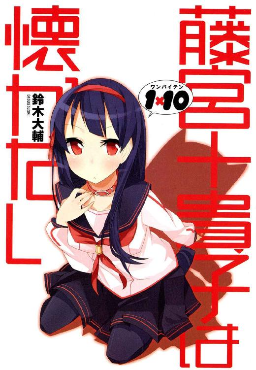
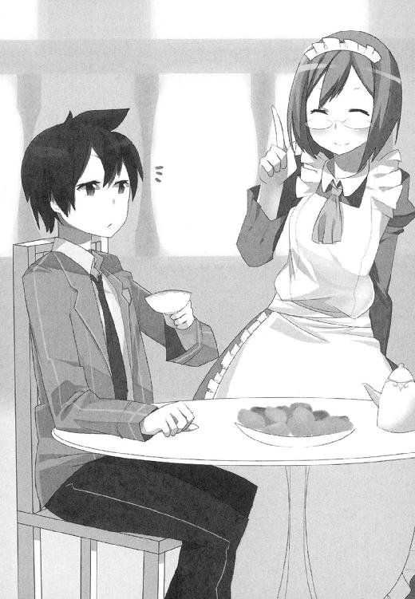

| 1×10藤宮十貴子は懐かない1 (富士見ファンタジア文庫) | |
| 鈴木 大輔 & ＰＡＮＤＡ | |
| 富士見書房 (2011) | |


本作品の全部または一部を無断で複製、転載、配信、送信したり、ホームページ上に転載することを禁止します。また、本作品の内容を無断で改変、改ざん等を行うことも禁止します。
本作品購入時にご承諾いただいた規約により、有償・無償にかかわらず本作品を第三者に譲渡することはできません。
本作品を示すサムネイルなどのイメージ画像は、再ダウンロード時に予告なく変更される場合があります。
本作品は縦書きでレイアウトされています。
また、ご覧になるリーディングシステムにより、表示の差が認められることがあります。
口絵・本文イラスト ＰＡＮＤＡ
一条天馬は満月の夜に死んだ。
より正確には五月六日の月曜日、夜七時五十六分ちょうど。
ビルから落ちて死んだ。
コンクリートの壁を這う雨どいの、めちゃくちゃ上のほうに登って下りられなくなった子猫を助けようとして──そして見事にミスった結果として。
（やっちまったなあ）
と天馬は思う。
足場にしてた雨どいの金具が、見た目よりずっとさび付いてたことに気づかなかった。
金具は彼の体重を支えきれず、あっさり真っ二つに割れて。
そのまま硬い地面へ真っ逆さま。
（だっせえの）
昔はもうちょっとだけ、運動神経とかよかったはずなんだけど。
（あーあ。なっさけねえわ、まじで）
満月を眺めながら、天馬はそんなことを思っていたりする。
......というのも、実はまだちょっとだけ彼は生きていたからで。
七時五十六分というのは、彼の心臓が最後の一仕事をしてピタリと止まった、ちょうどその直後ぐらいだったわけで。
その一仕事が、かろうじて天馬に最後のボヤきを可能にしていたわけで。
といってもまあ、それもあと何秒もつことやら。
彼の身体は輸血も心臓マッサージも無意味なレベルで、もうこの上なく壊れてしまっている。それはもう、ちょっと文章で表現するのがためらわれるくらいに。
ならばこう断言してもいいはずだった。
一条天馬は死んだ、と。
彼の人生の99・９９９９９９９９９％ぐらいは、五月六日の月曜日、夜七時五十六分ちょうどに使い切ってしまった。
野球でいえば０対１億ぐらいのコールドゲーム。
満塁ホームランを一万発うっても話にならない。
一条天馬、十六歳。
平凡だったような、波乱万丈だったような、どっちつかずの微妙な人生を送ってきた少年は、残り０・００００００００１％の人生をここで使い切り、それでハイお仕舞い──
の、はずだったのだけど。
「やってくれましたね」
声がした。
「いつかこうなる気はしてましたが。まさか、ほんとに、こうなるなんて」
女の子。
ひとりの女の子が、くっきり輪郭の見える透き通った満月をバックにして、天馬を見下ろしている。
（......ていうかこの子）
いつの間にそこにいたんだろう、とか。
そもそも誰だろうこの子、とか。
というかまだ死んでないの？ おれ。とか。
そういう疑問をすっ飛ばして、なにより先に天馬は思った。
（なんでこんなに怒った顔してるんだろ？）
と。
そのくらい強烈な表情だった。
せっかくきれいな顔してるのに、目は三角に吊りあがり、くちびるはわなないて。
今にも真っ赤な炎が噴き出してきそうな、そんな瞳で天馬を刺していて。
それは要するに『こいつぜったい許さないまじ死ね。ていうか殺す』的な怒りの表現だったわけで。
というか、次の瞬間にも三途の川を渡ろうとしている人間に向かってそういう態度というのは、ちょっとどうなんだろう？
......みたいなことを、天馬はもうろうとした意識で考えていたのだけど。
「言いたいことは山ほどありますが......こうなっては仕方ありません」
ハァ、と。
その子はひどく重い、まるで胃の中に鉛玉を沈めるようなため息をついて。
ただでさえ訳のわからない状況に困っている天馬に、さらにもっと訳のわからないことを言ったのだった。
「今日からわたしはあなたの犬です。どうぞよろしくこんちくしょう」
◆ ◆ ◆
それが、始まりの出来事。
すでにして一度は終わり、そしてまた完膚なきまでに終わろうとしていた人生が、もう一度始まった日──。
ＡＣＴ１ 藤宮十貴子は手に負えない
夢を見た。
一条天馬が昔から何度も見てきた夢。
ほんの小さな子供のころの夢だ。
天馬は何をやらかしたのか、身体中のあちこちにケガをしていて。
親友に『またバカなことして！』的な感じで怒られている夢。
そのとき天馬が負っていたケガは、即入院というほどじゃないにしても救急車ぐらいは呼ばれてもおかしくないやつで。
肘も膝もすり傷だらけ、打ち身ねんざなんてのもそこら中にあって、ひょっとしたら骨も折れてるかもしれないなー、みたいなことを冷静に考えていると、親友は本気で怒った顔で、でもものすごく心配そうな顔で、ケガの手当てをしてくれるのだ。
身体中のあちこちが痛すぎて、今にも涙が出そうで、泣き叫びたくなるけれど。
そんな顔を見てしまったら、天馬は目一杯のカラ元気で笑わなくちゃいけない。
どこにも根拠のない、それでもぜったい確かな自信をたっぷりもって、『だいじょうぶだって！ ぜんぜんよゆう！』なんてことを。
すると親友は『しょうがないなテンマは』的な感じで笑い返してくれるのだ。怒った顔も心配そうな顔も引っこめて。
そんな、夢。
懐かしくて。楽しくて。この上なく明るくて──
でもって最悪この上ない、夢。
やだなあ、と天馬は思う。
この手の夢って、最近やっと見ないようになってきたのに。
＊
目が覚めるとベッドの上だった。
細く絞られた間接照明に照らし出されて、白い壁がほのかにゆらめいているのが天馬の目に映る。
夜、らしい。
閉じられたカーテンのわずかな隙間から、透明な月の光がもれ入ってくる。
（満月、かな？）
月明かりの色から天馬はそう判断した。
てことは今のこの時間は、あの夜のつづきってことか。
いやー。それにしても色んなことがあったなあ。
危ない目にはこれまで何度もあってきたし、やばいこれ死ぬと思ったことも何度もあったけど。本気の本気で死にかけたのは初めてだった。いやいやいかんいかん、もうちょっと自重しないと。
......などと、いかにももっともらしく考えてはいるけれど。
今の天馬のコンディションはぜんぜんまともではない。
意識だけが覚めつつあって、でも身体はまだ眠っている感じというか。
身体を動かそうと思ってもちっとも言うことを聞いてくれなくて。指一本うごかすのも、まぶたを開け閉めするのさえ一苦労で。
自分の身体が自分のものじゃないみたいな。
でもまあ、そりゃそうか──と天馬は思う。
だって死にかけたんだから。
アバラは八割がた折れてて、肘と膝からは骨が飛び出ていて、ひょっとすると目玉とかも飛び出ていたような気もするけど......っていうかなんでおれ生きてんの？
と、このあたりでまともな思考が戻ってくる。
意識がはっきりしてきて、夢と現実の境目もはっきりしてきて。
そして、この部屋が天馬の部屋ではないことにも気づく。
壁紙とか、カーテンとか。何もかもぜんぜんちがう。
ちがうだけじゃなくて、やたら品がよくて高級感がある気がする。寝ているベッドからして上等だ。ふかふかのさらさら。そもそも間接照明なんて天馬の部屋には置いてないわけだし。
（どこだよ、ここ......）
まだちょっと寝ぼけたまま、もぞもぞ起き上がろうとして。
そこでやっと気づいた。
なんだか身体が重い。
疲れてて手足が重いとかじゃなくて、もっと単純に、物理的に重い。
何かが上に乗っている。
たぶん暑苦しかったんだろう。天馬を覆っていたはずの布団ははねのけられていて、だから『そいつ』は今、彼の身体の上に直接のっかっているのだった。
女の子が。
ちょうど机の上で居眠りするような、自分の腕を枕にするような格好で──ただし机の上ではなく、天馬の上で。すやすや寝息を立てている。
「............おおう!?」
なになに!? なんなの!? なんなのこれ!?
寝起きの一発目からヘンな状況にさらされて、天馬はあわてて飛び起きようとした。
いや、すんでのところで思いとどまった。
ヘンな状況ではあったけど、特に危険もなさそうだったし。何よりその子がとてもよく眠っていたので。
「............？」
ちょっと落ち着きを取り戻して、おそるおそる女の子の顔をのぞき込む。
薄明かりでもハッキリわかる、めちゃくちゃきれいな肌。つい突いてみたくなるやわらかそうなほっぺた。『白魚のような』なんてほめ言葉が失礼になってしまいそうなくらい、本当に細くて形のよい指。
よく手入れの行き届いた黒髪が、ちょっとほつれてくちびるのあたりに掛かっていて、妙に色っぽくて。そのくちびるもよく磨いた珊瑚みたいな色をしていて、これまたつやっぽくて色っぽくて。
（......いやいやちょっとまって。つーかこの体勢......）
遅まきながら気づいた。
よくよく見れば、その子は天馬の膝のかなり上のほうに顔を置いていて。
というかそこって、要するに太ももの付け根のあたり──というかぶっちゃけ股間のあたりなわけで。
考えようによっては、というか事情をまったく知らない誰かがこの状況を見れば、きわめて高い確率でそっち方面の想像をしちゃいそうで。
そしてさらに重大な事実。
腰骨のあたりに、なんだか妙にやわらかい感触がふたつ。
え。
なにこれ。
ひょっとして胸？ 女子の胸の感触なの？
なんかちょっとやばくない？ これって。いろんな意味で。
完全に目が覚めた。
とにかくあれだ、可及的すみやかにこの状況から離脱しないと。これ以上このままの体勢でいると、なにやらよからぬことを考えてしまいそうだし。
（つっても......）
困った。
女の子はがっちり体重をかけている格好で、ちょっと身体をずらしただけでは状況を好転させられそうにない。
（とにかくそっと、そっと。一ミリぐらいずつ身体をずらしていけばたぶん大丈──）
ぱちっ、と。
女の子がまぶたを開けた。
「うげ」
目が合った。
硬直する天馬の顔を、少女はなんだかうるんだ瞳で見つめてくる。
その無防備で、ひどく隙だらけの様子が、ぞくっとするほどかわいらしい。
「............よう」
なんとなく天馬は、片手を上げてあいさつ。
「............」
女の子は無言のまま、ほんわりした表情のまま、自分がたった今まで寝そべっていた箇所──天馬のデンジャラスゾーンのあたりに目を向けて。
そしてぼそりとひとこと、こう言ったのだった。
「............ねじれてください」
「は？ なに？──って、うおおおおぅ!?」
異変が起きた。
天馬の身体が、背骨を軸にしてぐるんっと回転したのである。
半回転、いや三分の二回転ぐらいか。
まるでガチムチのボディビルダーに首と足をつかまれてひねられているような。
ていねいにやれば理想的なストレッチ、強引にやれば単なるプロレス技、みたいな。
そんな姿勢に、天馬の身体がなってしまっている。
彼の意志ではなく、なにか別の力によって。
「痛ててててててえててええええええ!?」
ぎり、ぎり。
ぎし、ぎし。
音を上げて身体がねじれていく。まるでぞうきんでも絞るみたいに。
ちょっともう、プロレス技の範囲すら超え始めてきて、どれだけガマン強いレスラーだって泣いてギブアップするってくらいで、
「────っ！────ッ!?」
もはや痛すぎて声もあげられない天馬の耳に、忌々しそうな声が聞こえてくる。
「不覚だわ。こんな醜態をさらして......慣れないことをしたからよほど疲れてたのね」
いやいやそんなこと言ってる場合じゃないでしょ、この状況!?
と叫びたくても叫べないので、目だけで必死に訴える。
ちょっとねえ！ この状況なんとかして！ まじで！
「............ふん」
女の子がちいさく鼻を鳴らす。そのとたん、天馬の身体を締め上げていたなんだかよくわからない力はうそみたいに消えてしまった。
「お？ おおっ？ 直った。ていうか何だ今の？」
「状況を説明したいのですが構いませんか」
情けない顔で身体のあちこちをさすっている天馬に、なんだかひどく冷たい声。
「え？ な、なに？」
「状況を説明したいのですが構いませんか、と訊いています」
「状況って......なんの」
「あなたというひとは」ぶちん、と血管の切れる音が聞こえた気がした。「いま自分が置かれている状況にすら無関心なほど鈍感で無責任で怠惰なんですか」
「ああいや！ そういうわけじゃないけど！」
あわてて言いつくろう。
べつに彼だって、自分の置かれてる状況が気にならないわけじゃない。
『おれってさっき死にかけてたよね？』とか。
『君って、さっきおれが死にかけたときに居た子だよね？』とか。
そういう疑問はいくらでも出てくるんだけど。
ただ、目の前にいるちょっとびっくりするくらいかわいい子が、せっかくのきれいな顔を不機嫌そうにゆがめてにらみつけてくるから。天馬としてはちょっと腰が引けてしまっているわけで。
それにしても、彼女はいったい何をそんなに怒っているんだろうか？
さっきの際どい体勢のことを怒ってるのかな？ まあ確かに、かなり微妙な体勢だったし。怒るのも自然かもしれない──っていやいや、そんなはずないじゃん。それはぜったいおかしい。
だっておれ、何も悪くないよね？ ただ寝てただけで何もしてないじゃん。変な体勢になったのはたぶんこの子のせいなわけじゃん。なのに何でこの子のほうが怒ってんの？
というか。
こうしてあらためて彼女を正面から見て、ようやく気づいた。
いま天馬の目の前でまなじりを吊り上げている、この少女。
実はまったく知らない相手、ってわけでもない。
◆ ◆ ◆
たしか、甲子園を真剣に狙ってる野球部の連中が本格的な練習を始めたころのはずだ。
入学式が終わってまだそれほど経ってない、ある日のこと。
「藤宮っていいよなあ」
と、友人のひとりが切ない感じでため息をついた。
昼休み。天馬の通う星邦学園の、学食での一幕。
「だれ？ 藤宮って」
カツカレーのにんじんを丁寧によけながら天馬が訊くと、
「藤宮っていったらお前、ウチの学園じゃひとりしかいねーだろ」と友人。「藤宮十貴子。今年中等部からあがってきた新一年の」
「あー......」
カツカレーの衣を慎重に外しながら天馬は言った。
「うんごめん。わかんね」
「うっそまじで？」
「藤宮だぜ？ 藤宮十貴子」
友人たちが口々に言い立ててくるけど、やっぱり心当たりがない。というかカレーを自分好みの形にするのに集中していて、あんまり真面目に思い出そうとしていない。
「藤宮十貴子だよ、天馬。お前はあまり興味ないんだろうけど」
となりに座っていたやつが苦笑いしながら言った。
沢木悠太郎。天馬のいわゆる幼なじみってやつ。
「誰でも知ってるよ普通は。ウチの学園で知らないのはおまえぐらいのもんだ。なんせ学園のアイドルだからな、あの子って」
「あー。言われてみれば」
頭の片隅からたよりない記憶をひろってくる。そういえばそんな子もいたっけか。
「成績優秀。スポーツ万能。容姿端麗」沢木が指折り数えながら、「しかも家は金持ちで、おまけに誰にでも人当たりがよくて愛想がいいときてる」
「そりゃすげー。スーパーマンだな」
「そんなスーパー女子高生の名前くらいは覚えてていいと思うぜ、天馬」
「うん。そうしとく」
「だいたいお前、小等部からずっとこの学園にいるだろに。藤宮ってよそからウチに転入してきた子だけど、そのころからずっと有名人だったぜ？」
「そういやそうだった。ていうか、沢木と何度もこんな話してる気がする。『藤宮って誰だっけ』『だから学園のアイドルだって』みたいなの」
「そうだよ。何度おなじ話題をループさせるんだよ」
「いやすまん。なんかよく忘れるんだよそのネタ......ていうかさ、沢木」
「ん？」
「なにしてんの？」
「なにってなにが？」
天馬はすごく嫌そうな顔をして、
「おれのカツカレー。わざわざにんじんよけてるのに。なんで皿に戻すわけ？ にんじん」
「にんじんぐらいちゃんと食え。おまえ昔はそんなことしてなかっただろう」
「にんじん嫌いなんだよ」
「嫌いでも昔は食ってただろ、ちゃんとがまんしてさ。まあでもカツの衣は食わなくていい。コレステロール高そうだし」
「むしろ衣だったら食ってもいい」
「だめだ」
「つーかいいじゃんかそのくらい。にんじんで足りない栄養は別のもので取るよ。サプリとか」
「そういう問題じゃないだろう。だいたいお前は──」
言い争い──というほどではないけど、なんだか低レベルな言い合いが始まって、
「なんだ。また始まったのか夫婦げんか」
「おまえら仲いいよなー」
「ホモだよぜったい」
席をいっしょにしている他の友人たちがからかってくるけど、いつものことなので笑って流す。もちろん天馬と沢木はそういう関係ではない。ただの幼なじみで親友ってだけ。どちらも性的な好みは至ってノーマル。
「ったく、ほんとお前は......」
沢木がため息をついた。どこかちょっとあきらめ気味の。
「昔はそんなことなかっただろうが。昔のお前はもっとこう──」
「出たよ沢木のそれ」
「その話も何度も聞いたぜ？」
すぐさま周りからツッコミが入った。
「昔の天馬はすごかった、ってやつだろ？」
「いやそうだけど。いやウソじゃなくて本当なんだって」
沢木がちょっとむきになった声を出すけど、友人たちがからかい声と笑い声でそれをつぶしてしまう。
「昔は昔、今は今っしょ？」
「今の天馬って、ただの天然ボケのほんわかキャラじゃん」
「それに昔の天馬がほんとにすごかったとしてさ。今じゃ沢木のほうがよっぽど出来るじゃん、勉強も運動も。背もでかいし顔もいいし」
だよなー、とか言って、友人たちはあははと笑い合う。
沢木はむすっとした顔、天馬はちょっと居心地わるそうに肩身を狭めつつ、「まあまあ、いいじゃんかそんな話はさー」みたいなことを言って場をとりなしながら、
「そんで？ なんでその、藤宮って子の話になったの？」
「ほら。あれ」
友人がアゴをしゃくった。
厨房のとなり、セルフサービスの注文の受け取り口のあたり。
腹をすかせた生徒たちの行列の中に、ひときわ目立つ女子がいた。
わいわいがやがやと騒がしい食堂ホールの中で、その子だけが妙に輝いて見える。彼女が特に何をしているというわけでもなく、連れの女の子たちとおしゃべりしてるだけなんだけど。
背は普通ぐらいだし、手足だって確かに細くて長いけど、世にもまれなレベルってわけでもないし。メイクとかもしてなさそうだし、髪だってぜんぜんカラーリングもしてない感じの真っ黒だし。
でもそれらをトータルで見た時、とたんに彼女の魅力が増して見えるから不思議だった。
美人っていうのは容姿だけの問題じゃないんだなー、と思える、そんな子。
「はあ。すごいね」目をぱちくりさせて天馬。「あんな子もいるんだなー、世の中には」
「だろ？ あれが藤宮十貴子」
「やばいよな、マジであの子。かわいすぎ」
「オーラがちがうよオーラが。やっぱさ、いいとこのお嬢さまってのは普通じゃないのかなー」
友人どもはみんなして藤宮十貴子を眺め、ぽわわーんとしている。
なるほど偶像とはよくいったもので──
と、皮肉ではなく素直に感心した。
友人たちだけじゃなくて、食堂にいる生徒たち全員が、意識のどこかで藤宮十貴子という少女に注意を向けているような。そんな感じさえしたから。
その場に居合わせれば決して無視できない、ちょっとした強制力のある存在感。
これまでぜんぜん意識してなかったけど、彼女のことを知らない天馬のほうが悪い気がしてきた。
「いやーすまんすまん。あんなかわいい子のこと知らないなんて、間違ってるよな、おれ」
「そうだよ。やっと気づいたか」
「おう気づいたぜ。これからは毎日あの子のこと注意して見てることにする。授業が終わったらあの子の教室いってこっそり見守るし、登下校の時もうしろをぴったりついていく。そこまですれば忘れんだろーし。でもって、もうお前らに無知をバカにされることもなくなるんだぜ」
「つーかそれだとストーカーじゃん」
「え、まじで？ それってもうアウト？」
「アウトだよ当たり前だよ。なにバカなこと言ってんの」
「そしてやっぱりバカにされてるし天馬」
「わっはっは」
みたいな感じで笑い合うころには、もう友人たち全員の昼食が終わっていて。
「教室もどるか」
「おー。そうしよそうしよ」
「やべー。次の英語予習してないわ俺」
「やっべ俺もだ」
──一条天馬、十六歳。
身長百六十八センチ。体重五十五キロ。
『別に眠いわけでもないのにいつも眠そうな顔してる』と言われる以外は、ごく普通の高校生活を送っている、どこにでもいそうなヤツ。
下り坂のないかわりに上り坂もない、ゆるくて平坦な道をのんびりだらだら歩いて、そうしていつの間にか人生を終える。
そんな生き方を望んでいる、ちょっとばかり無気力で無関心な、そんなヤツ。
......というのが、彼を知るほとんどのヤツらの評価なのだけど。
「あれ？」
「うわ。こっちくるよ」
友人たちがざわっとなった。
食器をのせたトレイを手に、みんなして席を立った、ちょうどそのタイミングで。
藤宮十貴子の女子グループがこちらにやってきたのだ。あちらさんは湯気の上がる昼食をトレイにのせて。
「うわ。やばくね？」
「このままいくと藤宮十貴子とすれ違っちゃうよ。やっべまじラッキーなんですけど」
「あの子って食堂とか滅多に来ないもんな」
「どうしよ？ 声かける？」
「俺、写メとりたいなあ」
「俺は握手してもらいたい」
友人たちはキャッキャキャッキャと、ジャニーズの追っかけしてる女の子みたいにはしゃいでいて、でもまあそんな度胸があるやつなんて誰もいなくて。
そうしてる間にも藤宮十貴子たちと天馬たちの距離は縮まってきて。
友人たちが口をつぐみ、ちょっと縮こまった感じで学園のアイドルの横を通り過ぎようとした──その時。
天馬がいきなり動いた。
タックルだった。
持っていたトレイを投げ捨てて、まったくなんの前触れもなく。
今しもすれ違おうとしていた──藤宮十貴子の胸元めがけて、なんの躊躇もなしに体当たりをぶちかましたのである。
「きゃあ!?」
「うおっ!?」
いくつもの驚きの声が上がる中、天馬のタックルは見事に成功。
まるでアメフトかラグビーの試合のひとコマみたいに、天馬と藤宮十貴子は折り重なって倒れこんだ。
がらがらがっしゃん！
食器が散乱する音や、テーブルや椅子が倒れる音を派手に立てながら、天馬は藤宮十貴子といっしょに着地。
そして訪れる沈黙。
いきなりの出来事だった。
あまりにいきなりすぎて、誰もとっさに反応できない。
みんな目を点にして、この事件の下手人へ視線を集中している。
「............あーいや」
気まずそうに、天馬。
「ごめん。ちょっと足がすべって」
「............いやいやいや。天馬。おまえ」
啞然としていた友人のひとりがようやく口を開く。
「いきなりなにやってんの？ まじで」
「あーいや」どうやって答えたものか困りつつ、「とにかくええと......ごめんだいじょぶ？ ええと藤宮さんだっけ？......って」
そこでようやく気づいた。
今の天馬と藤宮十貴子の体勢。
彼女のほうは背中を床につけていて。
天馬はその上に乗っかって、彼女と顔を向き合わせている状態。
「............」
彼女はきょとんとした顔で、目をぱちくりさせていて。
でもって、近くで見ると彼女はほんとうにかわいかった。『世にもまれなレベルってわけじゃない』とか言ってたさっきの自分は殴られていいと思う。明らかに彼女のかわいさは『世にもまれなレベル』だった。
というか今はそんなことどうでもよくて。
つまりこの体勢は。
まるで天馬がよからぬ欲望を抱いて、むりやり押し倒してしまった、みたいな。
しかも藤宮十貴子のスカートなんか、太ももの付け根のあたりまですっかりめくれ上がっていて。
たぶん角度によってはつまりその、見えてるはずで。
さらに悪いことに、天馬の手は藤宮十貴子のなんというか、胸の部分に触れていて。
さらにさらに悪いことに──これはわざとじゃなく、不可抗力の範囲だと思うけど──『もみしだく』なんていう表現がぴったりくるぐらいの勢いでわしづかみにしていて。
「ちょっとなにしてんのあんた!?」
あまりのことに呆然としていた女の子たちが、目を吊り上げて騒ぎ出した。
「離れなさいよちょっと！ この変態！」
「藤宮さんだいじょうぶ!?」
不届き者の天馬は蹴倒されるようにしてアイドルから引きはがされ、たちまち女子たちに囲まれてしまう。
「なに？ なんなの？ どういうつもりコイツ」
「なに考えてんの信じらんない」
「どうする？ 先生よんでくる？」
なんだかもう、今にも魔女裁判とかが始まりそうな感じ。
もちろん天馬も状況は痛いほどわかってるから「いやごめん足がすべって」とすぐに謝ったのだけど。
天馬は『春男（頭の中が）』なんて周りから言われてるぐらいほんわかしてるタイプで、そんな彼がいつもどおりの口調で言ったものだから、イマイチ誠意が伝わらなくて。というかむしろ怒りの炎に油を注ぐみたいな形になって。
「なにこいつまじむかつく」
「先生じゃなくてケーサツよぼうよ」
とかなんとか、さらにまずい流れになってきた。
天馬の友人たちも『さすがにこれはフォローできない』と判断したのか、あきらめたように首をふったり、胸の前で十字を切ったり。
ただひとりだけ、沢木だけはタイミングをみて口をはさもうとしてくれてるようだったけど、この状況で良いタイミングなんてそうそうあるわけもなく、そのころには食堂にいる生徒全員がこちらの成り行きに注目していて、なにやらもう魔女裁判どころか死刑執行が始まりそうな勢い──
「お怪我はありませんか？」
声がした。
べつに大きな声でもないのに、ざわめく食堂ホールを圧するような、涼やかで凜とした声が。
藤宮十貴子だった。
友人の女の子たちに支えられながら、天馬へ心配そうな顔を向けてもう一度「お怪我は？」
「え？ ああいや」
天馬もあわてて起き上がり、制服のすそを払う仕草をしながら、
「だいじょうぶだよ、うん。ぜんぜん」
「そうですか。よかったです」にっこり、「でも気をつけてくださいね。料理が手とかに掛かったらヤケドしてしまいますし」
............あれ？
ぜんぜん怒ってない？
という空気が、藤宮十貴子の友人たちの間にも、天馬の友人たちの間にも、食堂ホール全体にも広がった。
足がすべったなんてのは下手な言い訳で、つい学園のアイドルにムラッときてけしからん行為に及んだんじゃ──みたいな目で誰もが天馬を見ていたのだけど。
そんな疑惑も、朝日を浴びた霧が晴れるみたいに薄れていく。
藤宮十貴子の『気にしてませんよ』という無言の態度には、そのくらい大きな効果があったのだ。
「すまなかった」
さらに沢木が割って入る。
「この馬鹿にはあとできっちり言っておく。昼飯も片付けるし、弁償もするから。どうか勘弁してやってくれないか」
この親友は、藤宮十貴子ほどじゃないけど学園内ではけっこう有名人で、しかもかなりモテる。そんな沢木がひどく誠意のこもった感じで頭を下げると、天馬がそうするのとは大ちがいの効果があるわけで。
「まあ......ねえ？」
「そこまで言うなら......」
怒りに震えていた取り巻きの女の子たちも、感情のやり場をなくしたみたいに顔を見合わせて。
その頃にはもう、ホール内の野次馬たちもアクシデントに興味をなくし、食堂はいつもの騒がしい雰囲気を取り戻していた。
床に散らばった食器と料理を沢木が片づけ始め、天馬もあわててそれを手伝い始める。
すると今度は、藤宮十貴子が乱れた椅子を直し出して、それを見た彼女の友人たちや天馬の友人たちも後につづいて──
◆ ◆ ◆
......そんな出来事が、ちょっと前にあった。
だから今、この見知らぬ部屋──想像するに藤宮家の客室か何かだろう──で、やたらとつんけんした藤宮十貴子とふたりきりで顔を合わせていると。
『これってどういう状況なの？ 早く説明して！』という気持ちよりも、たいへんに居心地の悪い気持ちでいっぱいになってしまうのである。
（この間のこと、ひょっとしてほんとは怒ってるのかなあ？）
あの件は水に流してくれた感じだったけど。やっぱりちゃんと謝っておいたほうがいいかなあ。というか、そうしないとなんかこっちの居心地も悪いしな、うん。
「あの。藤宮......さん？」
「なんです」
トゲトゲしい声にめげそうになるけど、ここはぐっとがまん。
「状況を説明してくれるのはありがたいんだけど。その前に謝っておきたくて」
「謝る？ 何を？」
「いやその。この間のこと。ほら、あの食堂の」
「............」
あれ？
なんで？
なんかこの子、さらにもっと機嫌が悪くなったような......？
「ええとつまり。ごめん。あの時は。悪気はなかったんだ、ほんと」
「............」
「ええと......それだけです。はい」
尻切れトンボに話を終えた天馬に、藤宮十貴子はため息ひとつ。
「過ぎたことを蒸し返すのは好きじゃないんですが。それではこちらからもひとつ訊かせてもらいます」
「え？ なに？」
とたんに天馬は緊張する。
正直、ここは何を言われても『はいすいません』と平謝りするしかないわけで。
謝罪と賠償は可能な限りしたいけど、もし万が一ムチャな要求をされたらどうしよう。できれば普通の高校生にもできそうな範囲でお願いしたいなあ。
............などと考えていたのだけど。
藤宮十貴子の口から出た言葉は、意外なものだった。
「ケガの具合はもういいのですか？」
「え？ ケガ？」
一瞬、何を言ってるのか分からなかったけど、
「ああそっか、そうだよな。さっきのおれって、内臓はみ出す勢いだったし......って、そういえばぜんぜんなんともないよ？ おれの身体」
「今してるのはその話じゃありません」さらにジト目になって、「あなたの手です。靭帯あたりを痛めていたのでは？」
「手？ いやまあそりゃ、肘とか膝から骨も出てたっぽいし。靭帯ぐらいはやらかしててもおかしくないけど......」
「そうじゃなくて。先日の。食堂での一件の話です」
「......んんん......？」
首をひねり、しばらく考えてから、
「あれ？ ひょっとして？」天馬は目を丸くした。「君、気づいてたの？」
と言うと、藤宮十貴子は『当然です』という顔。
でもそれは、ほんとに驚きのことなのだった。
なにしろそれって、いつも天馬のことをよく見てる沢木でさえ気づいてないことだったから。
「うちの学園の野球部が大事な時期を迎えているのは聞いてましたから」
と彼女は言う。
「あなたもそれを知ってたからこそ、あんな行動に出たんじゃないんですか」
こりゃまいった、と天馬は舌を巻いた。
どうやら彼女は何もかもお見通しらしい。
例の食堂の一件の、知られざる裏話というやつである。
あの時。
食事を終えて教室に戻ろうとした天馬たちと、これから食事をとろうとしていた十貴子たちがすれ違う瞬間。
たぶん、気づいていたのは天馬だけだった。
『キーン！』という高い金属音と、『いったぞー！』という興奮気味の声が、遠くから小さく聞こえたこと。
野球部のエースがマウンドから鋭いカーブを投げて、そのカーブをさらに高い技術で打ち返したバッターの打球が、プロもびっくりの特大ホームランだったこと。
そのボールがするどい放物線を描いて、天馬のグループと十貴子のグループに向かって飛んできたこと。
この日、春先にしては妙に暖かかったために、食堂の窓の多くが開け放たれていたこと。
甲子園を本気で狙ってる野球部が自主練してるグラウンドの、ちょうど外野の奥にあたる場所に食堂が位置していたこと。
ホームランボールが、開け放たれた窓のド真ん中めがけて迫ってきたこと。
しかもそれが、学園のアイドル様のきれいな顔にばっちり命中しそうだったこと──
「わたしは気づくのが遅れましたから」
と、十貴子はいよいよ不機嫌になって言う。
「危険を避けるだけの余裕はなかった。だからあの時、あなたはああいう無茶をしたんじゃないんですか」
「あー。うん。まあ」
「しかもそれだけじゃなくて。飛んできたボールを直接手で摑んで、ふところに隠したでしょう」
なんてこったい。
そこまで見てたのかこの子。
「あのすぐ後で、野球部のひとたちが真っ青な顔して食堂に飛び込んできましたけど。何の騒ぎも起きてなかったから、みなさんきょとんとしてましたね」
「あー。うん。そんな気もする」
「もしあの時、ケガをするひとがひとりでも出ていれば。十分に甲子園へ行けるだけの実力のある野球部はどうなっていたでしょうね」
「あー。うん。困る......かな？」
「あの時のあなたはずいぶん無茶な体勢をしてましたね。わたしにタックルしながら飛んでくるボールを摑んでふところに隠した上、しかもなるべく着地の衝撃を抑えるようにわたしの背中と床の間に手を回して。大した曲芸だとは思いますけど、『ぐきっ』という音がしたの、わたし聞いてました」
「あーいや。お恥ずかしい」
「しかもあなた、ぜんぶ黙っていましたね。友人の方たちに怒られながら、馬鹿にされながら。それでもヘラヘラ笑って」
じとり。
きっつい目でにらみつけてくる。美人がこんな顔するととても怖い。
天馬は目をそらして頭をかきながら、
「ええとじゃあ。君にはお礼を言っとかなきゃいけないな」
「お礼？ なぜ？」
「えーとだって、君はおれが考えてることをちゃんと理解して、その上であの場を丸く治めてくれたんだよね？ ええとその、おれが君の胸をさわったこととかも、怒らなかったでしょ？」
「............」
「いやいや！ わざとじゃないよあれは！ ほんとに！ だからそんな顔しないで！」
「......お礼なんて」もうこの上なく不機嫌そうに十貴子は言う。「言われる筋合いはありません。やめてください。助けられたのはわたしのほうじゃないですか」
「あー。うん？ そっか。うん」
天馬としてはそうとでも言っておくしかない。
それにしても──と、ほっぺたを指でかきながら思う。
まあそりゃ確かに？ 胸もんだし、スカートもめくれさせちゃったけど。
怒るのも、あたりまえかもしれないけど。
それでも天馬は一応は彼女を助けたわけで、彼女の恩人にあたるわけで。
しかも彼女、そのことはちゃんと自覚してるみたいで。
なのにおれ、なんでこんな風に怒られてるみたいになってんだろ？ いやべつに恩着せがましいこと言うつもりはないけど、それにしたって彼女のこの態度というのは、なんか微妙じゃない？
「話を戻してもかまいませんか」
「え？」
「状況を説明したい、とさっき言ったはずですが」
そうだった。
一条天馬は確かに死にかけていたはずで。というかほぼ１００％死んでたはずで。
なのに今はケガひとつなくぴんぴんしていて。
これっていったいどうなってんの、とか。
というかここはどこなのか、ほんとに藤宮十貴子の家なのか、とか──
「わたしは魔法使いです」
疑問を指おり数えているうちに、十貴子がサクッと切り出した。
ていうか、え？ なんだって？
「魔法使い？」
「そうです」
「魔法使いって、あの、いわゆる魔法使い？」
「おそらく、おおむねあなたが想像しているとおりの」
うーん、と天馬は腕を組んで首をひねる。
「信じられませんか？」
「うん、まあ。それってあれだよね？ ン十年彼女がいないひととか、そういうひとたちのことじゃないよね？」
「言っている意味がわかりませんが、ちがうのは確かです」
「そっか。そうだよねえ、うん」
「それで？ 信じてはもらえませんか」
「うーん。それってつまり、空を飛んだり炎を噴いたりとか、そういうことするひとのことだよね？ 魔法使いって」
「べつに空を飛んだり火を噴いたりするのが仕事ではありませんが、魔法使いの実態をごく一部ながら言い当てているのは確かです」
うーん。
じゃあやっぱり、彼女の言ってるのは、ほんとにいわゆるアレのことなのか。
「信じられませんか」
「うんごめん。あんまり」
愛想笑いを返す天馬に、しかし十貴子はべつに気を悪くした感じでもなかった──というか、その反応は当然のように予測していたようで。
次いで彼女が口にしたのは、抗議や説得の言葉ではなく、ごく簡潔なこんなひとことだった。
「ねじれてください」
「え？ なにが？──って、うおおおおぅ!?」
異変が起きた。
なんだか身に覚えのある異変が。
天馬の身体が背骨を軸にしてぐるんっと回転して、まるでガチムチのボディビルダーに首と足をつかまれてひねられてるような、ていねいにやれば理想的なストレッチ、強引にやれば単なるプロレス技、みたいな。
「痛てててててえええてええ!?」
悲鳴を上げる天馬に、しかし十貴子は眉ひとつ動かさず、
「信じられませんか」
「いやいやちょっとまって！ なにこれ!? ひょっとして君がやってんの!?」
「論より証拠、といいますから」
と涼しい顔。
「それで？ まだ信じられませんか」
「いやいやいや！ 信じるとか信じないとかそういうことじゃ」
「まだ証拠が足りないようですね」
「痛てててててえええてええ!? いやわかった信じる！ 信じるから！」
とたん、天馬の身体を絞り上げていた万力のような力がうそみたいに消える。
「し、死ぬかと思った......死にかけたばっかなのに」
「論より証拠ですから」
「いや、それにしたってね......いやまあいいや」
あんまり納得はしてなかったけど、天馬は先をうながす。
「で、君は魔法使いなのね」
「そうです」
「でもって君の言いたいことはつまり？ 君は魔法を使っておれを助けてくれたと。そういうことになるのかな？ 話の流れ的に」
「そうです」
うーん。とまた腕組み。
そんな、ねえ？ いきなり魔法使いとか言われても。そういうのはハリー・ポッターとかの中だけで通じる話なんだけどなあ。ここは普通に現代の日本なんだし。
でもまあ、そんなうそ臭い話を証明させるための『論より証拠』なんだろうし。実際よくわからん力で絞ったぞうきん状態にされたし。どうみても死んだはずのおれがこうしてぴんぴんしてるわけだし。
「うん、そうだな。魔法うんぬんはともかくとして、君がおれを助けてくれたのは確かっぽいし。とにかくお礼を言わなきゃね。ありがとう、ほんとに」
「べつに。わたしは自分のするべきことをしただけですから」
と、十貴子はそっけない。
いやそっけないどころか、さっきから天馬を肉親の仇みたいな目で見ていて、天馬としては意味もわからず縮こまっているしかない。食堂での一件をよっぽど根にもっているのか......そりゃまあ胸もみ＆スカートまくり上げだし、怒るのもわかるけど。
でもこの子ってさ。『誰にでもやさしい評判の優等生』なんじゃなかったっけ？
「ところでひとつ訊きたいことがあります」
と、十貴子はなおも一触即発の顔。
「わたしは魔法を使ってあなたを助けましたが、あなたがどうして死に瀕するに至ったのかまでは知りません。そのあたり、今後の参考に聞いておきたいんですが」
「え？ ええとなんでって......」
ほっぺたをぽりぽりかいて、なんとなく目をそらしながら。
「ええと、猫を助けようとして」
「............。なんですって？」
「ええとだから、猫を助けようとして。五階建てぐらいのビルのさ、雨どいのところに。子猫がいてね。なんかさ、のぼってみたはいいけど降りられなくなってたっぽくて。今日ってけっこう風吹いてたし、今にも落ちそうだったしさ。おれ以外の誰も気づいてなかったし、そもそもおれぐらいしかそこにいなかったし、それで雨どいを伝ってこう」
そこから先は口にできなかった。
話の聞き手が、爆発寸前になってるのがわかったので。
「猫。猫ときましたか。ええ、猫ね、猫......」
十貴子が低いトーンの声でぼそぼそつぶやいている。肩をはげしく怒らせ、くちびるをひくひくわななかせて。
やばい。めちゃくちゃ怖い。
「......命は尊いものですし、ましてわたしは猫が大好きです。ええ、アレルギーの体質さえなければこの家を猫でいっぱいの猫屋敷にしたいくらいです。です、が。わたしは、わたしはそんなことのために......ううん、そんなことなんて言っちゃいけないわ。でも、それにしても、それにしてもこれはあまりに......」
「ええと、あの」
フォローしなきゃけいない、と思った。
「ええとさ」
「............なんです」
「命を助けるのは理屈じゃないと思うんだ。うん」
「自分の命を大事にするのにも理屈が必要ですか？」
「う」
「そもそもあなた、自分自身の安全はきちんと確認しましたか？ あるいは、あなた以外の誰かに助けを求める手段を十分に検討しましたか？」
目をそらすしかない。
あの時はとにかく夢中だったし。一秒を争う感じだったから、あれこれ考えてるヒマなんてなかったのも確かなんだけど。
でもいちばんの理由は、若気の至り、ってやつなんだと思う。
ついガラにもなく勝手に身体が動いた、というか。
昔の自分のレベルで動こうとしてしまった、というか。
だから十貴子の指摘は、天馬にとって実に耳が痛いわけで。
「......まあいいでしょう。何もかも手おくれ、すべては済んだこと。今はこれから先のことを前向きに考える必要があります」
「う、うん。そうだよね。何ごとも前向きなのがいいよ、うん」
それで怒りを納めてくれるなら御の字だ。
「......ええと、ところでいま何時？ けっこう夜もおそくなってると思うんだけど、おれそろそろ家に帰らないとまずいかも」
「その必要はありません。あなたには今日からこの家で暮らしてもらいますから」
「はい？」
「あなたにはこの家に住んでいただく。そう言いました」
いやいや。
ええと。どゆこと？
「ええと、ここって君の家だよね？ たぶん」
「そうです」
「んで、おれが？ 住むって？ ここに？」
「そうです」
「なんで？」
「言えません」
............。
ええと。
「......そんなこと言ってもさ、君のご家族の方は？ なんて言ってるの？」
「問題ありません。年に一度も戻ってきませんから」
「いやごめん。そういうことじゃなくて。ええと......あれ？」
あまりにも十貴子の態度が『ごく当然のこと』を言ってるみたいな風だったので、天馬はちょっと考えてしまった。
なんだろ。おれって何かおかしいこと言ってる？
「ええと、間違ってたらごめん。君っていま、かなーり無茶なこと言ってるよね？」
「そうですね」
あ。よかった。自覚あるんだ。
「ええとじゃあごめん。今の話が無茶だってことは、おれも君もよくわかってるってことで。というわけで、丁重にお断りしてもいい？」
「だめです。あなたにはこの家で暮らしてもらいます」
ええええええ～？
「あの、ごめん。訊いていい？......なんで？」
「言えません」
「......自分が無茶を言ってるっていう自覚は？」
「あります。でも理由は言えません」
思わず眉間をもみほぐしながら考えてしまった。
天馬の理解にまちがいがなければ、彼女の言ってることは次のようになる。
『あなたが嫌だろうと断ろうと、何が何でもわたしと同居してもらいます』
『でもなぜそうしてもらうのかを情報開示するのは拒否します』
......無茶ぶりにもほどがあるんじゃあるまいか。
「この家での同居が嫌なら」と、それでも十貴子は平然とした顔。「わたしがあなたの家で暮らしてもかまいませんが」
「いやいやいやいや」
なに？
なに言ってんのこの子？
わけわからん。おかしくね？ この子って学園では有名な優等生じゃなかったっけ？ なんでこんな変なことばっか言うの？
「ひとつだけハッキリ言っておきます」
頭をかかえて苦悩しまくる天馬へ、十貴子はあくまで冷然と告げた。
「わたし、好き好んでこんなこと言ってるわけじゃありませんから。その点だけはくれぐれも誤解しないよう」
「......なにそれ？ どゆこと？」
「言えません」
またそれかよ！
さすがの天馬もおかんむりだった。自分は穏やかで根気のいいほうだと思ってる彼だったが、これではなんともかんとも。
「......あのさ、わかってるとは思うけど。おれだけじゃなくってさ、それじゃあ誰だって納得しないっしょ？ もうちょっとこう、説明責任ってやつを果たしてくれない？」
「言えない、という意味をくみとってはもらえませんか」
「限度ってもんがあるっつの」
言えないんだか言いたくないんだか知らないが、天馬にだってゆずれるところとそうでないところはある。
「ではひとつだけ」
いかにも渋々、という感じで、
「魔法というのは代償なしには使えないものなんです。ましてや99％死んでいた人間を１００％蘇生させるなんていう大きな魔法ならなおさら」
「ははあ。『魔法』ねえ」
もうそのへんからして半信半疑なんだけど、そんなこと言えば彼女がまたツノを生やす気がするし。
「わたしの口から言えるのはここまでです。それ以上は口が裂けても言いません」
「え？ それだけ？」
「それだけです」
「少なくね？」
「それ以上は口が裂けても」
って言われてもなあ。
彼女は天馬を助けるために魔法を使って、その魔法の代償が天馬と同居することだ、というのか。わけわからん──って、ああそういえば。
「あのさ」
「まだ何かあるんですか」
「思い出したんだけど。さっき君『これからわたしはあなたの犬です』だとか何とか言ってなかったっけ」
言わなきゃよかった、と速攻で後悔した。
「ええ。これからわたしはあなたの犬も同然の暮らしを送ることになるでしょう。誰のせいだと思ってるんですか」
額に怒りマークが見える──そのくらいわかりやすくて、激しくて深くて今にも爆発しそうな怒りっぷりだった。
天馬の本能が即座に判断する。
だめだ、これ以上この話題をつづけるのはやめよう。これ以上は命にかかわりそうな気がする──
とその時。
「お取り込み中のところ失礼します」
ノックの音と共に誰かが部屋に入ってきた。
「あら。お目覚めになられたんですね。具合はいかがですか？」
メイドさんだった。
うわすげー本物のメイドさんっぽいよこの人、と思うより先に、天馬はそのメイドさんについ見とれてしまった。
なんというか、非常に好みの女性だったので。
ちょっとおっとりした、ほんわかした雰囲気。出るところは出て引っ込むところは引っ込んでいる、みごとなスタイル。
これぞ女性、みたいな感じ。ものすごく大人な感じがするし。ついでにメガネっ子なのも天馬的にポイント高いし。
「山田と申します。これからよろしくお願いいたしますね、天馬さん」
やわらかそうな声もやさしそうな物腰も、１００満点。
春の陽気みたいなメイドさんの笑顔につられて、天馬までほんわかした気分になってしまう。まあ彼は元からそんな感じだけど。
「お加減もよろしいようですね。安心しました」もういちどニコリと笑ってから、「ところで十貴子お嬢さま」
「なんです」
「今日も『挑戦者』の方がお見えになっていますが」
「挑戦者？」とこれは天馬。
はぁ、とため息をついたのは十貴子のほうで、
「こんな時に......いえ、むしろちょうどよかったのかもしれないわね」
「そうですねお嬢さま」
「いいわ。行きましょう」
言って、すたすたと部屋を出て行ってしまった。
「天馬さんも」
と、これはメイドの山田さん。
「どうぞごいっしょに。ご覧になられたほうがよろしいでしょう」
「はあ。ご覧になったほうがいいって、なにを？ というか挑戦者って？」
それには答えず、山田さんは『ご覧になられればわかりますわ』みたいな顔をして部屋を出ていってしまった。
あわてて後をついていった先は、この家の庭にあたる場所らしかった。
明治とか大正とかに建てられたっぽい感じの大きな屋敷、その洋風とも和風ともつかない風味の庭園に。
「と────き────こ────ッ！」
満月に照らされて、ひとりの女の子が立っていた。
フリルたっぷりの上等そうな服を着た、小学校高学年ぐらいの女の子。月夜にもよく輝く金髪で、どうやら西洋のひとっぽい。
「ときこ！ 今日こそあんたをあたしの前にひざまずかせてやるんだからね！」
その子は挑戦的で自信まんまんな顔つきで、十貴子をはるか高みから見下ろしながら、
「今日はとっておきの秘策も用意してきたんだから！」
「何度やっても同じだと思いますが」
十貴子はひどく冷めた、というかあきらめきったような顔で、
「お望みなら何度でもこてんぱんにしてあげます。いつでもどうぞ」
「その余裕かました態度が気に入らないの！ ほんッッとにムカつくわ、あんたって！ もうぜったい手加減とかしてやんないんだからッ！」
そんなやりとりを、天馬は呆然と眺めているのだが。
......ところで『はるか高みから見下ろし』とか言ったけど。その女の子はべつに背が高いわけではない。
むしろ低い。
ちびっこ、と呼んでいいくらい低い。
同年代ぐらいの子とくらべてもさらに低い。
なのになぜ、彼女は十貴子を見下ろせるのか？
それは彼女が『あるもの』の上に立っているからだ。
『あるもの』って何？
天馬には理解のできない、彼の常識にはない何か、だ。
いちおうヒトの形はしているけど、ヒトのサイズではありえない太さの腕とか脚とかをもっていて、そもそもそいつは有機物じゃなくて鉄だか岩だかでできてるみたいで。とにかくデカくてヤバそう、ってことだけはよくわかる、なんだかヘンテコな物体。
あとになって天馬は、それがいわゆる『ゴーレム』ってやつだと気づくのだけど、この時にはそんな余裕なんてあるわけもなく、
「このあたしコレット・ラ＝サールが！ 世界一だとか寝ぼけたこと言ってるあんたに勝って、ぜったい『ごめんなさい』させてやる！」
「ごたくはもういいですから。早く始めてください。『誓約』があるからやむなく受けて立ってはいますが、もうあなたの相手をするのは飽きてるんです」
「むきいいいいい！ 今日こそ泣かす！」
呆然としたままの天馬をおいてけぼりにして、ふたりはおっ始めた。
何をって？
ケンカをだ。
ただし普通のケンカじゃない。
平手打ちもない、正拳突きもない、回し蹴りもない。
そのかわり吹き上がる土しぶきとか、耳をつんざく轟音とか、飛び散る火花とか。そういうド派手なものには事欠かないケンカだ。
物のたとえとして言ってるのではない。ほんとに土しぶきが吹き上がり、轟音が耳をつんざき、火花が飛び散っている。
天馬の目の前で。
コレットとかいう子と藤宮十貴子が、よくわからんけど、そういうのをやらかしている。
ていうかあの岩みたいな鉄みたいな変なやつ、今度は炎とか噴き始めたし。あれってやばくね......ってか藤宮は空飛んであっさりよけやがるし。え？ ていうか空とか飛べるの？ そういうのもアリなん？
「......あの。山田さん」
「なんでしょう天馬さん」
となりでニコニコ成り行きを見守っているメイドさんへ、
「何やってんすか？ あいつら」
「そうですねえ。ありていに言えば」うーん、とほっぺたに指を当てて、「魔法バトルでしょうか」
「はあ。魔法バトル」
どこから突っ込めばいいんでしょう。
「......あの、とりあえず細かい突っ込みはおいといて」
「はい」
「助けなくていいんすか？ なんかあいつ──藤宮って、ケンカ売られてなんかやばそうなことやってますけど」
「ええ。助けなくてもだいじょうぶですよ」
「おれらここで見てていいんですか？」
「はい」
「......ええと、おれの考えが間違いじゃなければ、だけど。山田さんってメイドさんですよね？ 藤宮の使用人で、藤宮がご主人サマなわけですよね？」
「ええ。そうですよ」
「ほんとに助けなくていいの？」
「いいんですよ。助けなくて」
にっこり、とても落ち着いた笑顔の山田さん。
「お嬢さまはお強いですから。というかそれ以前に、わたしたちが手を出せば怒られてしまいます」
「怒られる？ なんで？」
「お嬢さまは今、証明しようとしてらっしゃるんですよ」
わけのわからんことが多すぎて、訊いてばかりの天馬だけど。
それでもこう訊くしかない。
「証明って......何をですか？」
「お嬢さまが世界一の魔法使いであることを、です」
山田さんはニコニコとそう言った。
天馬はちっともニコニコできない。
だめだ。ついていけん。
「お嬢さまは世界一の魔法使いを目指してらっしゃるんです」
「はあ、まあ。それはいいとして」
「さしあたりあちらの方」と金髪の女の子のほうを見て、「コレットさんにケンカを売られて負けるようでは、世界一の魔法使いとは言えませんよね？」
「はあ、まあ。そんな気もします」
「つまりそういうことです」
すでにツッコミを入れるのを天馬はあきらめている。
それ以上は何も訊かず、目の前で起きていることをただ見守る作業へ戻ることにした。さしあたりそれしかやることがなさそうだったので。
それにしても、だ。
ほどほどに平凡な生活を送ってきた一条天馬が。
ついさっき死にそうな目にあって。
でもすぐに生き返って。
それも、魔法の力で生き返って。
しかもその魔法を使ったのは学園のアイドルで。
優等生で通っているはずの学園のアイドルが、世界一の魔法使いを目指しているとか言い出して。
しかもこれから先彼女は天馬の犬も同然で、天馬は彼女と同居することになるとかどうとか言い出して。
この状況でキョトン顔しないやつがいたら気をつけたほうがいい。たぶんそいつは地球侵略をもくろんで人間に成りすましている異星人か何かだ。
......女の子ふたりが繰り広げる、やたらにド派手で危なっかしいケンカは、なおも続いている。
平凡に終えるつもりだった人生が、ふたたびカオスのど真ん中に突き落とされて。
しかもこれから先、今とは比べ物にならないレベルの波乱が天馬を待ち受けていることを、この時の彼はまだ知る由もない。
ＡＣＴ２ 藤宮十貴子は譲らない
アンドロメダを本気で目指したことがある。
この場合の『アンドロメダ』というのは、ギリシャ神話の登場人物でも有名なＳＦ作品のタイトルでもなくて。
広い宇宙の一角にあるアンドロメダ銀河、まさにそいつのこと。
Ｍ31だとかＮＧＣ２２４などとも呼ばれたりする、地球から２３０万光年離れた先にあって一兆個の恒星から成る、なんだかとにかくとんでもない場所のことだ。
一条天馬はそこへ、本気で行こうとしたことがある。
その話を初めて聞かせた時、
「あんどろめだって、なに？」
親友はふしぎそうな顔をした。
「星。地球からめちゃくちゃとおいところにある星」天馬はそこへ行ったことがあるみたいに胸を張って、「写真で見たけど、すっげーキレイでさ。でもほんとにとおいところにあるから。それにまだだれも行ったことないんだぜ」
「それって、お月さまみたいなものなん？」
「いや。だいぶちがう。月よりもっとデカくてとおいところにある」
「じゃ、太陽みたいなもん？」
「いや。まだだいぶちがう。太陽よりもっとデカくてもっととおいんだ、アンドロメダは」
親友はきょとんと首をかしげて、
「なあ。太陽とか月とかって、そもそもどうやって行くん？ 新幹線？ 東京よりとおいん？」
ぜんぜんわかってないようなので、天馬はていねいに教えてやった。
すると親友はけらけら笑い出して、
「あっほやあ！ そんなの行けるわけないやん！ テンマ、うそついたらあかんわ！」
「うそじゃねえって。ちょうマジ」
「ぼく、そんなん信じん」
「でもおれ、マジだから。ぜったい行くから。アンドロメダに」
自信まんまんでそう言い切ると、親友は「テンマのうそつき」みたいな顔でくちびるを尖らせていたから、だから天馬はこう言ってやったのだ。
「じゃあさ、逆におまえにきくけど」
「なに？」
「おまえにはねーの？ そういうの」
「そういうのって？」
「ユメとかさ、そういうの。『ぜったいムリ！』とか言われたりさ、だれかに笑われたりしてもさ。でもぜったいいつかやってやる、みたいな。本気の本気で心に決めてるみたいな、そういうの」
「えっ」
「頭の中で思ってるだけじゃなくて、ほんとにそれをマジにするために、いろいろ努力してること」
「............」
「そういうやつ。ないの？ おまえには」
そう訊くと、親友はものすごく困った顔をして、めちゃくちゃあせった様子で......。
◆ ◆ ◆
目が覚めるとベッドの上だった。
ちゅちゅちゅん、というスズメの鳴き声が耳をくすぐり、静かで清らかな空気が部屋を満たしているのを肌で感じる。
朝、らしい。
閉じられたカーテンのわずかな隙間からひどくまぶしい、一歩まちがえると『目を刺すような』と表現しなきゃならなくなる陽光が、ちょっと乱暴なくらいの勢いで部屋の闇を侵している。
（本日も晴天なり、かな？）
朝日の色から天馬はそう判断した。
といってもこの少年、決して寝起きはいいほうじゃない。
今もいちおうは目を覚ましたものの、まぶたは半開きで視線はうつろ。冬眠から覚めたばかりのタヌキみたいな顔で、ぼんやり天井を眺めている。
昔はそんな軟弱な自分を変えるべく、『ベッドの横にドクターペッパーを置いておいて、寝起きに必ずそれを一気飲みする』だとか、『ベッドの横にキンカンを置いておいて、寝起きに必ずそれをまぶたに塗る』だとか。
わりと力技な方法をいろいろ試して、結果それなりの成果は出ていたのだけど。今となってはそんな習慣もどこへやら。
（......ていうかここ、おれの部屋じゃないし）
遅まきながら気づいた。
壁紙も、カーテンも、素人の天馬が見たって高級品とわかる代物で。ふつうのサラリーマンと公務員をやってる天馬の両親には、とても手の届きそうにないもので。そもそも天馬の生まれた一条家は、和洋折衷といえば聞こえのいい、いかにも日本的で中途半端なデザインの家だから、この部屋みたいに重厚で年月の重みがにじみ出る洋風のものじゃないし。
うん、自分の部屋じゃないなら仕方ない。
ドクターペッパーもキンカンもないし。
いちおう目は覚めたけど、このまま二度寝するのも悪くな──
そこでやっと気づいた。
なんだか妙に暑苦しい。
それも湿気や気温の問題というよりは、どちらかというとうっとうしい感じの。
「......んん～？」
どうしてそんな感じになるかといえば。
天馬に一夜の安らかな眠りを提供し、これから美しい二度寝を約束してくれるはずの布団の中に、天馬以外の異物が混じってるからで。
「んんん？ なんだよったく......」
せっかくの二度寝を邪魔された気がして、天馬はいたくご立腹だった。
ついでに半分寝ぼけてもいた。
ゆえにそれは、まったくの不意打ちだった。
不届きな異物に天誅を下すべし──とばかりに勢いよく布団を引きはがしたところにいたのは。
女の子だった。
半裸の。
「............」
天馬、目が点。
なに？
なにこれ？
なんで女の子がここにいんの？
「ええと......」
その子は薄いネグリジェ姿で、まるで冬ごもりをしている小動物のように丸まっている。
ちょうど天馬の胴のあたりに抱きつくような感じで。
母親に甘える子供みたいに無邪気な寝顔と、しずかな寝息。
藤宮十貴子。
「う......ん......」
布団を引きはがされて朝日が目にしみたのか、彼女が身じろぎした。
その拍子に天馬の触覚をくすぐる、女の子のやわらかい感覚。主に胸の部分の。
即座に判断した。
この状況は、やばい。
逃げないと。
でもどうやって？
すぐにベッドを出て危険な接触状態から脱出する？ いや無理すぎる。この馬鹿はおれにしがみついてる格好で、しかも悪いことにどうやら目を覚ましかけていて。
だめだ。回避不能。どうする。どうすりゃいい。
そうだ。回避不能ならちゃんと弁明すればいいじゃないか。だっておれは何も悪くない。おれが平和に眠っていたところに、こいつが勝手に入ってきたんだ。そうだよね？ うん、じゃあおれは何も悪くない。ちゃんと説明すればこいつだってわかってくれるはずだ。そうだそう決めたそうしよ──
ぱちっ、と。
十貴子が目を覚ました。
目が合った。
ひくん、と引きつる天馬の口もと。
「............ょぅ」
ほかに掛ける言葉もなく、とりあえず手を上げてあいさつしてみた。ノー、ワタシアナタノテキジャナーイ、みたいな感じで。
二度、三度と十貴子はまばたきして、天馬の顔と、そして自分のあられもない格好を、ゆっくりと、交互に見て、
「ちょっとまって。まじで。ちょっと聞いてほしいんだけど」
あせってはいけない。落ち着いて。ここが勝負どころだ。
「勘違いはよくないと思うよ。誤解というものがいかに人類に多くの流血を強いてきたかをよく考えて、その上でおれの言うことを聞いてほし」
「めくれてください」
「ちょ、おまえ人の話を聞いててててええ痛てええええええええ!?」
＊
ひどい目にあった。
（ったく......意外に短気というか考えなしというか）
ボヤきのひとつやふたつも出るってもんである。
そもそも人体ってのは、ねじれたりめくれたりするようには出来てないのだ。その当たり前すぎる事実を、あの女には一度きっちり教え込む必要があるんじゃあるまいか。いちおうこっちのほうが学年も上で先輩なんだし。
しかも人の身体をボロ雑巾のようにしておいて、だ。
他人のベッドにもぐりこんでいた件についての彼女の返答は、『寝ぼけていたんだと思います』とのこと。
それだけ。
特に謝罪があるわけでもなく、『それってどうなのよ？』という顔で無言の抗議を表明する天馬にも、『......フン』と顔を背けるだけ。
なんだかなあ、と思う。
彼女がベッドにもぐりこんできたことについて、天馬は何も悪くないわけで。というかどうみても彼女の落ち度なわけで。なのにどうして痛い目を見るのは天馬なのか。
ボヤきのタネは他にもある。
『今日からこの家で暮らしてもらいます』
という、例の件についてである。
盛大な『魔法バトル』の結果、『今日のところはこのくらいで勘弁してあげるわ！』とかいうベタな捨てゼリフを残して金髪の女の子が逃げ去った後。
『今日のところは泊まってらしてはいかがです？』
と、メイドの山田さんがニコニコ笑顔で提案してきた。
『もう夜も遅いですし、天馬さんもいろいろあってお疲れでしょう』
なるほど、たしかに身も心も疲れきっていた。
とにかくこの日はいろいろなことが起こりすぎたのだ。
実家にはまあ、電話の一本も入れれば問題ないだろうし。
『そうしないと十貴子お嬢さま、本当に天馬さんの家に押しかけてしまうかもしれませんよ？』
なんてことまで言われては、もう断る理由を探すほうが難しかった。山田さんの笑顔につい引き込まれてしまった、というのもあって、天馬はすすめられるままに一泊したのだけど。
今にして思えば大失敗だったかもしれない。
というのも、一泊することによって『同居』への布石をきっちり敷かれてしまった感があるのだ。
朝食もごちそうになってしまったし、着替えなんかも用意してもらったし。『いってらっしゃいませ』とか言われて山田さんに見送りもされてしまったし。
なんかこう、学校が終わった後にあの屋敷に帰って『ただいま』とか言っても、あんまり違和感がないようになってしまったというか。
おまけにあの屋敷の居心地は、天馬にとってけっして悪いものではなかったりして。
いやむしろ明らかに居心地はいいほうで。朝食は絶品だったし、屋敷は古めかしいながらも清潔で住みやすそうだったし、口うるさい両親もいないし。
何ならあの屋敷に永住しちゃってもいいんじゃないかなー、なんてことまで、冗談まじりに思わなくもないのだ──ただひとつ、藤宮十貴子のことをのぞけば。
「............。なんです」
ちらりと後ろを振り返ると、おおむね予想どおりの反応が返ってきた。
むっつり不機嫌そうな顔。敵を威嚇するみたいなとげとげしい声。
そう。
天馬にとって今、もっとも大きなボヤきの種になってるのが、これ。
「ひとの顔をじろじろ見るのはやめてもらえませんか。失礼だと思います」
「......あのさ」
天馬はため息をつきながら、
「なんでついてくんの？ 学校行くにしてもさ、わざわざおれの後ろについてこなくてもいいじゃん？」
朝七時半、星邦学園へ登校する道すがら。
同じデザインの制服に身を包んだ生徒たちが、ぞろぞろ学園へ向かう中で。
藤宮十貴子が付かず離れず追尾してくるのだった。天馬の一メートル後方をぴったりと。
「どのように登校しようとわたしの勝手です」
「いやまあ。そりゃそうだけどさ」
たしかに勝手である。
べつに彼女が天馬のうしろをついてくることには、本来なんの問題もない。法的にも道義的にもだ。というかひょっとして、昨日彼女が言ってた『わたしはあなたの犬も同然になるでしょう』って、これのこと？
まあそれはそれとして、だ。
問題は別のところにある。
よーっく考えてみてほしい。
彼女は星邦学園のアイドルなわけで。
それも取り巻きやら信者やらがたくさんいるっぽい、芸能人なみのスーパーアイドルなわけで。
そしていま天馬の周囲を歩いている人間は、ほとんどが星邦学園の生徒たちなわけで。
（ねえ。あれって藤宮十貴子さんだよね？）
（わー。今日も超かわいいよねー）
（だよねー。まあでもなんか、めずらしく機嫌わるそうだけど）
（ていうか......藤宮さんの前にいるヤツって、だれ？）
そして天馬は『しがない』『目立たない』『うだつの上がらない』という三拍子のそろった、ごく地味な生徒なわけで。
（ダレだよあいつ）
（いやしらねー。別にフツーのやつっぽいし）
（だよな。顔もガタイも普通だよな）
（でもさ、そんなヤツの後ろをさ、さっきからずっと付いていってるじゃん。藤宮さんって）
（まさか......彼氏？）
（えーちょっとまじで!? 藤宮さんってそういうウワサぜんぜんなかったのに！）
ほらやっぱり。そういう流れになってくる。
（やべえ......俺まじでショックなんですけど）
（俺も......）
（俺、じつは藤宮さんのことひそかに狙ってた）
（つーかさ、もっとなんかこう、ちょっと格のちがう感じのヤツだったらさ、まあ諦めもつくんだけどさ）
（わかる。あんなヤローじゃ納得できねーよな）
（つーかさ。さっきから藤宮さん、なんか怒ってなくね？）
（だよな。怒ってるよな。いつもは笑顔がトレードマークなのに）
（まさかあの野郎......なんか藤宮さんにやらかしたんじゃ？）
（おいマジで？ それマジでうざいんだけど）
（ちょっと声かけてシメとくか？）
......オーケーおれが悪かった。
ほっとくとやっぱロクなことにならない。ちゃんと問題を解決するために、めんどくさがらず動くとしよう。
ちょっと遠回りになるけれど、人通りのすくない路地に入って。
「あのさ。藤宮さん」
「なんです」
弱り顔の天馬を、十貴子はガンコそうな目で見返してくる。
『なんと言われようとわたしはわたしのやり方を通します』という、声に出さないセリフが聞こえてきそうな。そんな感じ。
「いやごめん。ほんと申し訳ないんだけど。もうちょっと空気読んでもらえると助かるというか。いやほんとに」
「............」
「君だって気づいてたでしょ？ 周りのやつらの反応。まずいんだって、こういうのは。おれ的に」
「............」
十貴子はあさっての方角を向いて知らんぷりをしている。
ったく......どこのどいつだ？ この子のことを『誰にでも人当たりがよくて愛想がいい』とか言ってたやつは。むしろ性格悪いだろ、これ。
天馬はすこし考えてから、
「あのさ。藤宮さん」
「なんです」
「君ってさ、何か隠しごとしてるでしょ」
「隠しごと？」
片眉をあげ、すこし間をあけて、
「変なことを訊くひとですね。昨夜のことを忘れたんですか」
もちろん忘れちゃいない。
昨日は十貴子にいろいろな質問をしたけど、返ってくる答えは『言えません』の一点張りだった。隠してることなんてあるに決まってる。
でもそんなことを話題にしてるわけじゃない。そんな下手くそな誘導に乗るほど天馬もお人よしではない。
「そうじゃなくてさ。『おれが訊いたことに答えてない』って意味の隠しごとじゃなくて。『訊かれてないのをいいことに話してない』ことがあるでしょ？ しかもそれって、おれがぜったい知ってなきゃいけないはずのことなんじゃない？」
「なぜそう思うんです？」
「うーん、なんというかさ。ピースがぜんぜん足りなくて穴だらけのパズルを見せられて『これが完成品です』とか言われてるみたいな気分なんだよね」
髪の毛をガリガリかきむしりながら、
「君の言ってることもやってることも、正直おれにはさっぱり理解できないんだけど。でも君って、電波系な人には見えないし。むしろ頭よさそうで、いろんな状況もよく見えてるタイプだし。ほら、こないだの食堂のアレの時も、すごい色々なことに気づいてたしさ」
「............」
「君のやってることって、君からみても常識はずれなことなんでしょ？ それは言葉とか態度でもわかるし。でも、君はそれをやってる。渋々って感じだけどやってる。でも君の行動って本来はぜんぶ理にかなってるはずのもので。おれからみたら合理的じゃない行動も、君にはちゃんとした合理的な理由があるはずで」
「............」
「だったらそのへんに何かあるんじゃないか、って思うのは自然じゃない？ まちがってる？」
「............いつもは昼行灯のくせに」
お上品な育ちでなければ、舌打ちのひとつもかましていたにちがいない。「そういうところだけは気がつくんですね」
「じゃ、教えてくれる？」
「ではひとつだけ。それでもよければ」
「うん、まあ。とりあえず聞かせて？」
ふう、と重いため息をついて──いつも真っ直ぐすぎるほどの瞳で見つめてくる彼女にしてはめずらしく、すこし視線をそらして。
「誓約に関わることだから、です」
「誓約？」
昨日の出来事を思い出す。
藤宮家の庭での一件。魔法バトルがド派手に展開されてたあの時。
『誓約』があるから金髪の女の子の挑戦を受けているのだと、十貴子はたしかそう言ってなかったか。
「魔法は代償なしには使えないもの──その話はおぼえていますか」
「ああうん。おぼえてる」
彼女は天馬の命を救うために魔法を使い、その代償を支払った。
代償の具体的な内容はわからないけど、その結果として彼女は天馬といっしょに暮らさなければならなくなった......たしかそんな感じだったはず。
「ちいさな魔法であれば大した代償も要りませんが、効果が大きな魔法になればなるほど代償は大きくなる。リスクを支払わなければリターンを得られないのが魔法ですから。そして魔法使いにとっての奥の手、いわば究極ともいえる魔法が──『誓約による制約のともなった魔法』なんです」
「誓約による制約？」
「ええ。何かしらの誓約を自分に課して、その対価として大きな魔法を使うんです。誓約の内容は魔法使いによってそれぞれですが、仮にも『奥の手』というくらいですから。ちょっとやそっとの制約が掛かる程度の誓約では役に立ちません。逆に言えば『制約さえ厳しければどんな誓約でもいい』ということでもあるわけですが」
「ふむふむ」
考える。
まず魔法というのは、なんの対価も支払わずに使えるものではない、らしい。
そして、対価がデカければデカいほど強力な魔法を使うことができる。
でもってよりデカい対価を支払うための方法が、制約の多い誓約を自分に課すこと。
『マラソン大会で一位になったら、ごほうびにプレステ買ってもいい』とか。
『一週間あまいものをガマンしたら、ごほうびにケーキを１ホール丸ごと食ってもいい』とか。
まあスケール的にかなりちがうかもだけど、基本的にはたぶんそんな感じなんだろう。
そして彼女は、なにかとんでもなくどでかい魔法──たぶん、天馬を生き返らせるという以上のでっかい魔法──を使ったことがあるのだ、きっと。
そしてその代償として何かしらの誓約を自分に課し、その結果とんでもなく大きな制約に縛られている......？
「あのさ、山田さんから聞いたんだけど」
「......彼女から何を？」
「君が『世界一の魔法使い』を目指してるって」
たぶんだけど、それって本気の本気でめちゃくちゃな話だ。
「あのさ、それで確認したいんだけど。おれって魔法使いってやつのことをほとんど知らないからさ」
「なんです」
「どうやって決めるの？ 『世界一の魔法使い』ってやつを」
それは、初めてその話を聞いた時からずっと思ってたことだった。
「たとえばボクシングとかならさ。ＷＢＣだとかＷＢＡだとかいくつかの団体があって、そこが認定する試合とかがあって、そこで勝てば世界チャンピオンとして認められたりするわけじゃん？ 魔法使いの業界の場合って......いや、業界って呼ぶのが正しいかどうかわからんけど、とにかく。そういう団体みたいなのがあって、そこが認定書とか出してくれるの？」
「魔法使いが所属する協会のようなものはあります」
と十貴子。
「ですが、協会が絶対的な権限を有しているわけではありません。協会は世界各地に散らばる魔法使いたちをあるていど統括・管理するために設立されたものですが、その実態はむしろ任意団体に近いものです。会社員の方にとっての労働組合みたいなもの、といえばもう少しわかりやすいでしょうか」
「いやごめん。おれサラリーマンじゃないんで」
「つまり『それなりに恩恵は受けているけど普段は意識していないもの』ということです。そもそも魔法使いという人種は、自己中心的で個人主義的で、ひいては享楽主義的で放埒的で、時どき厭世的な面まである人種ですから。根本的に群れて活動するのに向いていないんです」
「はあ。ええとつまり？」
「魔法使いの協会はお飾りみたいなものです。まして『世界一の魔法使い』の認定書なんて発行しません」
「ええとじゃあ、君が『世界一の魔法使い』だってことを、誰が認定してくれるの？」
「さあ？」
いやいやいやいや。
『さあ？』じゃないでしょ『さあ？』じゃ。
「ただ、ひとつだけ確かに言えることがあります」
「なに？ どんなこと？」
「わたしはまだ『世界一の魔法使い』じゃない、ということです」
「......あのさ、おれの理解が正しければだけど」眉間をもみほぐしながら、「そもそも基準がないわけだよね？ 世界一の魔法使いってやつには」
「そうですね。公式に認められるような基準は、なにも」
わけわからん。
そんな実体のないものを目指してどうするんだろう。ゴールのないマラソンを走り続けるみたいなもんじゃないのか、それって。
だんだん異星人と話してるみたいな気分になってきて、天馬はその話題をつづけるのをやめた。魔法使いって人種は、ひょっとしてこんなやつらばっかなのだろうか？ そういやあのコレットとかいう金髪のちびっこも、なんだか変っぽいやつだったし。
ともあれこれでいくつかハッキリした。
藤宮十貴子の一見むちゃくちゃな行動はすべて、『誓約』が関係している。
彼女が世界一の魔法使いを目指しているのも、コレットみたいな魔法使いの挑戦を受けて立ってるのも、すべてはその誓約が原因なんだろう。たぶん。
「それで？ 君のその『誓約』ってやつ。それってどういうものなの？ 君が『世界一の魔法使い』を目指してるのと、何か関係あるんでしょ？」
「それは言えません」
あーだめだ、と思った。
これってあの目だ。この子が時どきするやつ。テコでも動かない、ガンコで意固地で一本気な目つき。
それ以上のことを訊くのを、天馬はわりとすぐにあきらめた。これ以上はムリだと、経験よりも直感で理解したので。
『誓約』と『世界一の魔法使いを目指している』ことは、彼女にとってアンタッチャブルというか......たぶん、一種の聖域みたいなものなんだろう。
（まあとにかく、だ）
今の天馬にできることはそんなに多くない。
まだイマイチ状況が見えてないし、状況が見えてるはずのヤツはだんまりを決め込んでいるし。動こうにも動けないというか。
それに彼にだって日常ってもんがある。それをコツコツこなしていかないことには、人生が立ち行かないわけで。
（まあ......とりあえずは後ろをついてくるだけで、これといって実害もないし。とりあえずは空気あつかいしてほっとくしかないかな？）
同居うんぬんの話を片付けるのも、まずは状況を見定めてからでいいだろう。天馬の両親は口うるさくはあるけれど、息子の自由行動をあるていどは認めてくれるタイプだし。その寛容さに甘えて、とりあえずは様子見に徹するしかあるまい。
......なーんて甘ったるいことを、この時は考えてたわけだけど。
＊
ホームルーム前の教室はひどくざわついていた。
（甘かった。マジで......）
天馬は自分の机に突っ伏して、自分の甘さを嘆いている真っ最中。
そうだな、そうだよな。
あれだけムチャなことばっか言って、しかもそれをガンコに、意固地に、一本気に押し通すような。
そんな藤宮十貴子が、この状況で常識的な行動を取るなんて。そんなの期待するほうが間違ってるってもんだ、ファッキン。
現実から目をそむけるように突っ伏している天馬の耳に、クラスメイトたちのささやき声が聞こえてくる。
（ねえちょっと。どうなってんのこれ？）
（あれって藤宮さんだよね？ なんでウチの教室にいるの？）
そんなのおれが訊きたいよ、と思う。
教室の中央、ど真ん中。
夏も冬もべつに得をしない、居眠りも内職も特にやりやすいわけではない、アタリともハズレともいえない位置にある、天馬の机。
そのひとつ後ろの席に。
例の彼女が、なぜか当たり前の顔して座っているのだった。
（藤宮さんって一年だったよね？ でもってウチらって二年だったよね？）
（うん。だと思うけど）
（というか藤宮さんの席って、なんか新しく用意されてる感じ？）
（どゆこと？ ひょっとして今日からウチのクラスに来るとか？）
（うそ。んなわけないって）
（いやでもそれってマジかも？ ほら藤宮さん、教科書出して授業の準備してる。あれって二年の教科書じゃん）
それ以上はがまんできなかった。
天馬は後ろを振り向いて、
「ねえ。ちょっと。藤宮さん」
小声で、しかし目いっぱいの抗議をこめて、
「なんで君ここにいるの？ なんで普通の顔して座ってんの？ ここって君の教室じゃないでしょ？」
「問題ありません」
と、澄まし顔の十貴子。
「学力的には十分ついていけますから」
いやいやそんなこと訊いてるんじゃなくて。ていうか居座るつもりかよ!?
「先生方の許可は取ってあります」
取るなよ。ていうか許可出すなよ。
「さしあたり、一時的な飛び級あつかいということで。校則的にも法的にも特に問題はありません」
いやそういうことでもなくてだな。
......なんだろう。健康だけが取り得のはずなのに頭痛がしてきた。
そういやこの子、すっげー金持ちだって誰か言ってたな......家もめちゃくちゃ立派だったし。このていどのムチャぶりぐらい、札束で理事会のほっぺたをハタけば余裕で通るってか？
もはや天を仰ぐしかなかった。
彼はしがない一生徒に過ぎず、学園側が認めたというこの状況をひっくり返す甲斐性なんてあるわけもなく。
「ねえ。藤宮さん」
そうこうしてるうちに、遠巻きにひそひそやっていたクラスメイトの何人かが近づいてきて、
「ねえ教えてくれない？ どうして一年生の藤宮さんがウチのクラスにいるの？」
「ひょっとして飛び級ってやつ？」
普段は手の届かないところにいる学園のアイドルを前にして、だれもがちょっと緊張ぎみで浮かれぎみで。
そんな彼らに向けて、十貴子はめずらしい表情をした。
......いや。『めずらしい』なんて表現をするのは、たぶん正しくないのだろう。
誰にでもやさしく、誰にでも好かれるアイドル様の本来の姿は、きっとこっちのほうなのだ。天馬が知らないだけで。
「みなさんお察しのとおり」
と、十貴子は言った。
だれもがつい引き込まれてしまうような──大輪のバラのような、きらめく宝石のような、そんな笑顔で。
「ゆえあって、今日からわたしはこのクラスでお世話になります。どうぞよろしくお願いいたします」
ぽわ～ん、と。
そんな擬音が聞こえてきそうな空気が、教室をたちまち満たしてしまった。
ついでに誰もが頰をうす紅色にそめていた。天馬でさえそうである。
藤宮十貴子の笑顔の威力だった。
なんというか......醜いアヒルの子が、美しい白鳥の姿と自分の姿を比べて恥じ入ってしまうような。そんな気分。
（ていうかこんな顔もできるのか。この子）
という新鮮なおどろきが天馬にはあった。なにしろ彼の知っている十貴子の顔は、不機嫌そうな顔か怒っている顔ぐらいしかなかったので。
「こ、こちらこそよろしく！」
「よろしくね藤宮さん！」
そんな十貴子の笑顔に──彼女の友好的な振る舞いに、誰もが気をよくしたらしい。雲の上の存在に一歩近づけたような、大げさにいえばそんな感じだったのだろう。
ちょっと緊張していた面々が、一気にくだけた感じになってきて、
「いやでもホントすごいよなー。藤宮さんがウチのクラスに来るなんて」
「いやホント。まじラッキーだし」
「俺、今日の昼メシ誘っちゃおかな」
「ちょっとやめてよね。藤宮さんはあたしらとゴハンするんだから」
......このあたりまではぜんぜんよかった。
仲良きことは美しき哉。あらたなるクラスメイトと親交を深め合う、大いに結構ではないか──なんて思っていたのだけど。
「ねえ藤宮さん、ところでさ。友だちから聞いた話なんだけど」
「なんでしょう？」
「藤宮さんって、今日は天馬くんといっしょに登校してきたんだって？」
でもちょっとまった。
そういう核心に触れてくるのは、すごく困るんじゃないかな？
「あ、それあたしも聞いた。ていうかマジ話だったの？」
「うん。かなりたくさんの子が見てるらしいし。マジだと思う」
なんだか話の雲行きがあやしくなってきて、なるべく知らんぷりしている天馬だけど。
そんなことしてたらなおさら話が悪いほうへ向かってくわけで。
「ていうかさ。藤宮さんの席って、天馬くんのうしろだよね」
「あたしも気になってた。偶然？ てことはないよね、やっぱ」
たとえば、の話である。
たとえば昨晩、天馬が藤宮家で一泊したことが知れたらどうなるか。
あまつさえ彼女の胸の感触を味わったり、ひとつのベッドで寝ていたり、ネグリジェ姿を見てしまったことが知れたらどうなるか。
ついでに昨日、天馬がドジって死にかけて、でもすぐに魔法で生き返ったこととか。
というか、魔法って普通に考えて秘密にしとかなきゃいけないことだよね？ てことは、あの子も滅多なことは言ったりしないはずだよね？ だってそのへんのことが知れたら彼女だって困るんだろうし。
......さまざまな不安でいっぱいになりながらも、天馬は貝のようにじっとして、我関せずをつらぬいている。あたりまえだ。口を出せばヤブヘビになるに決まっている。ここは沈黙の一手しかない。
となれば、頼みの綱は十貴子ひとり──
「ねえ、ぶっちゃけ訊くけどさ。藤宮さんと天馬くんって、どういう関係？ いっしょに登校してるくらいだし、他人ってことはないよねぜったい」
「藤宮さんって天馬くんの何なの？」
やっぱりきたよこの質問。
ちょっとたのむよ藤宮さん!?
ここは空気読んで！ あたりさわりのない受け答えをお願いします！
「わたしが彼の何なのか、ですか。そうですね、言ってみれば......」
十貴子はちょっと首をかしげ、それから例の、大輪のバラのような、きらめく宝石のような、そんな笑顔を作って。
「わたしは彼の犬ですね」
......床にずっこける、なんていうベタなリアクションをあやうく素でやるとこだった。
ぽわ～ん、としていたはずの空気が。
ぴしっ、めきっ、と音を立てて凍りつく。
（オーマイゴッド......）
この女、考えられるかぎり最悪のセリフを吐きやがった。つーかぜったいワザと言っただろコイツ!?
（......ねえちょっと。どゆこと？ 犬ってなに？）
（聞きまちがい、かな？）
（いやでも確かに言ってたよね？ わたしは彼の犬、って）
（言ってた言ってた。天馬くんが犬っていうならまだわかるけど......）
（どゆこと？ どうなってんの天馬くんと藤宮さん。昨日までぜんぜん何もなかったよね？）
クラスメイトたちのひそひそ声と、背中に突き刺さる視線。
私は貝になりたい、と天馬は思った。
貝のように、じゃなくて。マジで貝に。そうすりゃまだしも気が楽だろうに。
もはやこの状況でできることはひとつだけ。
（あ。天馬くん寝たフリしてる）
（なんか卑怯くさーい。たたき起こす？）
（でもあれってなんか、意地でも起きそうにないよね）
（だよねー。でもそれってさ、ぜったい何かやましいことあるからだよね）
なんとでも言ってくれ。おれはぜったい何も言わない。
天馬は机に突っ伏して、バレバレのタヌキ寝入りを貫き通す。
せめてこの後のホームルームまでは無事に辿りつきたい、と切に祈りながら。
＊
針のムシロのような午前を耐え、ようやく訪れた昼休み。
「それで？ どういうことなんだ天馬」
幼なじみにして親友の声は、さすがにとげとげしかった。
「いや。まあ。うん」
天馬としてはお茶を濁すしかない。
「いやまあうん、じゃないだろう。学園じゃおまえと藤宮十貴子の話題でどこもかしこも花が咲いている。事情ぐらい説明してくれてもいいと思うが？」
「うーん。だよなあ」
といっても、いくら沢木が相手とはいえどこまで話していいものか。
ちなみに今現在、天馬の会話相手たる沢木悠太郎は、彼の目の前にいない。
天馬のいる場所は、校庭に植わっている楡の木の、そのてっぺんのあたり。そこから携帯で話しているのである。
仕方ないのだ。今の天馬は一日にしてすっかり時の人なわけで、いろんなやつからいろんな意味で追っかけられてるわけで。そいつらの目から逃れるにはこうでもするしかないのだ。
ついでにいうと、こうでもしないと藤宮十貴子がずっと後ろをついてくる、というのもある。休み時間だろうとトイレに行く時だろうとお構いなし。『わたしはあなたの犬』という言葉どおりなのかどうか知らないが、迷惑この上ない。ましてこんなデリケートな状況においては、だ。
四階建ての校舎よりまだ高い、楡の大木。
ビルから落ちて死にかけたばかりの天馬にとって、なかなかぞっとしない場所である。
「ひょっとして」と、相変わらずとげとげしい沢木の声。「あの時のことと関係あったりするのか？」
「あの時のこと？」
「ほら、こないだの。食堂でのアレ。ここ十年近くで俺の知る限り、天馬とあの子の接点っていったら、あそこぐらいしかないからな」
「うーん、まあ。あるといえばあるような......いや、やっぱないかな？」
「ない、ってことはないと思うんだが」
親友の声は、取調べをする刑事のそれだ。
「あの時は何も聞かなかったけど......何か隠してるだろう天馬」
「何かって、何が？」
「そもそもおまえの行動はおかしかったんだよ、あの時。足がすべって転んだって？ そんな下手な言い訳が通用するか。すべって転んで派手にトレイをぶちまけて──それであんなにきれいに受身が取れるわけないだろ」
「いやーそんなことないっしょ？」実際、受身を取るのは思いっきり失敗してるし。「はなっから疑いの目で見てれば、なんかそういう風に見えてくるもんだよ」
「馬鹿、何年おまえと付き合ってると思ってんだ。そんなごまかしが通用するか。そう、それにあの時は藤宮十貴子の態度がどこかおかしかった。パッと見はいつもどおりの感じだったけど......明らかにいつもより表情が硬かったというか」
「そりゃそうだろ。偶然の事故っていってもあれだけのことやったんだし。胸もみにスカートまくりあげだぜ？ 怒って当然だっつの」
「いや、そういうのじゃなくてだな......ああくそ、なんか言い負けてるな」
がりがり頭を搔く音が電話ごしに聞こえる。
まあでもよく気づいたもんだ、と天馬は感心する。さすが沢木悠太郎、ほかの友人たちはそんなことびたいち疑ってなかったのに。
というか『藤宮十貴子の態度がどこかおかしかった』なんてのは、たまたま気づいたって話じゃなさそうだ。ひょっとして沢木のやつ、あの子の隠れファンだったりするんだろうか？ モテるくせにその手の話とはぜんぜん縁のないやつだけど。
「まあ気にすんなって沢木。ほんと何もないからさ」
「いや。あるよ。天馬、お前はぜったい何か隠しごとをしてる。あの食堂でのことも、今日のことに関してもだ」
「なんでそんな風に言い切れるのよ？」
「言い切れるんだよ。お前が何か隠してるってな」
「おおう、自信満々だなあ。なに？ ひょっとしてなんかそういう魔法でも使ってるとか？」だとしたらタイムリーこの上ないんだけど。「んなわけないか」
「あたりまえだ馬鹿。そんなんじゃなくて、十年近くも付き合ってればわかるんだよ。おまえが鼻の頭搔いてる時は１００％隠しごとしてる、ってな」
「......んんん？」
目をぱちくりさせて、それからあたりをキョロキョロ見回して。
「ああ。なるほど。そういうことね」
こいつは一本取られた、と苦笑い。
四階校舎の、閉じられたガラス窓の向こう。
天馬からはやや死角になっていた位置に。
携帯を耳に当て、ジト目でこちらを見ている親友の姿を発見。
「いやーバレてるとは思わなかった。実際ほかの連中はぜんぜん気づいてないのに。おれがここにいること」
「長い付き合いだからな。おまえが昔から高いところに上る天才だったのは、よーく知ってる」
「それにしたってさ、この位置ってけっこう人目にはつきにくいはずなんだけどなあ。さすが沢木だなあ」
「そんなのはいいんだよ。それより話してくれるんだろうな？」
「ん？ んんん～」
悩むポーズはしてみるが、天馬の腹は決まっている。
ガラス窓ごしに親友がため息をつくのが見えた。
「ったく、そういうところは昔と変わらないか......これと決めたことはぜったい守るやつだったからな、お前は。へらへら笑ってるけど、そういう顔してるよ今。めちゃくちゃガンコそうで意地っ張りな顔」
うーん。
なんかどっかで聞いたことのある話のような？
「そんなにガンコだったっけ？ おれって」
「そりゃもう。とんでもないガンコ野郎だった。一度これと決めたらどんなムチャでもぜったいやり抜きやがったからな、おまえって」
「うーん。そういやそんな気もする」
「ああそうさ。おまえが自分で決めたことを曲げたのは、後にも先にも一度だけだった」
やべ、話がまずい方向に──とあわてた時にはもうおそかった。
「天馬。おまえは本物の天才だったよ、子供のころ。高いところに上る才能なんてのは、お前のもってる才能の中でもいちばんショボいやつだ。お前はほんとに何でもできたし、ほんとに光ってた。本物の神童ってやつだった」
天馬は無言で頰をかく。
そんなふうにベタほめされて、いったいどんな反応ができるというのだろう。まさしくほめごろしじゃないか。
「いつごろからだろうな、お前のあのセリフを聞かなくなったのは......『いつかぜったいアンドロメダへ行ってやる』ってやつ」
たとえ親友の口から発されるものであってもやっぱり嫌なものだ。
ありがたくもない過去を刺激する言葉、ってやつは。
「あのころの天馬はほんとにすごかった。俺、マジでお前に惚れてたからな」
「なんだよ気持ちわりーな。変なふうに誤解されるぜ？ んなこと言ってると」
「したいやつにはさせときゃいい。お前はそれだけの男だったんだから、俺はぜんぜん恥ずかしくない。とにかく俺はお前に会って、こんなやつがいるんだってショックを受けて、それでお前に追いつこうとして必死だったんだ」
「今じゃ追い越されてるよ」
「お前が親切にも立ち止まってくれたからな」
皮肉まじりに挑発されても、天馬としては笑って流すしかない。
もちろん多少はなつかしくも思う。
あのころの沢木はいつも金魚のフンみたいに天馬のうしろにくっついていて、そんな沢木を天馬はいつもぐいぐい引っ張っていったものだ。向こう見ずで初々しくて、すがすがしくて恐れ知らずのはつらつさで。
「なあ沢木」
ほっぺたをぽりぽり搔いて、ゆらゆら空に浮かぶ雲を見上げながら天馬は言う。
「もう何度も同じ話をくりかえしてるけどさ......たしかにおれは『神童』だったのかもって思うよ、昔はさ。少なくともおまえはそう言ってくれるし、それに周りのひとたちもけっこうそう言ってくれたし。親とか、親戚とか、近所のおじさんおばさんにさ。『末は博士か大臣か』みたいなことをさ」
ほんと、どこにでもある話だ。
子供のころ、他の連中よりもちょっとデキるからって、すぐに調子に乗っちまうやつがいて。
みんなしてそいつを、酒の肴がわりにしたりウワサ話のタネにしたりして、無責任に煽り立てる。
でもってその結果『かつての神童、いまは凡人』みたいなやつが、この世にいったいどのくらい作り出されるんだろう。
ン万人？ それともン百万人？
正確な数なんてわかるわけないけど、そういうやつらは確かにいて、それもけっこうな数がいるはずで。
でもってそいつらは『神童』じゃなくなった今でも、長い人生の道のりの途中をヒィヒィいいながら走り続けてるはずで。
「でもさ、見てのとおりだよ。おれはこの通り、どこにでもいる普通のヤツだったってことだから。そのへん、そろそろわかってくれてもいいと思うんだけど、どうよ？」
「馬鹿。おまえがそんなタマかよ」
「そんなタマだったんだって。見りゃわかるっしょ？」
「おい──」
「なあ沢木」
作り笑いがいよいよ苦くなってきて、天馬としてはちょっとムリしてでもこの状況から逃げ出したい気分になってきた。
「そろそろ勘弁してくんねーか？ けっこうきついんだわ、それ言われるの。だってさ、考えてみ？ おれの人生って十六年とかそのくらいだけどさ、そのうちの何年間おなじことを言われ続けてると思うよ？ おまえは昔はスゴかった、みたいなことをさ」
「馬鹿、それはおまえが──」
「よく見ろ沢木」声が高くなる。「おまえがいま見ているヤツは、十年前のおれじゃない。十年後のおれだ。今ここにいるのが一条天馬なんだよ。終わったことにいつまでこだわってんだ」
そのひとことは思いのほか、いや思ってたよりはるかに効果があったらしい。
「......すまん。悪かった」
携帯ごしの、ひどく沈んだ沢木の声だった。
あわてて視線をやれば、四階校舎のガラス窓の向こうで、親友が見るも無残なくらいにしょんぼりしているのが見える。
やべ。ちょっと効きすぎた？
つーかそこまで効いちゃうような声とか顔とかしてたの？ おれって。
「いや、それにしてもさー」あわてて話題を変える。「おれのことを変わった変わったって言うけどさ。それ言ったらおまえだって相当なもんだぜ沢木。いまのおまえって、昔からじゃ想像つかんもんなー」
「あん？ なんだよ。それこそどうでもいいんだよ、俺の話なんか」
「そうはいかねーよ。おれの話ばっかり蒸し返しやがって。おまえの話だってしなきゃ割に合わねー」
「おい。やめてくれよ」
「おまえってさー沢木。昔は背もちびっこくて、ほとんど女みたいにナヨッてしててさ。今じゃ単なるイケメンだけど、昔は絶世の美少女だったもんなあ」
「てめ、おいこら天馬。やめろってマジで」
「ついでにお前、昔はしゃべりかたが今とぜんぜんちがってて......そうそう、自分のことなんか『ぼく』とか言ってたもんなあ。それが今じゃあ『男らしくてカッコイイ』とか女子どもに言われてるしさ。人間変われば変わるもんだな、いやほんと」
「あーくそ。それを言うなってのに」
親友が激しく身もだえしてるのが、見なくてもわかった。文武両道の人気者・沢木悠太郎の、これがほとんど唯一の弱みなのだ。
（いやはや。しかしこりゃどうにも、ねえ？）
けらけら笑いながらも、天馬は心の中で反省。
どうにもちょっと、さっきのは自分らしくなかった気がする。沢木からこの手の『お小言』を言われるのは何度もあったことで、いつもはもうちょっとスマートに返してたはずなのに。
まったく、それもこれも藤宮十貴子のせいだ。
あいつがおれの平穏を乱すからいけないのだ、うん。
（しかしそれにしても......）
とりあえずこの場は切り抜けることができたっぽいけど、十貴子との関係はそう遠くないうちにバレそうな感じである。
なにしろ彼女は自称『天馬の犬』なわけで。おまけに天馬と同居する気まんまんらしいし。というか同居するか否かじゃなくて、すでに問題の焦点はどっちの家で同居するかになってるっぽいし。そりゃほっとけばそのうちバレるってもんだ。
おまけにどれだけ『ざけんな』って言ってもあのガンコ女はぜったい強硬手段とか取ってきそうだし。文句のひとつも言えばまた『ねじれてください』とか言われそうだし。
「まあとにかくだ」
さしあたりこれ以上の追及はあきらめたらしい沢木が、話をまとめに入るような感じで、
「何か俺にできることがあったら言ってくれ。遠慮なく」
「おー。そうさせてもらうわ」
ほんと、天馬としては心からそうしたい。
といってもまあ、さすがに今回は沢木の出番はなさそうだけど。事が事なので。
「じゃあな天馬。とりあえず昼休みの間はそこに隠れてろ。そのほうがたぶん面倒も起きない」
なんてことを言いながら、沢木がイケメンスマイルで去っていくのを見送っていると、
「無様ですね」
頭の上から声が降ってきた。
見上げると、ほとんど足場といえる足場もない場所に立っている、例のアレ。
「こそこそ逃げたり隠れたり。もっと男らしく堂々とできないんですか」
誰のせいだと思ってんだよ。というかアナタも渦中の人でしょうが──と言いたいのをがまんして、
「つーかさ藤宮さん。どうやってここまで上ってきたの？ おれでもけっこう苦労するんだけどここって。あといつの間に？」
「魔法使いですから」
あー。
そういやそうだった。
つーかよ、『魔法使いですから』とか言えばなんでも済まされるとか思ったら大まちがいだぞコノヤロー！ ああん!?
などと心の中でスゴんでみるけれど、
「なんです？ なにか言いたいことでも？」
「いやすんません。なんもないっす」
「ふん。言いたいことがあればハッキリ言えばいいじゃないですか。とりあえず黙って口をつぐんでいればいい、みたいな事なかれ主義は卑怯だと思います。先ほどの一部始終はだいたい見ていましたが、あなたという人はいつもああなんですか」
「............」
今のおれって、めちゃくちゃウンザリした顔してるんだろなあ、と天馬は思う。
ついさっきまで沢木にお小言を言われて、今度は十貴子である。なんなのこれ？ 沢木だけでも大変なのに、これからはこの子までこんな感じなの？
「......やはり何か言いたいことがあるみたいですね」
魔法使いのアイドル様は目をすがめて、
「言いたいことがあるならハッキリ言ってください。そんな、むずむずした顔して目を泳がせたりしてないで。正直いって気持ち悪いです」
「......じゃ、リクエストに答えてハッキリ言うけど」
十貴子を見上げながら天馬。
「ええどうぞ。遠慮なく」
天馬を見下ろしながら十貴子。
コホン、とひとつ咳払いして、
「見えてるから。その位置。思いっきり」
「は？ 何がです？」
「スカートの中」
「............」
十貴子がサッと頰を染めた──のが見えたのは一瞬だった。
なぜなら次の瞬間には、アイドル様のかかと落としが天馬の顔面に容赦なく突き刺さっていたので。
飛び散る火花に目を回す中、天馬の耳がチャイムの音を捉える。キンコンカンコーンという、昼休みの終わりを告げるベタなメロディが。
──無事に今日の学園生活を切り抜けるまで、あと半日。
＊
「いやもう、ひどいもんでしたよ。ホント」
しみじみと天馬はため息をついた。日中の学園生活についてである。
「とにかくウワサがひとり歩きするわけですよ。事情が事情なんでおれは下手なことしゃべれないし、藤宮のほうもまあそのへんは同じだろうし。当事者のおれらが黙ってるから、周りの連中は想像するしかないわけで」
「まあ。それは大変でしたねえ」
と、こちらはメイドの山田さん。
「お疲れさまでした天馬さん。疲れを取るためにも甘いものはいかがですか？ 昼のうちに焼いておいたマドレーヌがあるんですが」
「いやもう。十分すぎるほど頂いてるっすから」
ちょっと後ろ髪をひかれる気もしたけど、さすがにここは遠慮した。実際の話、次から次へといろんなものをごちそうになって、とっくにおなか一杯なのである。
「それでですね、最初は『あのふたり付き合ってるんじゃないか』みたいな話の流れだったわけですよ。そりゃそうですよね、なにしろ藤宮のやつはずっと後ろをついてくるんですから。どうしたってその辺に話が行くわけですよ」
「ですよねえ。そうなりますよねえ」
「それはそれでもちろん迷惑な話なんですが、ところがですね。そのうち話がもっと悪いほうへいきまして」
「あら。どうなったんです？」
「おれがあいつを脅迫してる、みたいなことになっちゃったんですよ。藤宮の秘密だか弱みだかを握って、それを盾にして、みたいな」
「あら。それはひどいですねえ」
「いやもうまったく。でもね、それもしょうがないところあるんすよ。だって藤宮のやつ、いつもブンむくれた顔してんですもん。いつもおれをにらみ付けるみたいな目で見てるんだから、そりゃ誤解もされます。あーもうホント......」
頭を抱える天馬を、メイドさんは淡くやわらかい微笑で見守っている。山田さんは今日もとってもキュートだった。大人の女性のアルカイックスマイル、まじ最高！
......というか、である。
山田さんと話しているのは、喫茶店のカウンターでも公園のベンチでもない。
藤宮家のオープンテラスである。
つまり、あたりまえだけど、ここは藤宮十貴子の家である。
（ったく......なにやってんだ、おれ）
すこしだけ欠けた満月の光を受けながら、天馬は自分自身に半笑いだった。
そう。
どうにか無事に放課後を迎えた天馬は、けっきょくここへ来てしまっているわけで。
（でもさ、仕方ないよな。これって）
だって他にどんな手段があったというのか。
『お嬢さまは天馬さんの家に押しかけてしまうかもしれませんよ？』という山田さんの予言は１００％正しかった。
ストーキングを回避するべくコソコソ実家に帰った天馬を待っていたのは、先回りして門の前で立っているストーカー少女さんで。
目を三角にして腕組みしているその姿からは『先日も言いましたけど、別にこちらの家で同居してもかまわないんですよ？』という言外のセリフが聞こえてくるようで。
天馬の行動なんてすべてお見通しらしい彼女を向こうに回しては、さしあたり白旗をあげるしかないわけで。
そもそも藤宮家には、衣食住すべてにおいてお世話になっていて。それどころか命まで助けられているわけで。それらの恩返しをしたり、お礼のあいさつのひとつもするためには、これから先も藤宮家と関わっていかざるをえないわけで。
つまり天馬としては、この場所にいなきゃいけない理由が十分すぎるほどにあるってことで。
......なんだろ？ なんだかこう、みごとに術中にハマってる気がするんだけど。
ちゅどーん！
そのとき、庭園の片隅で派手な爆発音と閃光がまき散らされた。
「......あいつら、こりもせずにまだやってるんすね」
「そうですねえ。今日はわりと長引いてますねえ」
といってる間にもまた光った。
炎と雷がツイストを踊るように舞い上がり、その噴煙の中から飛び出した影がふたつ。
「ときこ────ッ！ アンタいい加減に『まいった』しなさいよね！」
影のひとつはやたらとデカくてゴツい。
まるで油圧ショベルみたいな重機を思わせるシルエットを持つゴーレムと、その肩に乗っかったちびっこい女の子──コレット・ラ＝サール。
「そっちこそさっさと降参してください。長引いたってどうせ結果は変わらないのに」
もうひとつの影はそれよりずっと小さい。
すらりと長い手足を存分に駆使して、まるで舞踏のように空中を飛び回る、ハチドリみたいなシルエット──ご存知、藤宮十貴子。
ふたりは魔法と罵声の応酬をくりかえしつつ、ＣＧだかＳＦＸだかでやってるみたいな動きと形で、さらなる激しい戦いへと身を投じていく。
「あのぶんだともう少しかかるかしら」
「そっすねえ......というか山田さん」
「なんでしょう？」
「あいつらこんな派手にドンパチやってて、近所迷惑とかになったりしないんすかね？」この藤宮家が建っているのは、高級住宅街のド真ん中なはずだけど。「そのうちとなりの家のひとが怒鳴り込んできたりしません？」
「だいじょうぶですよ。幸いこのお屋敷の敷地は広いですから」
「いやいやいや。広いったって、せいぜい東京ドーム半個ぶんぐらいじゃないっすか。あれだけやってりゃ普通に騒音とかひびくでしょ？」
「そこはほら。魔法がありますから」
またそれか！
魔法魔法魔法っておまえらそればっかり！ そのひとことで何でも済まされると思ったら大まちがいだぞコノヤロー！ ああん!?
......なーんてことは思ったりしないけど。山田さん相手だし。
それでもまあ、スッキリしないところはどうしたってあるわけで。
「天馬さん、落ち着いてらっしゃいますねえ」
山田さんがほんわか笑いながらそんなことを言う。
「一度は死にかけてすぐ生き返って、魔法がどうだとか同居がどうだとか言われて。今日だって学校でひと騒ぎもふた騒ぎもあったでしょうに。大したものです」
「いや、どっちかってーと状況についてってないだけっす。人間って、自分に理解できないことが連続して起こると、なんか頭ん中がそんな感じになっちゃうみたいっすね」
「そうでしょうか？ それだけではないように見えますけど」
「いやいやそんなことないっすよ。普通です普通。ところで──」
天馬はあからさまに話題を変えた。
なんだかこの春風みたいなメイドさんと話してると、なんでもかんでも洗いざらいしゃべってしまいそうになるので。
「それにしても、またアイツっすか」
「アイツとは？」
「ほら、あの金髪の。コレットとか言ってましたっけ」
ツインテールでちびっこの、なんだかやたらと勝気で負けん気の強そうな女の子。
たしか世界一を名乗ろうとしている十貴子に待ったをかけるべく、こうして足しげく道場破りにやってきてるとかどうとか。
「アイツ、こりもせずに今日も来てるんすねえ。昨日は藤宮にボロ負けしてたのに」
「あの方は熱心ですから」ほんわかスマイルがさらに深くなって、「他にもお嬢さまにちょっかいをかけようとしている魔法使いは何人もいらっしゃるんですが。コレットさんほどマメで律儀で極端な方は他におられませんね」
「そんなに？」
「それはもう。ここ何年かはほとんど毎日のようにいらっしゃいますよ」
なんだそりゃ。それこそストーカーっぽい気がするんだけど。
「ちなみにああいう見た目ですけど、彼女は今年で十八歳になるはずです」
「十八!?」
藤宮より年上かよ！ ていうかおれよりまだ年上じゃん！
「コレットさんと十貴子お嬢さまは、ともに魔法を学んだこともある昔なじみということもありまして。それでなおさら、お嬢さまに対して含むところがあるのでしょうね」
「はあ。そっすか」
「もともと単純明快で、直情径行な方ですし。まあお嬢さまのいいケンカ相手ですね。お嬢さまが世界一の魔法使いであるためには、ああいう方も必要なのでしょう」
その理屈はわかる。競争と競合が常にあってこそ、初めて世界一という概念は成り立つものなんだろうから。それこそボクシングの世界チャンピオンが、その地位に立ち続けるべく試合に出るように。
しかしそれにしても、と思う。
なんだかよくわからない力によってご近所さんにはバレないようになっているらしい空間で、炎やら火花やら閃光やらが乱舞するぜったい危ないはずのバトルを繰り広げている女の子ふたりを眺めながら、天馬は思う。
「あの、山田さん」
「なんでしょう」
「魔法使いって、あんなのばっかなんすか。なんつーかその......」
「ええそうですね。変人ばかりですね」
うわ。言っちゃったこの人。
「まあ悪く言えば変人、よく言えば仙人ということになるのですけど。魔法使いの資質は主に血脈によりますが、そもそもそういう気質がなければ魔法使いたりえないものですから」
「はあ。そんなもんっすか」
馬鹿と利口は紙一重、ってやつ？
「いろんな意味でバランスは取れてるんですよ、それでも。たとえば魔法使いの多くは世俗のことにほとんど興味がありません。それゆえ彼らはこの世に存在することを許されるわけです」
「というのは？」
「たとえば、魔法使いの多くが富や名声に興味津々だとしたらどうなります？ 使い方次第で絶対的な力を発揮する彼らが、その手のものを得るために熱心だとしたら？」
「うーん......まあ、袋叩きっすよね」
「でしょうね。魔法使いというのはそもそも絶対数が少ない人種ですから、世間のひとたちの大多数を敵に回したらひとたまりもないんです。そういうこともあって、ほとんど例外なく彼らは世俗のことに関して淡白ですよ」
まあたしかに。
藤宮っていかにもお嬢って感じだけど、おしゃれだとか遊びだとか、その手のことにはあまり興味なさそうだし。だからこそちょっと浮世離れした雰囲気があって、なおさらアイドルとして祭り上げられたりするんだろうし。
『そもそも魔法使いという人種は、自己中心的で個人主義的で、ひいては享楽主義的で放埒的で、時どき厭世的な面まである人種ですから。根本的に群れて活動するのに向いていないんです』
そういや当の藤宮自身もそんなこと言ってたっけ......
「まあでもお嬢さまは、むしろぜんぜん魔法使いらしくないタイプなんですけどね」
えええええ～!?
これまでの流れを思いっきり否定するような発言に、天馬はえもいわれぬ微妙な表情。
「あら。そんなにおどろかれます？ お嬢さまってとても常識的なひとなのに」
「いや、まあ、ええええ？ 藤宮がですか？」
「ええ。十貴子お嬢さまが」
いくら山田さんの言うことでも、さすがにちょっと納得しかねる。
世界一の魔法使いを目指すなんて、そんな子供じみたことを大真面目に考えてるようなやつが？ 常識的なひと？ むしろ魔法使いの中でも飛びぬけてぶっとんでるほうじゃないの？
でも山田さんは、こっちよりはるかによく藤宮のことを知ってるはずだし......。
だめだ。藤宮十貴子という女の子のことがますますわからなくなってくる。
「ところで山田さん」
「なんでしょう」
いまだに激戦をくり広げている魔法使いたちを眺めながら、
「藤宮のやつ、なんか今日は調子悪くないっすか」
「あら。どうしてそう思われるんです？」こてん、と首をかしげて、「昨日より勝負に時間が掛かってるから？」
「それもあるんですけど......なんか昨日より動きにキレがないような？」そう言いながらも首をひねって、「まあ気のせいっすかね。なんせあいつら、ファンタジーものの格ゲーみたいな動きとかするんで。そんなやつらの調子のよしあしなんて、おれにわかるわけないっす」
「いえいえ、いい目をしてらっしゃいますよ。よく気づかれましたね」パチパチ拍手しながら、「それってたぶん、お嬢さまと手合わせしてるコレットさんもわかってないくらいの差ですから。さすが天馬さん」
「え、マジっすか。いやいやたまたまっす。偶然っす」
がらにもなく照れつつ、
「んでも、なんでまた調子悪いんでしょうね？ 疲れてるんすかね？」
「たしかに昨日今日といろいろありましたから。疲れてはいるでしょうね」山田さんは笑いながらかぶりを振って、「ですがこのていどの疲れで調子を落としたりはしませんよ、お嬢さまは。だって、かりにも世界一をめざしているひとがそんな体たらくではいけませんでしょう？」
「はあ、まあ。そりゃそうかもしれませんけど」
でも、だったら何で？
「多くは言えませんが」と山田さんは前置きしてから、「お嬢さまは今、きわめて危機的な状況にありますから。そのせいでしょうね」
「危機的な？ どういうことっすか？」
「説明したくても説明できない事情があるんですよ、天馬さん」
困り笑いの山田さん。「ただ、これだけはどうぞご理解ください。お嬢さまはそれを回避するために可能な限りのことをなさろうとしている、ということを。きっとお嬢さまはこれから先、天馬さんには理解できない行動を多く取ることになると思います。でも、どうかそのことを汲んであげて。わたしからのささやかなお願いです」
と言って、深々と頭を下げた。
「いや、やめてくださいよそんな。やだなあ」天馬はあわてて、「ていうかどういうことなんですそれって？ おれ的には何ともやりようがないんすけど......その、なにしろ事情がわからないんで」
「ごめんなさい。ほんとうにそれだけは言えないんです。ええと、こういう時はなんていえばいいんでしたっけ......あ、そうだ」
山田さんは大きな瞳でぱっちりウインクして、ひとさし指をくちびるに当て、
「禁則事項、です」
「............」
「あ。ダメでした？ 似合ってません？ というか元ネタ通じてません？」
きょとん顔の天馬を見て、ほっぺたを赤く染める山田さん。
なんだろこれ。やたらとカワイイんですけど。
「いやでも山田さん。やっぱ教えてくださいよ」
カワイさに惑わされそうになったけど、ここはもうひと押し。
「だって他人ごとじゃないっすから。藤宮のやってることって、そのままダイレクトにおれにも関係してきますから。知れる範囲のことは、やっぱ知っておきたいっす」
「うーん......どうしてもですか？」
「どうしてもっす」
うーん......と山田さんは一分ぐらい悩んでから、
「じゃあちょっとだけ。ちょっとだけですよ？」
「ういっす。ちょっとだけで」
「天馬さんは、もういちど人生をやり直したいって思ったことありません？」
「......え？」
「何もかもぜんぶ忘れて、生まれてから今までのことぜんぶなかったことにして──まったくまっさらな人生を始めたいとか、思ったことありませんか？」
言葉に詰まった。
それは唐突な問いかけで、油断しきっていたところに突き刺さった問いかけで。
でもって、あまりに心当たりがありすぎたから。
「いや。べつに」
ド下手くそな返しをしてしまった。
そのことが自分でもわかったから、天馬はあわてて、「山田さんこそ。そんな風に思ったことないんすか。人生やり直したい、って」
「そうですねえ......」ほっぺたに手を当ててうーんと考えて、「ひょっとすると、お嬢さまは毎日そう思ってるかもしれませんね」
「？ 藤宮が？」
「でもそう思うたびに『そんなんじゃいけない』って、自分を必死にふるい立たせているんでしょうね、きっと」
「......すいません、言ってる意味が......」
「わたしに言えるのはここまでです」
そう言って、山田さんはニコリと笑った。
その笑顔が誰かに似ている気がして──すぐに気づいた。
ああそうだ。
藤宮に似てるんだ。
『これ以上は言えません』と口にする時の、ガンコで強情な藤宮十貴子に。
（......主人と使用人ってのは、似てくるもんなのかな？）
怒ってる顔と笑ってる顔。
正反対のはずなのに、どうしてこんなにそっくりなんだろう？
それ以上のことは訊くのをやめて、天馬は戦いの場へと視線をもどす。
魔法使いたちの舞踏会はクライマックスを迎えようとしていた。金髪の少女が劣勢になりつつあるのが素人目にもわかる。あと何分もたたないうちに、挑戦者はまた捨てぜりふを吐いて逃げ帰っていくのだろう。
それにくらべて十貴子のほうは、バトルが始まった時からぜんぜん表情が変わってなくて、汗ひとつかいてないし身だしなみも乱れてなくて、要するに時間が掛かったわりにはまったくもって余裕な感じで。
天馬としては、どこかのテーマパークのアトラクションでも眺めているような、そんな気分になっていて、危機感のキの字もないみたいな状態だったから。
だからこの時のやりとりを苦い気持ちで思い出すのは、もう少し先のことになる。
ＡＣＴ３ 藤宮十貴子は挫けない
夢へ向かってがむしゃらに突き進んだことがある。
何度もシミュレーションした結果、アンドロメダへ行く方法は大きく分けて三つしかないことがわかった。
ひとつ。宇宙船のコックピットに座り、銀河を股にかける宇宙飛行士になる。
ふたつ。宇宙船そのもののオーナーになりうるだけの大金持ちになる。
みっつ。宇宙船を造ったり、宇宙船に乗る人間を決められるくらいのえらい人になる。
いずれにしてもやれることはそう多くなかった。
一条天馬、そのころまだ六歳である。
三つの選択肢のうちどれを取るにしても、まずは基礎からやっていくしかない。
猛勉強、猛特訓が始まった。
幸いにもそれなりに素質はあったらしい。元から低くはなかった天馬の能力は、日を追うごとに跳ね上がっていった。
同世代の友人をぐんぐん追い抜き、次第に周囲から一目置かれるようになっていって。
やがて神童と呼ばれるようになった。
日本の希望の星だ、いや人類の希望そのものだ──大げさにそんなことまで言うやつもいた。さすがの天馬も恥ずかしくなって、そいつを黙らせたけど。でもってそいつっていうのは、天馬の両親なわけだけど。
でも父や母の評価は決して身内びいきというわけじゃなくて、実際当時の天馬はそういう扱いが大げさじゃないくらいの輝きを放っていたらしく、
「やっぱテンマはすごいわ！」
会うたびに親友の口からそのセリフが出た。たぶん父や母よりもたくさんそのセリフを言うのがそいつだった。天馬としてはうれし恥ずかしだったけど、親友はそんな彼のことなんてお構いなしに、天馬のすごさを自分のことのように喜ぶのだ。
「テンマはほんますごいで！ ふつうはぜったいそんなんできへん！」
そのとき天馬がやってたのはただの木登りだったけど──とにかく運動神経と身体能力と、なにより度胸が鍛えられそうな気がして、そのころよくやっていた──大木に登ったり下りたりを目まぐるしく繰り返している天馬を見て、目をきらきら輝かせていて。
「でもまあ、しょせんはただの木登りだし」
親友がはしゃくほどには大したことじゃないと知っていたので、天馬はごくごく控えめで謙虚だった。
「それにさ、これができたからってさ、それでアンドロメダいけるわけじゃねーし」
「でも、アンドロメダへの第一歩なんやろ？」
「まあそりゃそうだけど」
「はあ......やっぱすごいわあ......テンマはほんますごい......」
親友がしきりに感心するものだから、ちょっとむず痒くなってきて、
「そういやさ、お前もやりたいこと探してるんだっけ？ 将来めざすもの。なんか決まったの？ そういうやつ」
「うん！ 決まった！」
「お!? まじで!?」
そのことについて、これまで親友はさんざん悩んでいたので、天馬は自分のことのようによろこんだ。
「なんだよ、教えろよおまえ。将来なにすんの？」
「うん！ ぼくな、ぼくは......」にかっ、と笑って、「ぼくはテンマに追いつけるようになる！ テンマに追いついて、テンマのとなりに立ってもはずかしくないだけの人間になる！」
「はあ？ なんだそりゃ？」
親友の言ってることはよくわからなかったけど（そう。こいつは時どき、天馬が聞いてさえ意味不明なことを言い出すことがあったのだ）でもひとつだけわかることがあった。
「おまえさあ、スケールちいさくね？ おれなんか目標にしてどうすんだよ。もっとでかいこと目指せよな」
「そ、そんなのええやん！ ぼくの勝手やん！ ぼくはそうなりたいん！」
「はあ。まあそれならそれでいいけどさ」
いちおう天馬は納得しておいた。最近ちょっと沈みがちだった親友が、なんであれ目標を見つけて突き進んでくれるなら──それはそれでとてもうれしいことだったし。
「んで？ 具体的にどうすんだよ？ どうやっておれに追いつくわけ？」
「うん。あのな......その話なんやけど」
すると親友はまた暗い顔をしてしまった。
ちょっと前までよく見せた、何かを真剣に思い悩んでる顔。
「あのな、めっちゃ言いにくいことなんやけど......」
「なんだよ。言ってみろよ。おれとお前の仲じゃんか」
「うん。......あのな」
それでもまだしばらく迷うそぶりをしていた親友だけど、やがて思い切った様子で天馬を真っ直ぐ見つめて。
「ぼく、テンマにお願いがあるんやけど。聞いてくれる？」
◆ ◆ ◆
（............。なんか最近、昔の夢ばっか見るなあ）
変な時間に目が覚めて、ねぼけ眼で天井を見上げながら。
ベッドの中で天馬はぼんやりそう思う。
（なんだってこう、終わったことばっかり......）
しかも、である。
自分の中でもとっくに忘れていたことを──夢で見て『あーそういえばそんなこともあったっけ』なんてびっくりするようなことを、かなりの確率で思い出すのである。
うれしいことではなかった。
彼の昔話には、イタいことが多すぎたので。
（つうか......今どんな夢みてたっけ？）
まだはっきりしない意識の中で、天馬はさらに思う。
ひどい話もあったもんだ。
なぜかって、『イタい過去の思い出』ということは思い出せても、それがどういう内容だったかまでは覚えてなかったりするから。
それってつまりどういうことかというと、たとえば『ガンを患っていることはわかったけど、身体のどこにガンがあるかまではわからない』のと同じようなもので。要するに問題の原因がどこにあるのかわかっていれば、手術するなりなんなりして治療することもできるけど、それさえわからなければ対処のしようもないというか。
（要するに、クサいものにはフタをしちまえば──忘れちまえばいいんだけど。そもそも何にフタをしたらいいかもわからないんだよな、この状態って。何かが臭ってんのはハッキリわかってんのにさ）
やれやれ......と心の中でため息をついてから、天馬は現実的な問題の対処を始めることにした。
変な時間、といったが、今は真夜中である。
月の具合から判断するに、たぶん午前二時とかそのくらい。
さて。
こんな真夜中に目が覚めたのにはもちろん理由がある
昼寝をしすぎたとかコーヒーを飲みすぎたとか。そんなチャチな理由では断じてない。もっと恐ろしいものの片鱗を彼は味わっているのだ。
「なあ。ねえ。ちょっと」
声をかけた。
もちろん天馬は、誰もいない空間に向けて語りかけるアブない人、というわけではない。午前二時、明かりをすっかり落とした部屋ではあるけれど、彼には彼以外の人物の姿がちゃんと見えている。
「あのさ。自分の部屋で寝てくれない？ マジで」
体温ですっかり温まったベッドの中。
ぬくもりの発生源が、天馬のほかにもうひとつ。
「う......ん......」
発生源その二が切なげな吐息をついた。
寝巻き（今日はパジャマ）の胸元がちょっとシャレでは済まないくらい大胆にはだけていて、ちょっぴり寝苦しそうに頰を染めているのが闇夜にも見えたりする、要するにとてつもなく色っぽい様子の。
例の、あの人。
「ねえちょっと。聞いてる？ 藤宮さん」
すこし声を大きくして呼びかけてみるが、無反応。今日もじつによく眠っているようだ。
またこのパターンかよ......とうんざりする思いだった。
ここ数日、ほとんど例外なくこんなのが続いている。
深夜、草木も寝静まるころ、十貴子がいつの間にかやってきては天馬のベッドにもぐりこんでいる、という世にも奇妙な現象が。
「おいこらー。藤宮ー。藤宮十貴子ー」
軽くゆすってみる。すこしでも安らかな眠りを邪魔せずに起こしたい、という気配りにもかかわらず、やっぱり目を覚まさない。
いいかげん起きてくれないかな、と切実に思う。
一条天馬、十六歳。
昼行灯と呼ばれようと天然ボケと呼ばれようと、品行方正だけは貫き通した十六年の人生である。
でも品行方正をこのまま貫き通すには、女の子の身体というのはやわらかい魅惑に満ちすぎているのであった。
「......よーしわかった。そっちがその気ならこっちにも考えがある」
誰に聞かせるわけでもないけど、コホンと咳ばらい。
度重なる警告にもかかわらず目を覚まさないのであれば、天馬としても実力行使に出るしかあるまい。
「おいこらー。おーい」
ほっぺたをぺしぺし叩いてみる。
反応なし。
「朝ですよー。朝ごはんですよー。うそだけど」
くちびるの端っこをつまんでうにうにしてみる。
ちょっと嫌そうな顔をしたけど、やっぱり目を覚まさない。
「ふーんそうなんだ。そんな態度取るんだ。ふーん」
腕組みをした。
いや、腕組みをするフリをした。
なぜならそうやって腕を拘束しておかないと、ちょっとした拍子に何をしでかすかわからなかったので。
目を閉じ、瞑想にふける哲学者のような顔をしながら、天馬は思う。
......よーしわかった。ちょっとぶっちゃけてもいいっすか？
正直、藤宮はかわいいっす。
そりゃまあ性格には問題あるけど、まじでかわいいっす。山田さんとはちがった意味でめちゃくちゃスタイルよくて......そうっすね、山田さんがグラビアアイドルだとすれば、藤宮はスーパーモデルって感じっす。そのへんの芸能人じゃハッキリ言って相手にならねっす。
でもって、これでもおれは男っす。アブノーマルな趣味とかを持ってるわけじゃない、ほんとに普通の男っす。
つまりそのなんつーか、ぶっちゃけガマンできないわけですよ！ ええもうぶっちゃけますけど！
だって本気でめちゃくちゃかわいい子が、かなりヤバげな格好で自分のベッドに、それもめっちゃ無防備な状態で潜りこんできてるんすよ!? これで何の反応もしなかったらそいつ男じゃないっすよまじで！ というかこの状況でここまでガマンできてるだけでもノーベル平和賞ものだと思うんすけど、そのへんどっすかね!?
......なーんて心の中で叫んでみても、誰かが救いの手をさしのべてくれるわけもなく。
そして天馬のガマンは、そろそろ本気で限界に近づいてるのであった。
（............あー。わかった。そういうことか。なるほど）
天馬はポンと膝を叩いた。
突如として悟りを開いたのである。
そう。これはおれに対するテストなんだ。
一条天馬がほんとうに男なのかどうか、誰かがおれを試してるんだ──そうだそうに決まってる。だってそうじゃん？ でなきゃこんな不自然な状況が降って湧いてくるわけないじゃん？
わかってしまえば話が早い。
一条天馬はれっきとした男である。どこのどいつか知らないが、おれを試そうとしている誰かさんにその事実を証明しなければならない。
くわッ！ と目を見開いた。
そうと決まれば善は急げ。今すぐここで藤宮十貴子に襲いかかり、一条天馬の日本男子たるを証明するに如くはなし！ さあ行け天馬、男になってこ──
「げ」
固まった。
決断を下した彼の視線の先。
ついさっきまで熟睡の限りをつくしていた十貴子が。
ぱっちりまぶたを開き、きょとんとした顔で目をしばたたかせているではないか。
「......やあ。いい夜だね」
あいさつにも反応なし。
視線と視線が絡みあう。横綱同士の四つ相撲のように、それはもうがっぷりと。
一秒。
二秒。
三秒目で十貴子の瞳に理解の火花がひらめいて、
「ひびわれてくださ──むぐぅ!?」
「ちょっとまった。ストップ」
すばやくその口を手のひらでふさいだ。
「落ち着け。考えなしにそれやるな」
学習の成果、というやつである。
もう何度もこのパターンを経験してるのだ。ナントカのひとつ覚えで同じ痛い目をみてられるかっつーの。
「ここがどこだかわかるか？ でもってこれがどういう状況かわかる？ わかったならよく考えてくれ。おれがホントにねじられたりめくられたりされなきゃいけない相手なのかどうか」
ま、もしあとほんの少しでも遅れたら『おイタ』をしてたかも知れないわけで。その場合はねじられたりめくられたりするだけじゃ済まなかっただろうけど──なんてことはもちろん口に出さず、
「ＯＫ？ 理解した？」
深夜の侵入者は、次の瞬間にも暴れだしそうな目で天馬をにらみつけていたが──すぐに状況を察したらしい。この理解の早さからして、どうやら学習していたのは天馬だけじゃなかったようだ。
「......へほはなひへふだふぁい」
「え？ なんだって？」
ぐい、と天馬の手をのけて、
「手を離してください、と言いました」
「あ。ごめん」
『なにもしませんよ！』とアピールするように両手をあげ、ついでにちょっと距離も取って、
「あー......状況、わかる？」
「ええ。たぶん」
決まり悪げに、だけど相変わらず不機嫌そうに、
「失礼しました。戻ります」
「ああうん、まあ。それはいいけど──あ、ちょっと待って」
ベッドを下りて部屋を出て行こうとする十貴子に、
「あのさ。もう何度言ってるかわからないけどさ。君のそれ、もうちょっと何とかならない？ ちょっと本気で迷惑なんだけど。いやほんと」
というか、こんなことがあと何回か続いたら、そのうちぜったいマズイことが起こってしまうと思う。それが十貴子の貞操の危機になるか、天馬の生命の危機になるかはわからないけど。
「いま何時かわかってる？ 午前二時よ？ こんな時間に起こされてさ、しかもねじられたりめくられたりしそうになってさ。正直言って身がもたないんだけど」
「その点については謝罪します」
「いや、なんつーかさ。謝られてもさ。しかも事が終わったあとで謝られても、って感じなわけで、こっちとしては。つーわけでそろそろさ、なんとかしない？ これ。お互いにとってろくなことないっしょ？」
「............」
「前に聞いた時は『寝ぼけてたんだと思います』とか何とか言ってたけどさ。なんで君、こんな風にしょっちゅうベッドに潜りこんでくるの？ それがわかればすこしは問題解決のためになると思うんだけど」
天馬の追及に、しかし十貴子は背中を見せたまま無言。
その背中を見つめながら、天馬も根気よく無言。
「......夢遊病、だったり」ややあって十貴子がぼそりと、「もしかしたら、そういうこともあるのかも」
「いやもう病院いけよそれは。──って、あ、ちょっとおい、待」
待ってくれなかった。
わずかに開けたドアの隙間から、猫のようにするりと部屋を出ていく十貴子。ばたんと閉まるドア。
「............やれやれ」
ひとり残された深夜の部屋で、天馬はひとりため息をつく。
ほんと、なんだってんだろうね？ こいつのコレは。いやまあ、役得っちゃ役得なんだけど、さ。
＊
『めずらしいな。お前から電話してくるのって』
沢木の声はちょっとうれしそうで、それ以上に不審げでもあった。
翌朝。ひさしぶりの休日、である。
『そろそろ話してくれる気になったか？ いろいろと』
「いやまあ。あはは」
てきとうに笑ってごまかす天馬。
『......話す気なし、か。まあそんなことだろうとは思ったけどな』
「お。わかる？」
『わかるよ馬鹿。おまえの第一声からしてわかったよ』
あれから五日である。
天馬と十貴子が奇妙な出会い方をしてから、五日。
学校へ行くのにもどこへ行くのにも、十貴子が犬みたいにくっついてくるようになってから、もう五日もたったのだ。
さすがにそれだけ異常事態が続けば、である。
カンのいい沢木のことだから、もう色んなことに薄々気づいているはずだった。でもってそういうのを百も承知で、天馬が自分の口から言うのを待ってるんだろうけど。
『まあいいさ。それで？ 今日はどうしたんだ天馬』
「んー、いやまあなんつーか。沢木にひとことお礼を言っとかなきゃな、って思ってさ」
もちろん天馬はよく知っている。
このところ何かと風当たりが強い彼のために、親友が裏側でいろいろ手を回してくれてることを。人望のある沢木のそういう配慮がなければ、天馬のここ数日はもっとアレなことになっていただろう。
『なんだよ気持ち悪いな。というかそもそも何に対するお礼なんだ？』
「いやいやまあまあ」
親友の下手くそなしらばっくれを、てきとうに流しておいて、
「まあ日曜でヒマだったからさ。ちろっと電話してみただけだよ。いそがしかった？」
『いや大丈夫。ちょうど俺もヒマしてたとこだ』
「おー。そっかそっか」
庭に面したテラスの長椅子にぬへらっと寝転んで、ぼんやり青空を眺めながら。
天馬は次の話題をさがしている。
いや、ほんとにひとこと礼を言うのが目的だったので。とりあえずそれが果たされた今となっては、さてどうしようかなー......みたいな。
ひさびさの休日にリラックスしまくりながら、風に流れる雲っていいよなー、なんか気持ちよさそうだよなー、とか思いながら。
ゆるみきった天馬はこんなセリフを口にしていた。
「なあ沢木」
『なんだ？』
「なんでおれ、アンドロメダ目指すなんて言い出したんだろね」
親友がびっくりした顔をするのを、天馬はまるで目の前で見ているように思い浮かべることができた。
『......めずらしいな。お前の口からその話が出てくるのは。どういう風の吹き回しだ？』
「いやー。そう聞かれてもなー」
ほんとのところは、単に口を滑らせただけなんだけど。
それでもリラックスしすぎて春のお花畑状態になってる天馬の頭は、要らん言葉をとめどなく連ねていく。
「いや、実を言うとさ。ほんとにいまいち覚えてなくて。十年くらい前？ のこと。なーんかいろいろハッキリしないんだよなー」
『ったく......ほんとお前は』電話の向こうからあきれ声。『そのへんしっかりしてくれよほんとに。お前を目指していろいろがんばってきた俺の立場がないだろうが』
「いやあ。すまんすまん」
『まあ今に始まった話じゃないけどな、お前のそういうとこは......にしてもほんとに覚えてないのか。なんでお前がアンドロメダを目指してたか』
「うん。まあ。わりと」
『俺の人生変えといてそれはあんまりだろ......いや、まあいい。めちゃくちゃ単純な理由だったよ、俺がお前になんでアンドロメダに行きたいか訊いた時の答え』
「うん。なんて言ってた？」
『だってかっこいいじゃん！ って。そんだけだった』
うわーお、と思った。
ほんとにもう、これ以上ないシンプルさ。
『きらきら輝いてて、信じられないくらい遠くて、誰も行ったことがない場所に行く。それ以上にかっこいいことなんてないっしょ、みたいな。そんなこと言ってたよお前は』
「......馬鹿だったんだなあ、おれって」
『ああそうだよ、まったくもって馬鹿だったよ。でもな天馬、お前の言うことには......なんていうか、説得力があったよ。お前がニカッと笑って真っ白な歯を見せてるとさ、なんでもお前の言うとおりになるような気がした。あのころの天馬ってそういうオーラ持ってたからな』
「はあ。オーラねえ」
なんだろ。
自分のことのはずなのに、誰か他人の話でも聞いてるような感じ。いま現在のまったく冴えない一条天馬からは、これっぽちも想像つかない話だ。我ながら。
『なあ天馬。正直いって俺は、昔はショボかった』
おっとやばいな──と天馬は警戒する。
親友の、トーンを抑えた静かな口調。いつものアレが始まりそうな雰囲気。
『見た目も女みたいだったし、運動も勉強もできなかったけど、それでもお前に追いつこうと思って必死になって。それで今みたいになれた。ぜんぶお前のおかげだ天馬。お前が何よりもきれいに光っててくれたから、だから俺はお前を目指せたんだよ』
「......クサいセリフだなあ」
『なんとでも言え。俺は事実をそのまま言ってるんだ、恥ずかしくもなんともない』
親友は『ふん』と鼻を鳴らして、
『とにかく、だ。少なくとも昔のお前は本物の輝きを放ってたってことを忘れないでくれ。その輝きに影響されたやつがたくさんいる、ってこともな。俺もそうだし、お前の親父さんとかお袋さんとか、お前の周りにいた人間はたぶん、ほとんどみんなそうだ。お前にしてみれば、なに勝手なこと言ってんだ、みたいに思うかもしれん。でもな、実際問題としてそういう人間がいるんだよ、少なからず。こういう言い方は変かもしれんけど......天馬、お前はそのあたりの責任を取ってもいいんじゃないか、って思う』
「え～？ なんかそれってさ、おれとしてはぼったくりバーの請求書みせられてるみたいなんだけど。ドリンク一杯で十万円かよ!? みたいな」
『どういう意味だ？』
「おれ、十万円のドリンクなんて注文してない」
『たしかにお前が注文したわけじゃないだろうな。そもそも事の初めから、お前には十万円のドリンクしか用意されてなかったんだから。それでもな、もう店に入っちまった以上は十万円の料金を払わなきゃいけないんだよ、やっぱり』
「そりゃ無理ってもんだよ。飲み放題のコーラを十万円だって言い張ってることに、そろそろ気づけよみんな」
『それでも天馬、お前は──』
「おっと悪い。誰か来たようだ。話はここまでで」
『おいこら、ちょっと待』
電源を切った。
わざとらしい言い方だったけど、べつにうそをついたわけではない。
「あら。お電話よろしいのですか？」
キッチンから出てきた山田さんが、銀製のトレイを手にこちらへ近づいてくる。
「スコーンが焼けたので持ってきたんですけど......ひょっとしてお邪魔しちゃいました？」
「いやぜんぜん。邪魔なんかじゃないっす。電話も終わったとこっす」
すまん沢木──と心の中で手を合わせる。でも今はお前の小言より、どう考えても山田さんとスコーンのほうが大事だ。親友ならわかってくれるよな？
「うわー、すげーいいにおい。おれスコーンって初めてっす」
「あら、ちょうどよかった。今日の焼き具合には自信ありなんですよ。アプリコットジャムとハチミツ、どちらがお好みですか？」
「あ。じゃあ両方」
......さて。
もはやご覧の通りというべきだが。
もとより天馬の実家には、庭に面したテラスもなければ長椅子もない。ましてこんないいタイミングでおやつを持ってきてくれるメイドさんなんかいるわけもなく。
というわけで、ここは藤宮家である。
さらにダメ押しで言うと、休日だからフラッと遊びにきたわけでもない。天馬は朝からここに、いや昨日の夜から、いやいやその前日の、さらにその前からこの屋敷に滞在しているわけで。
（......仕方ないんだって、これは）
と自分に言い訳。
だって、藤宮のことを別にすればここって居心地いいし。山田さんもいるし。いろんなお菓子を作って持ってきてくれるし。いや、餌付けされてるってわけじゃないんだ。まして状況に流されてなんかないよ？
「どうですか天馬さん？ 今の暮らしには慣れました？」
「はあ、まあ。いちおうは。藤宮のことだけはなんともかんともですけど」
「手、出しました？」
スコーンを噴きそうになった。
「ちょ、なに言ってんすか山田さん。やめてくださいよほんと」
「あら。お嬢さまには魅力を感じません？」
「いやいやいや」
今朝なんて相当やばかった、とは言えない。
「なんでしたらお手つきしちゃってもかまいませんよ？ というかむしろ、どんどんお手つきしちゃってくださいな。わたしが言うのもなんですが、お嬢さまって申し分のない優良物件ですし」
「あはは。冗談きついなあ。あはは」
藤宮にねじり殺されろ、とでも？
「やめましょうよそんな話。おれそんなことしないっすから。自分不器用っすから」
「でも、毎日のように若くてかわいい女の子がベッドにもぐりこんでくるんですから。健康な男性ならいろいろ思うところもあるでしょう？」
「いや、ていうか何とかしてくださいよ山田さん。まじで。寝ぼけてんだか夢遊病なんだか知りませんけど、あいつのアレはマズすぎるでしょ、どうみても」
「なんともなりません。あきらめてくださいな」
「そんなまたあっさりと」
大事なご主人さまの貞操の危機とか、そういうこと考えないんですか──という目で見てみるけど、山田さんはひたすらにこにこしているだけ。
当然ながら天馬としては、十貴子の例のアレについては何度も苦情を言っているのである。だけど山田さんの対応はいつもこんな感じなのだった。
「はあ......なんでしょね、この感じ」
「この感じとは？」
「なんつーか......なんかおれの知らないところでルールが決められてて、なのにそのルールを知らないままいろいろな物事が進められてるみたいな。そんな感じっす。藤宮も山田さんも、基本的になーんも教えてくれないし。しかもそのルールってどうも絶対的らしくて、あの手この手でおれにそのルールを押し付けようとしてる、みたいな」
「そうですねえ。そうかもしれませんねえ」
山田さんは相変わらずのにこにこ顔。
「でもおそらくもう少しの辛抱ですよ、天馬さん。何もかも明らかになる時が、そう遠くないうちにやってくるでしょう」
「はあ。何もかもが明らかになる時、っすか。なんか大げさっぽい話っすね」
「ええ、ある意味ではとても大きな話ですから。その一面、ある意味ではとてもちっぽけな話なんですけどね」
「うええ。思わせぶりだなあ。なんすかちょっと、教えてくださいよ。気になるじゃないすか。むずむずしますよほんと」
「そのうちわかりますよ。望んでいても望んでなくても」
すこしだけ首をこてんと倒して、にっこり笑う山田さん。
これ以上訊いても無駄だということを、天馬はよく知っている。藤宮家の人間がこういう顔をする時は１００％アウトだ。
さしあたりこの話題をつづけるのはやめた。スコーンを温かいうちに楽しむことにする。
「あ。うまいっすね。これほんとに」
「でしょう？ 紅茶はどうされます？ ミルク？ レモン？」
「あ。じゃあ両方で」
びっくりするほどマッタリした時間だった。
空はスカッと青いし、雲はのんびり流れてやがるし、おやつもお茶もうまいし。ここ何日かのバタバタした時間がうそみたいに思える、いこいのひととき。
空気はおだやかで風やさしく、庭のどこかで猫がにゃーんと鳴く。
あるべきものが、あるべくして正しくある。そんな感じ。
「......天馬さん。気づいてらっしゃいます？」
「え？ 何がです？」
「天馬さんって、ふとした瞬間にそうなるんですよね」
「はあ。ええと、何が？」
にこりと笑って、山田さんは天に向けて指をさして、
「空。いつも見てますよね。こういう晴れた日とかは特に」
「え。空っすか。まじっすか」
「ええ。まじっすよ」うふふと含み笑い。「そうですね、たとえば今みたいにちょっと気が抜けてる時とか。それ以外だとたとえば、手持ちぶさたになってボーッとしてる時とか。そういう時に」
「うわー。そんなことしてんすか、おれ」
「してますよお。そういう時の天馬さんって、なんだか学校に宿題を置き忘れてきた小学生の男の子みたいな、そんな顔してるんです」
「はあ。そりゃまた。変な顔っすねー」
「天馬さん。ここへ来るまでの人生の途中で、何か忘れ物でもしてこられました？」

（......いやはや）
油断しすぎかな、と思う。
疲れてるからか......いや、もしかしたら油断を引き出されてるのかもしれないけど。
「なんすかねえ、この感じ。なんかこう、山田さんはなんでもかんでもお見通し？ って感じがしてきました」
「あら。図星でした？」
「あはは、いやまあそれはそれとしてあはは」
カラ笑いが尻すぼみになり、「......ハァ」というため息に変わる。
「──お見通しついでに訊いてもいいっすか山田さん」
「なんでしょう？」
「藤宮って、おれのこと嫌いなんすかね」
「嫌いでしょうね」
うわあ。
そんなまたあっさりはっきりと。
「まあ、そりゃ嫌いになって当たり前かもしれないっすけどね。だってあいつがおれを助けた時、あいつは何かを代償にしたんすよね？ それが何なのかは教えてくれないけど、そのせいでおれと同居したりとか、おれの後ろにくっついてきたりとか──あ、今はめずらしく居ないっすけどね、あいつ」
「ええ。今日はお寝坊さんですね、お嬢さま」
「まあとにかく、あいつはおれを助けたせいで、いろいろリスクを背負う羽目になってるみたいだから。だからおれとしてもまあ、ちょっとした責任は感じてるわけで。だからまあ、できることならこの状況を何とかするために、いろいろ動きたいんすけどね......つうかあいつのぶっ飛び具合のおかげで、こっちも迷惑しまくってますけどね。でもまあ、それはそれとして、この状況はなんとかしたいわけで。でもまあ、自分に何が起こってるのかもよくわかってない今の状態じゃ、動きようもないわけで。それでまあ、あほみたいにこうやってボーッとしてるんじゃないすかね」
だらだらと止めどもないおしゃべりを、山田さんはただニコニコ聞いている。
天馬としても、べつに応えは期待していない。
「そもそもあいつ、なんでおれを助けたんですかねえ......」
どこかで猫がにゃあにゃあ鳴いている。
冷め始めた紅茶の香りが、気だるく鼻先をくすぐっていく。
「最初の夜のことですけど」と、ティーカップに口をつけながら山田さん。「お嬢さまって、天馬さんのとてもデリケートな部分に顔を伏せて眠ってらっしゃいましたよね」
「はあ、まあ」
つーかなんでそんなことまで知ってんの？ あのとき山田さんいませんでしたよね？ とは口に出さず、
「それが何か？」
「どうしてそんなところで眠ってたんでしょうね、お嬢さまって」
「なんでって......」
そういえば考えたことなかった。
なんでだろ。でも確かに、それってよく考えると変だよな。寝るなら自分の部屋で寝ればいいし。あんなとこで寝てたらカゼ引くし。それに大事なお嬢さまがそんな状態になってるのに、山田さんは何もせず黙っていたってことになるし。
んんん？
ひょっとしてもしかすると、だけど。
おれを看病してたとか？
それも自分から言い出して？
いやでも、ねえ？ そんなことあるんだろうか。あの藤宮が？ でもそれ以外にそれっぽい理由が思いつかないし......え、でもマジでそうなの？
「それともうひとつ。お嬢さまって、一度でも対価を求めたことあります？」
「対価？」
「リスクを承知で天馬さんの命を助けた、その見返りです。なにか要求したことありました？」
考える。
そう言われてみると......おおっ？ そういえば何も求められてないような？ 『同居してください』っていうのは対価として求めたわけじゃないだろうし。というかむしろ藤宮が支払った対価っぽいし、それ。
うーん、もうちょっとヒントがほしいなー、という目で山田さんをチラ見してみるけど。
山田さんはひたすらニコニコしているだけで、『これ以上は何も言いませんよ』体勢。 あとはどうぞご随意に、みたいな感じで紅茶を楽しんでいる。
（......ま、思ったよりいいやつ、なのかな？ 藤宮って）
そもそも『藤宮十貴子じつはいいやつ説』は、ここしばらく彼女を見てきた天馬の中で、けっこう信頼度の高くなってきた説で。
確かに初めのうちは、十貴子の天馬に対する態度があまりにもつんけんしてて、『誰にでもやさしい模範的な優等生』という彼女の評判はぜったいウソっぱちだと思ってたんだけど。というかむしろ、優等生の顔はあくまで表の顔で、裏の顔はとんでもない性悪の二重人格女かもしれない、とさえ思ってたんだけど。
でも実際に長い時間接してみると、『誰にでもやさしい模範的な優等生』のキャラは、演じている感じはぜんぜんなくて、あくまで素でやってるっぽいし。性悪女的なズル賢さとかもちっとも見られなくて、むしろひたすら単純で真っ直ぐで、時にはおっちょこちょいでドジなところまであるほどで。
（要するにキッツい態度取るのって、おれが相手の時ぐらいなんだよな......あとはあれか、あの金髪の子ぐらいか）
でも天馬にしてもコレットにしても、明らかに十貴子にとって邪魔者なわけで。つまり十貴子としてはつんけんする理由が十分にあるわけで。
（金髪の子はせいぜい一日に一回ケンカ売りにくるぐらいだけど......おれって一日中あいつのそばにいるわけだし。おまけにスカートの中見られたりとかネグリジェ見られたりとか......そりゃつんけんもするわな......ふああ）
大あくびが出た。
天高く風おだやか。太陽ぽかぽか。しかも毎日のドタバタで疲れがたまっている。これで眠気を誘われなけりゃ、そいつは人間じゃない。地上侵略をたくらむ地獄の使者か何かだ。
山田さんがニコニコ見守る中、天馬のまぶたはゆっくり閉じていく。耐え切れそうにない。というか耐え切る気があまりない。
今日はようやくひと息つける休日で、十貴子も寝坊している。こんな日くらいゆっくり昼寝してもいいじゃないか......。
＊
気づくとすっかり昼下がりだった。
昼よりは夕方にちかい時間。ちょっとばかり陽の光に赤っぽいものが混じり始めてる、そんな空模様。
（......やっべ。寝すぎた）
長椅子から起き上がり、山田さんが掛けてくれたらしいタオルケットをていねいに折りたたんでから、「う～～～ん」と伸びをする。
目をしばたたかせ、ぽりぽり背中のあたりをかいて、
「............。腹へった」
健康な胃袋は、山ほど食ったスコーンをすっかり消化しきったらしい。
生あくびをくり返しながら、お腹をさすりながら、なにか食べさせてくれそうなひと＝山田さんの姿を探して練り歩く。すっかり居候が板につき始めているのは見て見ぬふり。山田さんの好意に甘えきってるのも見て見ぬふり、思いっきり餌付け完了みたいになってるのも見て見ぬふり──
「待ってくださいッ！」
いきなり鋭い声。
油断しきっていた天馬の背すじが『びくうっ！』と震える。
え!? なになに!? おれ何か悪いことした!?
「こちらへ来てはいけません！ おすわり！」
（............？）
きょろきょろ辺りを見回してみるが、声の主の姿はなく。というかそもそも天馬に向けられた声ではないようで。
「だ、だめだったら！ だからこっち来ちゃだめ！」
（んんん？ なんだなんだ？）
声のほうへ近づいてみる。
やたらと広い藤宮家の、裏庭にあたる場所。
住宅地とは思えぬほど草木の生い茂るその場所に、声の主はいた。
「うん、いい子ね。そのままそこにいて。そこでわたしの話を聞いてください」
（藤宮？ 誰と話してんだ）
木々の隙間から垣間見える学園のアイドル様は、眉をきりりと吊り上げて、誰かに説教している様子だった。
「ここであなたにごはんをあげるのは簡単です。あなたがお腹をすかせているらしいのもよくわかります。でも、わたしはあなたにごはんをあげることはできません。なぜだかわかりますか？」
人差し指を立てて説教している相手は。
どこからか迷い込んできたらしい、トラジマの野良猫。
「なぜならここであなたにごはんをあげれば、わたしにはあなたを養う責任が発生する、と考えるからです。もちろん我が家には十分な余裕がありますからあなたを養うことは可能です。ですが、あなたを養う責任を負うべきわたしは、あなたの面倒を直接みることはできないんです。だからわたしはあなたにごはんをあげません。わかりました？」
それに対して、猫はにゃあと鳴いた。
「にゃあ、じゃありません。ちゃんと聞いてください。それはもちろん、山田さんとかに言えば面倒も見てくれるでしょうけど。でもそれでは無責任というものでしょう？ わたしは自分の言動に責任を持てないひとは嫌いなんです。さあ、わかったら早く帰ってください。どれだけここにいたってごはんはあげませんよ」
きりっ、と表情を引きしめる十貴子。
それに対して猫は、もう一度にゃあと鳴いた。
「にゃあ、じゃありません。あなた人の話をちゃんと聞いてます？」
ムチャ言うなよ。と心の中で突っ込んだけど、十貴子は至って真面目だった。
「ああもう。どうしたら言うことを聞いてくれるの？」
困り顔の十貴子だったが、猫のほうはそんなのまるでお構いなし。
さらにもう一回にゃあと鳴き、『言いたいことはそれだけか。わかったからメシよこせ』みたいなふてぶてしい顔で、のしのし近づいていく。
「だ、だめだったら！ 来ないでください！」
にゃあ。
「わたしは猫アレルギーなの！」
にゃあ。
トラジマは悠々と近づいていく。
十貴子のほうはあせった顔で「来ないで」を連呼しているが、そのくせ逃げようとはしない。
トラジマがターゲットの足もとにまとわりつき始めた。足と足の間を、８の字を描くようにして、ぐるぐるぐるぐる、にゃあにゃあにゃあにゃあ。
（......あの野郎。甘え方を知ってやがるな......）
どうやらエサをねだることにかけては百戦錬磨の猫らしい。相手がどういう人間かをきっちり見極めた上で、必殺の一撃を繰り出しているように見える。
あれにかかればどんな鋼鉄の意志でも飴のように溶けてしまうだろう──と思っていたら案の定だった。
「......し、仕方ありませんね」
笑うのをこらえているような、かゆいのをこらえているような、そんな顔をしていた十貴子が咳ばらいをひとつして、
「今日だけ。今日だけの特別ですよ？ たしかもらいもののビスケットが......」
制服のポケットをがさごそ探して、お菓子の包みらしきものを取り出した。というか日曜日でも制服なのな、この子。というか弱っ。あれだけ長々お説教しといて、けっきょくエサあげてるじゃん。
（......ま、でもそれはそれでいいか）
と思った。
だって、足もとでビスケットをはぐはぐしている猫を見守る十貴子の表情が、まるで山田さんのようにニコニコしていたので。
それはもう、ひどくリラックスした顔で。
これっぽちの影も裏もない──つんけんした顔でもない、誰にでもやさしい優等生の顔でもない、１００％有機栽培みたいな笑顔で。
ああ、これがほんとの藤宮の素の顔なんだな、って思って。
たぶんこの顔って、彼女の中でいちばんいい顔なんだろうな、と思って。どうせならいつもこの顔してりゃいいのに、とも思って──
「......猫さん。あなたはどう思います？」
ふいに十貴子がつぶやいた。
ふさふさの毛皮を撫で回したそうにうずうずしていた顔を、ちょっとしんみりした顔に変えて、
「わたし、世界一の魔法使いにならないといけないんです。わかります？ 世界一ってどういうことか。世界で一番という意味なんですが」
もとより猫はウンともスンとも言わない。のんびりゆったりと、ビスケットをもぐもぐしているだけ。
「もうずいぶん長いこと、世界一になるために努力してきました。おかげさまで目標にもずいぶん近づいたと思います。でも──」
ふ、と十貴子は微笑んで。
「世界で一番は、遠いです。とても」
途方にくれた笑みだった。まるで砂漠の真ん中でひとりぼっちになって、水も食料も尽きてしまった時みたいな。
「ほんとに遠くて、ぜんぜん見えてこなくて......いつになったら、どうなったら、わたしはわたしを世界で一番だって認められるんでしょう？ そしていつになったらこの縛めは解けるんでしょう？......ふふ、こんなことあなたに言ってもわかりませんよね」
どうやら聞いてはいけないことらしい、と思った。
これ以上ここにいてはいけない。
そりゃ、興味がないと言えばうそになるけど。でも天馬にだってそのくらいのマナーはあるわけで。
この場はそっと去るのが吉──そう思って後じさろうとした時。
「あ。こら、だめだったら。もうおかわりはないんだから──や、だめですってば」
十貴子がまた猫にからまれ始めた。
足もとをぐるぐるぐるぐる、それに加えて今度はふくらはぎのあたりに毛皮をすりすりこすりつけている。
さては甘ちゃんの人間を発見して味をしめたか......ねだればもっとエサをもらえると確信している感じ。
「あ、う、ごめんなさい、いま持ってるのはそれしかなくて」果たして十貴子はといえば、おねだり攻撃にすっかりうろたえてしまって、「ちょっと待ってくださいね、山田さんに訊いてみますから」
なーんてことまで言い出す始末。
最初のきびしさはどこへやら、すっかり骨抜きにされためろめろ顔で、ビスケットどころかキャビアとかまで持ってきそうな勢いだ。
しかたない。
何も見なかったことにして去るつもりだったけど、このまま放っておくとしたたかな同居人が増えることになりそうだし。
「おいこら。いーかげんにしとけよ猫」
「────っ!?」
十貴子がものすごい勢いで振り向いた。でもさしあたりそっちは無視。
「ほれ。離れろ」
トラジマの首根っこをひっつかみ、横っちょに置いてから、
「とりあえず食い物はもらったんだし、もう十分だろ。野良のプライドがあるならそろそろ遠慮しとけ」
横槍を入れられたトラジマは恨みがましげに「なー」とか鳴いていたけど、自分の不利を悟ったらしい。しばらくその場で足踏みした後、でかい尻を振り振りしながら茂みの向こうに消えていった。
「......ずいぶんと」こちらもまた、トラジマに負けず劣らず恨みがましげな顔。「猫の扱いに慣れてるみたいですね」
「まあね」肩を怒らせている十貴子とはあまり目を合わせないようにしつつ、「わりと動物には好かれるほうなんで」
「危険をかえりみずに猫を助けようとして死にかけたのも、そのあたりと関係あるんですか」
「いや、猫じゃなくても助けたと思うけどね。動物好きだし。それじゃ、おれはこのへんで──」
「待ってください」
なーんて、そんな簡単に解放してくれるわけなかった。
「盗み聞きしてたんですね」
ほらきた。
「そういうのは卑怯だと思います。恥を知ってください」
「......いや、いちおう言い訳させて。おれもさっきの猫みたい腹へっててさ。そんでまあ、何か食べる物ないかなあ、みたいな感じで山田さん探してて。それでたまたまここに来ちゃったんだけど」
ぶすっと不機嫌まるだしの十貴子は『あなたになんか、つけあわせのパセリだって食べさせてあげるもんですか』という顔。いやべつに、君から何かもらおうとしてるわけじゃないから。
「いや、わかってるよ。ごめん。確かにおれが悪かった。ほんとごめんね。それじゃ」
「まだ話は終わってません」
なんだよもー。なるべくケンカにならないようにしてるのに。
「つーかさ、ちょっと訊いてもいい？」そっちがその気なら、こっちだって訊きたいことはいくらでもあるのだ。「君ってさ、なんで世界一の魔法使いなんてもの目指してんの？」
十貴子は『やっぱり聞いてたんですね』みたいな顔。
「しかもさ、たぶんそうだろうとは思ってたけど──どうやって世界一になったらいいのか、君自身にもわかってないんだよね？ それでとりあえずしょうがないから、今みたいに『ケンカ上等。文句あるならだれでも掛かってこいやゴルァ』みたいな感じにするしかないわけでしょ」
「ではあなたならどうします？」牙をむき出しにした狼みたいな声で、「あなたがどうしても、どうあっても世界一の魔法使いにならなきゃいけない立場になったとして。あなたはどうやって自分が世界一だと証明するんですか？」
「もちろん『ケンカ上等。文句あるならだれでも掛かってこいやゴルァ』みたいな感じになると思うよ。君と同じでさ。でもおれ、君とちがってそういう立場に立たないから。実体もない『世界一』を目指すみたいな、そういうことしないからさ」
「そうでしょうね。あなたというひとは、ことなかれ主義の臆病者みたいですから」
......なんでそこまで言われなきゃいけないんだろ？
とは思うけど、それでも天馬はべつに怒ってるわけではなかった。これだけ敵意むきだしで挑発されれば、さすがに苦笑ぐらいはしたくなるけど。
それにしても、だ。
ほんとうに、どうして彼女はそんなものを──実態のない世界一なんてものを目指しているのだろう。
頭がいいのはわかる。本来は優等生なんだし、十分な常識的判断力をそなえているのもわかる。『世界一にもっとも近い魔法使い』なんてことを山田さんも言ってたから、きっとよく才能に恵まれ、何より努力することも知っているのだろう。
でも、だったらなおさらだ。
なぜ彼女はそんなものを目指す？
漠然として、実現したとしてもさして意味がないようにみえる、大それた望み。
たしかにでっかい夢かもしれないけど。でもそれを望むにしては、ちょっと器が足りてないんじゃないだろうか。もっと分相応ってものを考えたほうがいいんじゃないか。
ひょっとして藤宮の家と何か関係あるとか？ けっこう大した家らしいし、そういう家系って何かとしがらみがあるものだろうから。たとえば藤宮家の魔法使いは世界一にならなきゃいけないルールがあるとか。
......いや。ちがう気がする。なんとなくだけど──藤宮十貴子は、家名だとか血族だとかを、唯一無二で至上のものだとは思ってない気がする。
根拠もある。じつはいちど訊いてみたことがあるのだ。いまだ顔すら見たことのない藤宮の両親について、山田さんに。
返ってきた答えは、『地球のあちこちを放浪しているようで、わたしも現在どちらにいらっしゃるのか知らないんです。家のことはお嬢さまに任せっきりになさってますから』とのことだった。
要するに藤宮家というのは本来、気ままで自由な家風らしく。何ごともきっちりしたタイプの十貴子のほうがむしろ異端だということで。となると、そういう家風の親御さんたちが厳しい掟だとかルールだとかを設定してひとり娘をそれに縛りつける、みたいなことは考えにくいわけで。
それでなおさらわからないわけだ、天馬としては。
彼女がなぜ無理難題を追いつづけるのか。
彼女がなにを考え──そしてなにを隠しているのか。
「......なんつーかさ。まあ世界一を目指すのも、それはそれで立派なんだろうけどさ」
とはいえ、放っておいてもいいことのはずだった。
ある日突然に激変した生活も、とりあえずそこそこは慣れてきてるし。学園では針のムシロで、父や母に対してははてきとうな言い訳でごまかしてて、十貴子には毎日のように身体をねじられたりしてるけど、でもまあどうしてもゼッタイがまんできない、という状況ではないし。
それにおそらく、だけど。この状態がこのままつづけば、そのうちほどよいところに物事が収まっていく気はするのだ。既成事実がいったん成立してしまえば、それを基準にして周囲がいろいろ合わせていく。世の中ってそういうふうにできてるわけで。
だから、放っておいてもいいのである。
静かに、おだやかに、余計な口は挟まず、流れに身を任せていればいいのである。それで十分、人生うまくやっていけるのである。
「要するに何が言いたいかってーとさ、もうちょっと別のことに目を向けてもいいんじゃないかな、って気もするんだけど。どうかな？ 藤宮さん」
なのに、なんでおれはこんなこと言ってんだろ。
「......どういう意味です」
「たとえばさ、もっと普通の女子高生っぽいことしてみるとか。ここ何日か見てたけど、君ってそういうことぜんぜんしてないでしょ？ おれの後ろにぴったりくっついてるから、ってのもあるかもしれないけど......でも基本的にまっすぐ家に帰って、帰ったら帰ったで、読書だか魔法の勉強だか、そんなことばかりしてるし。毎日そのくり返しばっかりで」
なんでおれは、こんな説教くさいことわざわざ言ってるんだろう。
「あなたに言われる筋合いではありません。放っておいてください」
「ま、ね。そりゃそうなんだけど」
理由？
わかってるよ、もちろん。
姿を重ねているからに決まってる。昔の自分と、今の藤宮とを。
「でもまあ、気づいてることを黙ってるのもどうかと思ってさ。ちょっと言ってみた、って感じなんだけど」
「......そうですか。ではわたしからも言わせてもらいます。気づいていたけど黙っていたことを」
天馬に盗み聞きされ、そのうえ説教までされたことがよほどお気に召さなかったのだろうか。魔法使いの令嬢はほとんど食って掛かるような勢いで、
「あなたこそ何かないんですか？ たどりつくべき目標とか、つかみとるべき夢とか。全力で目指すべきものが、何かないんですか？」
「はあ。夢ねえ」
「日々を無為にすごして、周囲から昼行灯あつかいされて、へらへら笑って。そんな自分に何も感じないんですか。才能も能力も十分すぎるほど持っているのに」
十貴子の瞳には、ほとんど純粋な怒りが燃え上がっていた。生真面目で純粋なお嬢さまは、ぐうたらな同居人のことがよほど腹に据えかねているらしい。
「うーん......」
天馬は困り顔で頭をかいた。
どうやら潮時だ。ここは退いたほうがいい。
「──うん、わかった。おたがい余計なお世話だったよな、これって。やめようぜまじで。ほんとおたがいさまだよ、これ」
「待ってください。話はまだ終わって──」
「君がやめなくてもおれはやめる。それでもまだ続けるってんなら勝手にしてくれ。おれは付き合わない」
踵を返した。宣言どおり、何をされても何を言われても、ぜったい付き合う気はなかった。こんなのどうみても不毛すぎる。
邸内に向かってすたすた歩く。
火を噴くような視線を背中に感じたけど、必死こいて無視。言いたいことはあれどここはぐっとがまん。一歳しか年上じゃないけど、ここは年長者のほうがぐっとがまんだ。
「............ふん」
言いたいことが山ほどあるのは向こうも同じだったはずだけど、さすがは評判の優等生。ここで争う不毛さはちゃんと理解してくれたらしい。背中に突き刺さる視線の温度がゆっくり下がっていくのがわかる。
「意気地なし」
ぼそりとつぶやく声がやたらと切なげに聞こえたのは、果たして錯覚だったのかどうか。
どちらにしても、天馬の行動は妥当といっていいはずだった。
ここで下手なことをすれば、一応は安定を見はじめている状況が一気に崩れ去ってしまう可能性だってある。そもそも天馬は、自分と自分の周囲が置かれている状況を把握しきってさえいないのだ。教えられるべきことを教えられていないから。
だったらまずは、じっと様子見する以外にない。じっと今をやりすごし、より良いタイミングを待つ。それしか良さげな手がない。時が経つにつれて得られる情報も増えていくだろうから、とりあえずここは無難に事を運ぶしかないのだ。
おれの選択は悪くないはず。
正しいかどうかはともかくとしても、間違っている道理がない。だったらそれで十分だ。とにかく今はそれでしのぐ。でもってそのうち訪れるはずのチャンスを狙って、そのとき何かしらの行動に出ればいい。
天馬の読みもねらいも確かに外れていない。ただ、結果としては凶と出た。
十貴子が倒れたのはこの翌日のことである。
＊
朝。登校中の道すがらだった。
おかしなことは何もなかった、と思う。
昼行灯だとか天然ボケだとか言われる天馬だけど、周りのことはよく見ているほうだ。まして藤宮十貴子という核弾頭に対して注意を払ってないわけがない。
その天馬の目から見て、彼女はまったくもっていつもどおりだった。
いつものように藤宮家を出た天馬のあとを、いつものようにぴったりくっついてきて、いつものように天馬の背中を強い視線でぐさぐさ刺していた、ように思う。
なにもかもいつもどおりだった。
あらためて思い返してもおどろくのだけど、ほんとうに十貴子はいつもとなにも変わりなかったのだ。
だから天馬は『ドサッ』という鈍い音を聞いて初めて異変に気づいた。もしもこのときｉＰｏｄかなにかを聞いていて耳がふさがっていたとしたら、事態は掛け値なしの大惨事になっていたはずである。
きょとんとするヒマも驚いている間もなかった。
なぜなら十貴子が倒れ伏していたのは横断歩道のど真ん中で、おまけに信号無視のトラックがとんでもないスピードで突っ込んできていたから。
考えるより先に身体が動いてくれた。
何をどう動いたかはもう覚えてないけど、とにかく全身のバネを使って特攻し、その勢いのまま十貴子をひっ捕まえて──
びゅおうん！ という風を切る音が、重く鈍く、だけど天馬にふれることなく通過して。
気づけば冷や汗びっしょりでアスファルトにへたり込んでいた。意識を失っている十貴子を抱え込んで。
「......どういうことなわけ？」
天馬の声は、抑えていてもさすがにとげとげしかった。
けっきょく学校は欠席。
意識を取り戻して『だいじょうぶです』と言い張る十貴子を無視して、山田さんに迎えをよこしてもらい、そして現在は藤宮家のリビングである。
「君が倒れた原因ってなに？ 君ってなにか持病とかもってたり？ ただの貧血だったとか、そういうこと言うのは無しね」
「............」
さすがに立場の弱さは自覚しているらしく、十貴子はいつもよりしおらしかったけど。
それでも友好的じゃない態度は相変わらず。ソファーに浅く腰かけた魔法使いは、天馬の問いかけにも顔をうつむけ、口をぎゅっと閉じ、沈黙をつづけている。
天馬はガンコ者を正面から見下ろして、
「コレットだっけ？ あの金髪の子に襲われたとか、そういうことでもないよね？ もしくはどっかのゴルゴ13みたいなやつに狙われたとか、そういうことでもないっしょ？ まあ君の場合いろんな連中にケンカ売ってるらしいから、ひょっとしたらそういうことも起きるのかもしれないけど......でも少なくとも、今日のはそういうのじゃないよね」
「............」
「あのさ、困るわけだよ。そりゃね、今日みたいなことになったら君のこと助けるけどさ。でもいつでも上手く助けられるかっていったら、そういうわけじゃないし。しかも今日とかさ、ちょっとまちがえたらおれだって危なかったわけだし」
「............」
「山田さん」十貴子から答えを引き出すのをあきらめて、「こういうことになると、さすがにスルーしてるわけにはいかないんで。話してもらえます？ いろいろ」
主人のうしろに立って困り笑いをしていたメイドさんは「そうですねえ......」と言って、でも言っただけ。口をはさむ気はないようだ。
ただ、主人の背中にうながすような目配せをさっきから送っていて、
「......あなたの手を煩わせたことについては謝ります」ようやく十貴子が口を開く。「それと感謝も。助けていただいてありがとうございました」
ぺこりと頭を下げる。
でもそんなのはどうだっていい。心底どうだっていい。お互いの命を救ったのもお互いさまなら、自分をリスクにさらしたのもお互いさまじゃないか。
いやそんなことよりも、だ。
この期に及んでまだ逃げを打とうとする十貴子が──正直、ちょっと、いらっとくる。
「わたしが倒れたのは、寝不足で風邪ぎみだったからです。特にそれ以外の理由はありません」
まだ言うかこいつ。
「聞きたいことはそんなことじゃないよ。君が隠してるいろんなこと。今日はぜんぶ話してもらう。じゃなきゃ納得できない。おれの言ってる意味わかる？」
「......ええ。たぶん」
「君がおれに同居しろって言って、でもその返事はしてなくて、中途半端になってるけど。でもけっきょくは、なし崩しでほとんど同居してるわけで。そうである以上、君のリスクは君だけのものじゃない。どうしたってそのリスクはおれにも降り掛かってくる。他人事ってことで見て見ぬふりはできない」
「わかっています」
「知りたいから気になる、ってだけじゃない。おれには君の事情を知る権利と義務がある。それもわかってる？」
「はい」
「じゃ、話して。今日はきっちり聞かせてもらうから。納得のいく説明をしてもらえないなら、おれにも考えがある」
「............」
それでもまだ十貴子はうつむいたままだった。重ね合わせた自分の手元に視線を落とし、くちびるを嚙んで。まるで何かに耐えているみたいに。
天馬にはわからない。
彼女が何をそんなに言いあぐねているのか。
少なくとも天馬が意地悪な要求をしている、ということはぜったいないはずで。なのにどうして十貴子はこんな顔をしているのだろう。
「──そろそろレフェリーストップですよ。お嬢さま」
黙って成り行きを見守っていた山田さんが、やんわり間に入った。
「お嬢さまの身に実際の危険が及んだ以上、わたしとしても手を打たざるを得ません。お嬢さまが話されないのであればわたしが──」
「いえ。だいじょうぶです。わたしから話します」
そう言って天馬を見すえた顔は、いつものように凜とした、毅然としたそれに戻っている。腹を決めたようだ。
「魔法というものの性質については覚えていますか」
「性質？ っていうとアレ？ 対価を支払わないと使えないっていう」
「ええ。そして支払った対価と魔法のおよぼす影響は、前提として等価値です。何をもって価値の基準とするかについてはこの際置いておくとして、簡単にいうと大きな対価を払えば払うほど大きな魔法が使える、ということについても理解はしていますね？」
うなずく。
そして彼女が何について話そうとしているかについても見当がついた。
そもそもの事の始まり。
いきなりの同居を迫られ、十貴子が言うところの『犬のように』いつも天馬のそばにくっついていることになった、その原因。
魔法を使って天馬の命を救ったこと。
そのことについて、ようやく十貴子は重い口を開こうとしている。
「......察しがいいですね。ええ、おそらくあなたが考えている通りです。消えかけていたあなたの命をよみがえらせた魔法について」
「ああ、たしかに言ってたよね。99％死んでいた人間を１００％蘇生させるのは、相当でかい魔法なんだ、って」
その対価を支払った結果が『同居』と『犬みたいにそばにいること』ってことで。
なんだろ。なんだかクイズでも出されてるみたいな気分だ。でもさ、そんなもったいぶられても困るわけだよ。こちとら生活どころか命まで掛かってるのに。もし万一にもお遊びとか悪ふざけでやってるなら、本気でこっちにも考えが──
「わたしは自分の命と引き換えにあなたを助けました」
............。
「え？ なんだって？」
「わたしは自分の命と引き換えにあなたを助けました、と言いました」
いやそれは分かってる。耳が遠いわけじゃない。ちゃんと言葉は聞き取れてるから。
でも、天馬には彼女の言ってる意味が分からない。
「君の命と引き換えにおれを？ ってどういうこと？ ごめん意味不明なんだけど」
「言葉どおりの意味ですが、もう少しくわしく説明します。わたしがあの場に居合わせた時、あなたはきわめて危険な状態でした。現代医療に則ったどんな治療をほどこしたとしても手遅れ。あと数分、いえ数十秒もつかどうかという状態でした」
十貴子はあくまで淡々と語る。まるで教科書どおりにやった実験の結果でも報告しているみたいに。
「だからあなたを助けるには魔法しかなかった。それも半端な魔法では無理。無理を可能にするには、それなりの対価を払わなければならない。だからわたしは対価として自分の命を支払いました」
いや。
まてまて。
君なにいってんの？
「細かいことを省いて簡単に言ってしまうと、わたしの命はいま、あなたの中にあります。99％失われたものを取り戻すのは無理でしたから、代わりにわたしの命をあてがいました」
いや。だからちょっと待って。
いま頭の中整理するから。まじで。
「ルームシェアリングというものがありますよね？ あれと同じようなものだと考えてください。ひとつの部屋をふたりで使うのと同じように、ひとつの命をふたりで使っているんです。今のわたしとあなたは」
いや、だからさ。
「といっても、ひとつのものを半々に分けたわけじゃありません。あなたの命は掛け値なしで風前の灯火でしたから──そうですね、ざっと九割ほど。わたしの命の源をあなたにシェアすることで、どうにかあなたを助けることができ」
「だから！ 待てって言ってんだろ!?」
びっくりした。
自分自身に。
こんなにいらだって大声を上げる、一条天馬に。
まだこんな風に叫ぶ気力が自分の中に残っていた、というその事実に。
「ちょっと待てよお前......マジなに言ってんのかわかんねえ。自分の命を分け与えて？ おれを助けた？ なんだよそりゃ。アンパンマンかおまえは」
「......他に方法はありませんでした」
十貴子は冷静だった。
おどろきに目を見開き、何かに耐えるようにぎゅっと身をすくめたのも一瞬、すぐに毅然として面をあげて、
「魔法というと聞こえはいいですが、まったくの無から有を作り出すことはできません。魔法は術者の意思力を動力源にするロジックであって、便利でお手軽な奇跡の法ではないんです」
「いや、わかってるよそんなの。魔法ってのは等価交換が基本で、なんでもかんでも好き勝手できるものじゃない、ってんだろ？ でもな、でもさ」
思わず頭を抱えた。
なんてことしやがるんだこいつは。いやもうまじで。
「......ちょっと確認。していい？」
「なんですか」
「その話、うそとか冗談じゃないよね？」
「本当の話です」
「じゃあ、おれにシェアしたとかいうお前の命ってどうなるの？ 九割おれに渡して、おまえは一割のまま？ おまえってアンパンマンじゃないよね？」
「......わたしの命の源はほとんどあなたに渡しました。もちろん命というものはそう簡単にやり取りできるものではありませんし、一度欠けてしまったわたしの命はおそらくもう二度と元に戻ることはないでしょう。わたしはアンパンマンではありませんから。......こんな答えでよろしいでしょうか」
最悪だ。ファック。
「じゃあ、ここ最近のおまえの不調はぜんぶ？ 命のほとんどをおれに渡してるから？ 今日いきなり倒れたのもそれ？」
「............」
無言の肯定。
「なんでだ？」
のどから搾り出した声は、自分でもびっくりするぐらい低く、乾いていた。
「なんでそこまでしておれを助ける？ 当然わかってたんだろ？ おれを助ければ自分がヤバくなることぐらい」
──ちょっとしたことで身体をボロ雑巾みたいにされるから、ではない。
なにかにつけて無理難題を要求してくることでもなければ、意味不明のことを当たり前の顔して言ってくることでもない。その意固地さだって実はそこまで問題にしてないし、何か隠しているらしいってこともやっぱり大したことじゃない。
そもそも彼女が天馬にしてくることの何かが気に食わないんじゃない。
いま天馬が、何より、苛立っているのは。
「おまえ、夢があるんじゃなかったのかよ」
やべ、おれまじでキレてるわ──という自覚はあった。
でも止まらない。
「世界一の魔法使いになるんだろ？ 世界一の魔法使いになって、それで何をしたいのかはわかんねーけど。でも、なりたいんだろ？ ムチャだってわかってても、そもそも世界一なんてものに実体なんかないってことがわかってても、それでも目指してんだろ？ アホでバカでどうみてもイカれてるけど、でも、それを本気で目指したいんだろ？」
十貴子は、天馬をじっと見つめている。
堂々として、ゆるぎなく。自分の行動にカケラも疑いを持ってない顔で。
「なにがなんでもなりたくて、本気で目指して、だからそのためにマジになって頑張ってんだろ？ わたしが世界一だ、文句があるやつは掛かって来い、みたいな。今どきヤンキーでもやらねえケンカ上等かまして、実際へんなやつに殴りこみ掛けられて。そいつを律儀にぶったおして。しかも、そういうやつらをどんだけぶっ倒してもゴールなんてないってわかってんのに。それでもやってんだろ？」
「ええ。そうです」
「だったらなんでだ？ おまえにとって、世界一になるってのは一番でっかい目標なんじゃねえの？ かけがえのない、他の何ものにも代えられない、そういうものなんだろ？ そうじゃなきゃそんな無茶なことしないよな？」
「............」
「なのになんでおれを助けた。ちゃんと聞かせろ」
怒りで頭が真っ白になりそうだった。
それでもかろうじて正気を保ちながら、静かに問う。今日ばかりは逃げもごまかしも許さない。なにがなんでも、どうあっても聞き出して──
「............。あなたにだって」
そんな天馬をなおも真っ直ぐ見つめながら。
ひと言ひと言を大切そうに──まるで生まれたての雛を両手でそっと包むような、そんな声で。
透明な瞳の奥に、少しだけ不安の翳をゆらがせて。
十貴子は言った。
「あなたの人生にだって、かけがえのないものが。長い人生の先に目指すものが──たどり着くべき夢が、あるでしょう......？」
「ねえよ！」
即答だった。
それ以上に、もはや抑えようもなくなった怒りの爆発でもあった。
「おれには夢なんかねえよ！ あったとしてもとっくに捨てたっつーの！ ああくそ、ざけんなよまじで！」
ちょっとやばい感じだった。
ぜんぜん自分の感情をコントロールできない。口が勝手に動き、思ったままのことを、思った通り言葉にしてしまう。
「でもって何だ!? お前はそういうおれを助けるために命を削って、ぶっ倒れて──それってあれだろ、お前どう考えたって前より弱くなってんだろ!? それ以前にもう普通の身体じゃいられないんだろ、なにしろ命のほとんどをおれに渡しちまったんだからさ！ それでお前、これからどうすんだよ!?」
しかも何が最悪かって、思いっきり邪魔してしまったということだ。
一条天馬は、自分の夢をあきらめたショボ野郎ってだけじゃなくて。
夢をしっかり持って、十分な才能があって、きちんと努力して、しかもかなり夢に近づいていたヤツを。
世界一を目指して、けっこうそれに手が届きかけているヤツの足を。
思いっきり引っ張っちまった、ってことになるんじゃねえの？
それってもうどうにもならないくらいの、最低最悪のど真ん中なんじゃね？
「あーくそ、なんなんだよそれ!? まじでいらねーっつの！ おい、そのくそふざけた魔法！ おれに分け与えたとかいう命！ それってまじで元に戻せねえの!?」
「無理です。いちど成立してしまった魔法は──」
「だと思ったよちくしょう！ あーもう、こんなことなら生き返らなくてもよかったんだよ！ そりゃ確かにこんなだっせえ死に方イヤだなとか思ってたけど！ こっちのほうがよっぽどひでえっつの！」
ちょっともう発狂寸前だった。感情のままに何かを口走っていないと、自分でも何を仕出かすかわからない。
十貴子はそんな天馬をじっと見つめていて、そして、
「生き返ったことを......死ねなかったことを、後悔している？」
「ああ後悔してるね！ こんなことになるくらいだったらな！」
「でも、あなたには夢があるはずです。夢をかなえるためには、生きて先に進まなければ──」
「だから！ ねえんだよそんなもんは！ 確かに昔はあった！ でももうとっくになくなった！ 粉々に砕けて消えたよ！ もう二度と元には戻らねえ！」
なんでこいつは、わざわざひとの痛いところをついてくるんだ。
まじでむかつく。ふざけんな。
自分自身に向けられた行き場のない怒りが、ようやく発散の場をみつける。鎌首をもたげ、無抵抗の藤宮十貴子を嚙み千切ろうと牙をむく。
止められない。
「いいか、何度でも言ってやる！ おれには夢なんてねえ！ アンドロメダを目指すなんてもうぜったい言ったりしねえ！ この先一生、自分の器よりでかいものを望んだりしねえ！ いいか、なにがあってもだ！ わかったら二度とその話を口に」
止まった。
一瞬で怒りが冷え切った。
栓でもしたみたいに声が詰まり、そこから先をひと言も発せない。
涙。
静かに、ただじっと天馬を見つめている十貴子の瞳から。
涙の雫がぽろぽろと、大粒の真珠のようにこぼれ落ちていた。
強情で意固地で、突き放すような冷たさを見せることもあって、時には感情にまかせて天馬をボロ雑巾にしたりもする、あの藤宮十貴子が。
泣いていた。
それもおそらくは、自分が泣いていることにすら気づかずに。
真っ直ぐ天馬の目を見つめて。
たぶん、涙なんて見せていないつもりで。
何かに耐えるように微動だにせず、だけどあふれる涙はとめどなく。
（ああくそしまった──）
冷静さを取り戻すと同時に舌打ちした。
さらに同時、天馬は自分がひどく理不尽な立場に立たされてる気分になった。
何も悪いことしてないのに叱られてるみたいな。そんな感じ。
だってそうでしょ？ おれ、ほんとに何も悪いことしてないじゃん。そりゃ確かに怒鳴ってしまったのはやりすぎだったけど......でもこっちとしては、藤宮が大事な夢をあっさり捨てようとしてるみたいに見えて。でもさ、おまえの夢ってそんな簡単に捨てられるほど軽いものなのかよ、って思うともうじっとしてられなくて。
（......いや。やっぱおれか、悪いのは）
心の中でため息をつきながら天馬は認めた。
女の子に対して声を荒げる。それ自体がもう悪いことだ。たとえ相手が世界一にもっとも近い、強い魔法使いであっても関係ない。
そもそも十貴子だって、いろいろ我慢してたにちがいないのだ。彼女は、自分が目指す夢への道すじが大幅な修正を余儀なくされるとわかっていて、それでも天馬を助けてくれたのに。しかもついさっき倒れたばかりで、表には出さなくても内心では不安がいっぱいで、不安定な精神状態だったろうに。そこへあんな風に怒鳴られたら、誰だって涙のひとつも流すだろうに。
そう。今回の件でいちばん割を食っているのは藤宮十貴子。
そしてもっとも得をしたのは、命を救われた一条天馬。
得をしているはずの人間が損をした人間に食って掛かるなんて、どうみてもあべこべだ。まして十貴子は天馬の恩人じゃないか。
「......ごめん。おれが悪かった。まじでごめん」
ぺこりと頭を下げる。
落ち着いてしまえばいつもの天馬だった。
自分が仕出かしたことへの当然の罰。頭を下げるくらい惜しくもなんともない。
「え？ 何がですか？」
何を言ってるのかわからない、という顔で、十貴子はきょとんとしている。
「どうしてあなたが謝るのか理解できないんですが。もう気が済んだ、ということでしょうか？ 言いたいことはすべて言い終わった、と？」
いつもの口調、いつもの表情だった。
強気で、自信に満ちて、自分を信じて疑わない。藤宮十貴子が天馬に見せる、ごくスタンダードな顔。
でも、だけど、涙だけは今も涸れることなくあふれ、頰をぬらし続けているわけで。
それを見せられるのは、正直いって、キツい。
「......やはり何かまだ言いたいことがあるようですね。そういう顔をしています。ええ、べつに構いませんが？ 言いたいことがあるなら今のうちに──」
「お嬢さま」
山田さんがそっとさえぎった。
「そろそろお休みになられてはいかがでしょう。倒れられたのはつい先ほどの事ですし、これ以上はお身体に障ります」
「いえ、だいじょうぶです山田さん。このまま話を続け──」
「お嬢さま」困り笑いでそっとハンカチを渡し、「まずはお顔をお拭いになってくださいな。天馬さんも困っておられますよ？」
「え？────あ」
言われてようやく気づいたらしい。
頰に手を当て、おどろきに目を見開き、そして熟れたリンゴのように顔を赤く染めた。今さらながらに自分のありさまを恥じ、また同時にひどくうろたえているようでもあった。
「やだっ、もう──なんで、わたし、こんな」
「お嬢さま」もう一度やんわりと山田さん。「お願いですからお休みになってください。何をするにしても、どうかその後で」
「うん......ええ。いえ、だめです。この話はこの場で決着を」
「お嬢さま。どうか聞き分けて──」
とその時。
「と────────き────────こ────────ッ！」
聞き覚えのある甲高い声。庭のほうから。
「びびってないで出てこーい！ 今日はほんとのほんとに奥の手を用意してきたんだから！ だからぜったい勝つんだからね！ 長かった戦いにも今日こそ決着つけてやるんだからね!?」
「......来客のようですね」
ふう、とため息をつく十貴子は、もういつもの彼女に戻っている。
「ちゃんと手加減できればいいのだけど」
「お嬢さま」
「行きます。世界一の魔法使いは、時と場合を選ばないでしょうから」
「......わかりました」
きびすを返す十貴子と、その後ろにつき従う山田さん。
そしてぽつんと残される天馬。
（救われた......って言っていいのかな？）
空気を読まないちびっこ魔法使いも、たまには役に立ってくれるらしい。救われたかどうか、それが良いことなのかどうかはともかくとして、一息つくことができたのは確かである。
（らしくないなあ。どうにも）
あんなこと言うつもりはなかったのだ。
ましてや泣かせるつもりなんて、ぜんぜん、これっぽちも。
それが感情まかせに怒鳴り散らして......だっせえったらありゃしない。
（藤宮と絡み始めてから、なんかこんなことばっかりだよなあ）
どうにも色々かみ合ってないことが多い感じで、思いっきり調子が狂ってるというか。
『昼行灯の天然ボケ』。
一条天馬はそういうキャラでやっていくつもりだったし、けっこう生まれつきの性格にも合ってる気がしたんだけど──。
ちゅどーん！
いつもの戦舞台である中庭で、本日一発目の爆発音がとどろく。
気のせいか、いつもより激しい爆発だった気がする。本調子とは程遠いはずの十貴子なのに、今日も圧倒的なようだ。最悪のタイミングでのこのこやってきてしまったちびっこの命運は、神のみぞ知るところだろう。
（......寝るか。学校サボろ）
とてもじゃないが、こんな気分ではまともな学園生活を過ごせそうにない。こういう時は寝てしまうに限る。ひと寝入りした後って、案外気分も変わってなんとかなることも多いじゃないか。そもそもたいていのことは時間が解決してくれるもんだし。
......ひどく疲れた身体を引きずって自分の部屋に向かう天馬だったけど。
もちろんそんなはずはなかったのだ。
彼を取り巻く状況は、そんな簡単な話ではまったくなかったのだ。
天馬が苦すぎる想いと共にこの時のことを思い出すのは、ほんの翌日のことになる。
ＡＣＴ４ 一条天馬はここにいる
むかつく。
むかつくむかつくむかつくむかつく！ ほんっっっっ、とにむかつく！
何がって？
決まってる。あの小生意気な魔法使い、藤宮十貴子のことだ。
だいたい最初から気に入らなかったのだ──と、コレット・ラ＝サールはぷりぷり怒りながら思う。
十貴子と最初に会ったのは、お互いまだほんの子供のころ。
そのころの十貴子はまだぜんぜんひよっこだった。日本の有名な家系の出らしいけど、でもずっと魔法の勉強をサボってたらしくて、だから遠くヨーロッパまで留学してきたとかいう話だった。
最初に自己紹介された時、コレットはさんざん値踏みするように十貴子を見回してから『たいしたことないじゃん』と結論づけたものだ。
だってそいつの魔法はぜんぜんヘボだったし。髪だって今みたいに長くなくて男の子みたいだったし。それでもお人形さんみたいに可愛らしい感じではあったけど、コレットの可愛さに比べればぜんぜんお話にならなかったし。
つまり、コレット的には十貴子なんてすごい下っ端だったのだ。
コレットは小さいころから天才で、たいした努力をせずともなんでもできた。だから毎日ひたすら魔法書にかじりついている十貴子の姿は、外国人というよりも別の星のヒトにみえた。おまけにふたつ年下の東洋人はバカみたいに真面目でひたむきで、しかも口ぐせが『世界一の魔法使いになる』だったから、コレットとしてはもう十分すぎるほど迫害する理由があったのである。
陰惨なイジメの日々が始まった。
とある魔法について十貴子から質問を受けた時は、朝まで寝かさずじっくり質問に答えるというイジメをした。
十貴子のうしろをぴったりくっついて歩き、どこへ行くのもいつも一緒になる、という恐ろしいイジメもした。
十貴子がまだあまり得意じゃないヨーロッパ系の言語を無理やり教えるというイジメもしたし、コレットがよく知らない日本の言葉を無理やり教えさせるという、身の毛もよだつようなイジメもやった。
そんな毎日に、コレットはまずまず満足していた。
好き勝手やっても思い通りに人生やっていけるし、周囲の人間も自分を可愛がってくれるし。いじめ甲斐のある真面目バカもいることだし。
まあそのうち、あの東洋人もイジメる相手から召使いぐらいには格上げしてあげてもいいかな──そんな寛容なことまで考えていたのだ。百年にひとりの天才と呼ばれたこのコレット・ラ＝サール様が、である。
だけど、そんな状況が一変するのに大した時間は掛からなかった。
ひよっこだと思っていた東洋人もまた、本物の才能の持ち主だったのだ。
十貴子はみるみるうちに魔法使いとしての能力を伸ばし、いつの間にかコレットを追い越してしまった。
魔法使いの『業界』における天才の名は、ふたつ年下のイジメられっ子の上に冠せられることになった。
コレットもあわてて努力を始めた。でも彼女と同じか、ひょっとするとそれ以上に才能のあった十貴子は、もっともっと努力をする。差が縮まらない。それどころかどんどん差が広がっていく。
十貴子を追いかける日々が始まった。
ふたつ年下の、かつてのイジメ相手に負けるなんて認められない。必ず十貴子を負かしてひざまずかせ、そしてまた自分のイジメ相手に格下げしてやる──そう思って何度も勝負をふっかけたけど、一度も勝つことは出来なかった。
そのうち十貴子は帰国してしまい、コレットはひとり『打倒・十貴子』を目指して努力した。生まれて初めての、無我夢中の努力だった。
コレットの素質は飛躍的に伸びた。
だけど十貴子の素質はそれ以上に早く開花していたらしい。
やがて『世界一にもっとも近い魔法使い』のウワサは、遠くヨーロッパにいてさえ届くようになる。十貴子が『ケンカ上等』の看板を掲げているというウワサも、また。
他に選択肢はなかった。
腹を決めた次の日には、コレットは極東の島国の土を踏んでいた。
生意気なあの女を屈服させ、そして今度こそ自分の召使いにする。その誓いを果たすまでは決して故郷に帰らない──
......ほんと、あの女って気に食わない！
もうほんと心の底から！ てってーてきに！
おしりにできた打撲のあと（当然、あの女にやられたものだ）をさすりながら、コレットはなおもぷりぷり怒っている。
でも、十貴子がいい気になれるのもここまでだ。
これまでの勝負はほんのお遊びに過ぎないことを、十貴子は知るまい。あの東洋人はきっと、コレットがわざとこれまで負けてやっていたなんて、夢にも思っていまい。
そう。すべては作戦のうちだったのだ。
これまで何度もケンカをふっかけ、そのたびに負け続けて──もとい、『戦略的撤退』をつづけてきたのはなぜか。
それは最後の最後であざやかな逆転勝利を飾り、十貴子を悔し泣きで身もだえさせるためなのだ。
確かにこれまでは負け続けて──いや、負けたふりをし続けてきた。でもそれはすべて演出の一環にすぎない。ここで予定どおりに逆転勝利を収め、ふたたび十貴子をイジメられっ子の地位に落としてやらねば......。
そのシーンを想像したコレットは、書物をめくる手を休めてニマニマ悦に入る。
いい。じつにいい。
あの澄ました顔をした女を、ふたたび足もとにひざまずかせる。想像しただけでも最高に気分がよいではないか。
もちろん想像だけで満足する気はない。青写真を現実にするためにも、この書物を解読しなければ......と、ふたたびページをめくる手を急がせる。
彼女が夢中になっている本は、いわゆる魔法書の類である。実家を飛び出して日本へやってくる時、古い蔵から無断で持ち出してきたブツのひとつだ。
その本になにやら面白そうなことが書かれていたのだ。記されていた内容は、彼女が得意としているゴーレムの能力付与に重大なヒントを与えてくれそうなもので──
「......解けた。なーんだそういうことか～」
にまあ、とコレットは笑った。
確信する。この手を使えば十貴子なんてあっさり『まいった』させることができるにちがいない、と。
さっそく準備にとりかかり、施術を試みた。
それほど複雑な手順ではない。これまでのやりかたに少し手を加えるだけで、とんでもない効果が期待できるはずだった。
ちょっと気になることがあるとすれば、古びた書物には厳重な封印がしてあったうえに『禁書』とか書かれてたことぐらいだけど、まあどうってことないだろう。この手の古いものは何でもかんでももったいぶって大げさにいうものだし。そもそも天才たるコレットにとって、禁書だろうと焚書だろうと恐るるに足りないのだ。
念を込めながら、手で、足で、身体全体で、心で、さらには魂や存在そのものを駆使して、金髪のちびっこは魔法を紡いでいく。
他の誰に見えなくても彼女には見える。複雑怪奇に編みこまれた不可視のタペストリーが、次第に確かな意味と形を帯びていくのを。
いける。
このままいけば予想していた以上にとんでもない魔法が織り成されることに──
「あ痛っ!?」
成功を確信して気の緩んだ瞬間だった。
打撲のあとも生々しいおしりに、不意に走った痛み。びりりり、びりりり。
手元が狂った。
精緻な電子回路のように整然と編み上げられていた術式が突如として乱れる。
「わ、ちょっと。あわわ、うわ」
乱れはほころびを生み、ほころびはさらなるほころびを生む。
最初はほんの小さなものだった破綻が、加速度的に大きくなっていく。
形を成そうとしていた念の力、意思の力は、火であぶったマシュマロみたいに溶けて収縮し、次の瞬間には一気に膨張して、
「にゃああああああああああああ!?」
コレット・ラ＝サールをひといきに呑み込んだ──。
◆ ◆ ◆
いちどは夢見たものを捨て去ったことがある。
アンドロメダは遠かった。
もちろんそんなのは初めからわかっていたことで、天馬としても十分な覚悟をもって臨んだつもりだ。むしろそうと知っていたからこそ目指す価値もあると思ったし、恐れ知らずの少年の心をいよいよ燃え上がらせたわけで。
でも、それにしても、である。
アンドロメダは、本気の本気で、やたらめったら遠かった。
なにしろ地球から２３０万光年である。
一条天馬、当時六歳かそこら。
人生すべての移動距離を合わせたって、地球を一周することさえできない年頃だ。
といって、もちろん簡単にあきらめたわけではない。
一年目。
天馬の努力と成果は目覚しいのひとことに尽きた。学力は小学生のカリキュラムをとうに飛び越えていたし、運動能力も群を抜いていた。全国模試みたいなものを仮に受けていれば常にトップだったろうし、野球でもサッカーでもなんでもいいからスポーツをやっていれば、すぐさま名門チームからスカウトが来たことだろう。
まあどちらも天馬にとってさして意味のないものだったから、模試もスポーツもやりはしなかったけど。
二年目。
天馬の才能が本物だと確信した周りの大人たちが、『天馬くんを応援する会』なるものを結成した。会の活動内容は読んで字のごとく、天馬をサポートするべくこまごまと世話を焼くことである。
たとえばある時、天馬のウワサを耳ざとく聞きつけた連中がいた。ジャーナリストだかフリーライターだったと思うけど、とにかくそいつらは天馬の取材がしたいと申し入れてきた。稀代の天才少年の存在を世に広めたいとかなんとか言って。
その件はすぐに『応援する会』によって協議にかけられた。長時間にわたった話し合いの結果は取材拒否。マスコミへの過剰な露出はせっかくの才能をスポイルしかねない、天馬くんはいま大事な時期なんだから──たしかそういう理由だったはずである。
天馬としては正直いってありがた迷惑な感じではあったけど、そういう大人たちの反応について特に何を思うこともなかった。
そもそも周りの誰かが何を言って何をしようと関係なかったのだ。
目的はただひとつ、アンドロメダへ行くこと。
大人たちが期待しようとしまいと関係ない。誰かのためではない、アンドロメダを目指すことは、ただ自分ひとりのための目標なのだから。
三年目。
天馬の成長はとどまるところを知らず、周囲の期待もそれと比例してうなぎ上りに高まっていた。
だけどこのころ、天馬の中でひそかな変化が芽生え始めていた。
届かないのだ。
銀河を股にかけるアストロノートになる。
宇宙船そのもののオーナーになる。
あるいはそれらすべてをコントロールできるようなえらい人になる。
目指すところは間違ってない。
最先端の宇宙技術が手に届くポジションに立つ。その方針はまったくもって正しい。
でも、だがしかし、である。
肝心の宇宙技術がアンドロメダに届かない。
アインシュタインが特殊相対性理論を見出してから百年が経ち、それでもまだ人類は火星にさえ降り立てていない、この時代。
ここから先さらに百年経ったとして。
いったい人類はアンドロメダにたどり着くことができるのだろうか？
他の銀河へ到達することが、いやそもそも太陽系から抜け出ることすら、果たして可能なのだろうか？
短い手足とちっぽけな頭脳しか持たないホモサピエンスが、光の速度ですら２３０万年かかる宇宙の果てに足を踏み入れることが、ほんとうにできるのだろうか？
一条天馬、九歳の折である。
世界の広さが実感として心に根付くころだ。
『現実』の二文字が清潔な精神に根をはびこらせ、天翔ける翼をもっていたはずの子供たちを、狭苦しい地上に縛り付け始めるころだ。
天馬も例外ではなかった。
名は体を表すの言葉どおり、軽やかに、思うままに空想の天空を翔け回っていたはずの少年は。
いつしか翼の存在を忘れ、二本の足で地べたを這いずり回るようになっていた。
技術が夢に追いつかないってんなら、おれのこの手で技術を進化させてやればいい──もちろんその発想はあった。
でも、天馬はとっくに磨り減り始めていたのだ。
周囲からみれば日進月歩の成長も、彼自身が思い描くイメージとはかけ離れていたのだ。
能力が思うように伸びない。トレーニングの成果が芳しくない。
それどころか、かつて出来ていたことさえどんどん出来なくなっていって。
そして四年目。
神童・一条天馬は、すっかり普通のひとになっていた。ほんの先年までの輝きがまるっきりうそだったみたいに。
＊
なんてことはない。
気づいてしまった瞬間に魔法が解けたのだ。
夢を追って走り始め、ずっと無我夢中で突っ走ってきて、ふとうしろを振り返った時。
走り始めたはずの最初の場所から、一歩も進んでないことに気づいてしまったのだ。
ドラマチックなきっかけは何もない。
天馬が夢をあきらめたのは、ごくつまらない、どこにでもある理由。
自分の器を知った。ただそれだけのこと。
周りの人間もまた、天馬の輝きがメッキのそれだったことに気づき、次第に距離を置くようになっていった。
というより『実は普通の人』だった天馬を、彼の身の丈に合わせて扱うようになった、というだけだけど。天馬の父と母ですらそれは同じ。ただひとり、はがれたメッキを今でも後生大事にしているのは、当時もっとも天馬にほれ込んでいた親友・沢木悠太郎だけである。
（ムチャなことしてたんだよなー、今にして思うと）
週があけて月曜日。
小学校のころにはとっくに覚えていた微分積分の授業をぼんやり聞きながら、天馬は自分に苦笑い。
今にして思えば、である。
『地球征服』とかを目標にかかげるほうがまだ現実的だった。だって征服すべきものがどれだけ広大であっても、実現するのがどれほど困難であっても、それは確かに手の届くところにあるのだから。
いやはやまったくもって......月へ降り立った経験のある人間すら、全人類史をあさっても数えるほどしかいないというのに。アンドロメダへ行くだなんて、まさしく子供の戯れ言じゃないか。
タラレバの話になるけれど、もしほんとに『地球を我が物に！』なんて夢を持っていたとしたら。天馬はひょっとすると今でもそいつに向かって突っ走っていたかもしれない。
あるいはもうちょっとスケールを小さくして、何かの分野の世界一を目指してみるとか。
（......つっても、あいつみたいなのはカンベンだけどな）
ひとつうしろの席に座り、今日も律儀に真面目に授業を受けている同居人。
昨日からこっち、彼女とはひとことも口を利いていない。
（実体のない世界一を目指すなんて、バカもいいところじゃんか。おれと同じか、ひょっとするとおれよりずっと、ってくらいにさ）
それでつい、天馬としては感情に波が立つのだ。似たような道を歩んで派手にずっこけてしまった身としては。
とはいえそれも余計なお世話なのかもしれない。
なぜなら十貴子は、誰かのために夢を追っているわけじゃないはずだから。
天馬もそうだったけど、そういう絵空事は誰かのために目指せるものじゃないのだ。
だって基本的にそれって、当人以外は誰も得をしない。他人のために努力をするならもっと具体的で中身があることを目指せばいいのだ。ガンの特効薬を発明するとか、世界から戦争をなくすとか。
それでもあえて『誰かのために』絵空事を目指すことがあるとすれば。
それは何かとほうもない夢を共有できるような、そんな誰かがそばにいて初めて成り立つ状況なんじゃないか、と思う。
自分と同じ、あるいは自分よりももっと遠い夢を追う、誰か。
そいつに追いつき、追い越し、あるいはお互いに競い合って高めあっていくような。いわゆるライバルというか、同志というか......この場合はもうちょっと濃い感じのものだと思うけど、とにかくまあ、そういうの。
もちろんそんなヤツはそうそういるもんじゃない。自分勝手で利己的で無謀な夢を持って、しかもそいつを真剣に追ってる人間なんて、めったにお目にかかれるものじゃない。ましてそんなやつがそばにいることなんて──
（............ん？ あれ？）
なんだろう。
何かいま、気づきかけたような。なんだっけ？
「ふう」
ため息が聞こえた。
天馬ではない。うしろの席から。
「こんなところで始める気ですか、あのひとは」
つづいて小さなぼやき声。
授業中、数学教師が声を張って数式を解説する教室である。十貴子のつぶやきは耳のいい天馬ぐらいにしか聞き取れず、ましてなんの脈絡もないその言葉の意味を読み解くことなんてできるはずもなかったけど、
「と──────────き───────────こ───────────ッ！」
カン高い叫び声。窓の外から。
「きょぉぉぉぉぉぉぉぉこそはッ！ けっちゃく、つけてやるんだから！ かくれてないででてこ──────い！」
............うわーお。
まさか。まさかとは思うんだけど。
「おい、あれ。なんだ？」
「え？ なに？」
「ほらあれ。グラウンド」
「え、うそ。マジで？ なにあれ」
そのまさからしい。
「こらあ！ ときこ─────ッ！ そこにいるのはわかってるんだからね！」
しかもなんだありゃ？
でっかい無機物の巨人に乗ってる金髪のちびっこ、という構図はパターンどおりなんだけど。でもなんか、いつもとちょっとちがわない？
ざわめくクラスメイトたちと一緒に窓の外へ視線をこらしながら、天馬は真昼の闖入者の姿をまじまじ観察する。
フリルたっぷりの上等そうな服と、小学生にしか見えない体型はいつもと同じ。
でも、なんというか、顔が。
火照って赤くなってるようにみえる──だけでなく、なんだか酔っ払ってるみたいに目が据わってて、気のせいか上半身もふらふらしてるような。
それよりなにより、彼女が操っているゴーレムだった。
岩だか鉄だかよくわからない物体で出来ている人造の巨像は、ほんの昨日まではもっと別の姿をしていたはずである。
ゴツいのは確かだけど、見ようによってはどこか愛嬌もあるシルエット、というか。
なんかちょっとアホっぽい主の雰囲気を投影しているのかどうかは不明だけど、とにかく『なんじゃこりゃ！ すげえ！』という感じはあっても『怖い......』という感じは不思議としなかったのだ。
それがどうだ、今日のゴーレムさんは。
なんかこう、身体のいろんなところにとんがったギザギザのものとか、うねうね動く植物のつるみたいなものだとか、とにかくえげつないパーツが生えてきていて。ついでにサイズも二回りか三回りぐらいデカくなっていて、油圧ショベルどころかちょっとした小山みたいになっていて。
「え？ なに？ なんなん？ あのでっかいの」
「え？ 映画のロケっしょ？」
クラスメイトたちの口からそんな感想しか出てこないのも、まあ納得だった。あんなもんが真っ昼間のグラウンドに現れたら、そりゃそうとでも解釈するしかない。
「こらときこお！ いつまでかくれてんのよお！」
なにやらいつもよりヤバげなコレット・ラ＝サールは、飲み屋でクダを巻くおっさんみたいにグダグダと挑発を繰り返している。
「はやくでてこないと、あんたがじゅっさいのときまでオネショしてたこと、ここでバラしてやるんだからね！」
「......十歳の時までおねしょをしていたのはあなたのほうでしょうに」
ため息。
そして椅子から立ち上がる音がして、
「おい。ちょっと」反射的に声をかける天馬。
「魔法使いの不始末は」
泡を食っている彼とは対照的に、十貴子はいつもと何も変わらない。ひどく落ち着いている。
「魔法使いの手によってつけねばなりません。まして彼女はわたしを名指しているのですから」
クラスメイトだけでなく教師ですらポカンと見守る中、世界一を目指す魔法使いはすたすたと教室を出ていった。
迷う。
止めるべきか？
いやそもそも止められるのか？ それ以前に止めていいものなのか、これは。
日常を蹴破っていきなり進入してきた非日常。天馬じゃなくたってとっさに動けるものではない。
パニックになるのを抑えるべく動くか？ それとも自分の安全を確保するために動くべきか？ 事情を可能な限り説明してみる？ あるいは藤宮を追いかける？ でも追いかけて何をどうする？ 藤宮もちびっこもまだドンパチを始めてない今、下手に動けばむしろパニックを誘発する恐れもある。それに自分の安全を確保するっていったって、一条天馬の安全にどのていど価値があるってんだ？ そもそも藤宮のやつ、こんな人前でいつものアレをおっ始める気？ ていうかあいつ本調子じゃないんだろ？ 今日だって普通の顔して学校きてるけど、昨日倒れたばっかじゃんか。しかもあいつが倒れた原因ってのは──ああもうくそったれ！
混乱する。
判断すべき情報が、解析する時間が、解決する能力が、すべて足りない。そしてまた天馬の心のうちも揺らいでいるこの時期......まったくもって最悪のタイミングで来てくれやがったのだ、あのちびすけは。
「にゃーっはっはっは！ でてきたでてきたあ！」
テンションの高い声。
視線をもどせば、コレットがサル山のボスザルみたいにキャッキャと手を叩いて、悠然と登場した敵役を歓迎しているところだった。
「さあときこ、かくごしなさい！ あんたはきづいてないでしょーけど、これまであたしがまけまくってたのはぜんぶわざとだったのよ、じつは！ あたしがきづいたのもついさっきだったけど！」
「......その件について特にコメントはありませんので、早く始めましょう。今は授業中なんですからさっさと済ませたいです」
「ふーんだ！ そんなたいどできるのもいまのうち！ きょうこそはたっぷりたまってるツケをはらってもらうからね！ もちろん、たっぷりツケをためてたのもわざとなんだからね！ だってそのほうが......ええとなんだっけ。そう『りし』もたくさんつくでしょ!? これまでのあたしのまけはぜんぶ、かしなのよ、かし！ つまりその......こういうのなんていったっけ？ そう『ふくせん』！ これまでのまけはぜんぶ『ふくせん』だったのら！ にゃははは！」
「......キャラが変わってもごたくが長いのは相変わらずですね」
酔っ払い全開のコレットとは対照的に、十貴子はあくまでも冷静。
というより心の底から白けきっている感じで、
「その様子からして、禁呪にでも手を出して失敗しましたか......いえ、力に呑まれきってないところをみると、術式の完成直前でしくじったんでしょうね。詰めが甘いのも相変わらずです」
「うるしゃいうるしゃい！ あんたこそくちうるさいのはむかしっからじゃん！ ばーかばーか！」
グラウンドの声をかろうじて聞き取れるのは天馬くらいのもので、他のクラスメイトたちは漫才のようなセリフのやり取りを、ノイズていどにしか拾えてないはずである。
それでもクラスメイトたちは皆、窓際に押し寄せ、首を必死こいて伸ばして成り行きを見守っていた。
天馬のクラスだけではなく、校舎のどの階に目を向けても状況は同じ。生徒も教師もそろって授業を中断し、いきなり現れたファンタジックな光景に釘付けになっている。
ただし、不思議なほど騒ぎにはなってない。誰もが目をきょとんとさせ、口をぽかんと開けて、まるで単なるＭＯＢと化しているかのようだった。
そのことはたぶん、十貴子にとってプラスに働く、とは思うけど。根本的な問題解決にはなりようもないわけで。
「いっけえ！」
始まった。
上機嫌なちびっこの号令と同時、だいぶキモい見た目なゴーレムの口にあたる部分から、火炎放射器みたいな高熱の奔流がほとばしる。
いつもの攻撃パターン。藤宮なら十分すぎるほどの余裕でよけられる......ってほら、やっぱりよけた。いつもみたいに空飛んで、悠々と......って、あれ？ なんかいつもとちがう？ 今のよけ方ってけっこうギリギリだったような？
さらなるどよめきが起こる中、確かに天馬は見た。
凶悪な炎の舌が、宙を舞ってひるがえるスカートの裾を捉えかけていたのを。
そしてそのことに気づいた十貴子の眉間に、すこしだけしわが寄ったのを。
（あのバカ......やっぱ本調子じゃないってか!?）
いやそれだけじゃないのか。コレットの──ゴーレムの動きがよくなっている？ 変わったのは見た目だけじゃないってか？
いつもは心配なんて無用だった。
もちろんどれだけ心配したところで『魔法バトル』にそうそう手出しできるものじゃない。それ以上に『世界一の魔法使い』を目指す十貴子の戦いには、下手にちょっかいを出すことができない。
でもそれよりなにより、彼女の強さが圧倒的だったから。
金髪のちびっこがどれだけ突っかかってこようと、十貴子は彼我の力量差をきっちり見極めたうえで、まるで闘牛士みたいにうまくかわしていたから。それは天馬の目からみてはっきりわかる差だったから。
でも今日のコレットは、十貴子が言うところの『禁呪』とかいうのに手を出してるらしくて。バカっぽいのはいつも通りだけど、ちょっとなんかヤバそうな感じに見えるのも確かなわけで。
その逆に、十貴子は。
「にゃ──────はははははは！ あっれえ!? なんかきょうのときこ、よわいきがする！ よわいよわいよわい！ なんかぜんぜんはごたえなーい！ にゃはは！」
......ですよねー、と天馬は思う。
炎で先制パンチをお見舞いし、ゴーレムを突進させて圧力をかけ、地響きを立てながら巨体とは思えない身軽さで殴り蹴り、時おりまた炎をまきちらして牽制し──要するにいきなり十貴子が追い詰められていくのを見ながら思う。
そりゃ、そうなるよね。
いくら強くたって、誰かさんに命のほとんどを渡しちまって。しかも昨日はとうとう倒れちゃって。でもってただ倒れただけじゃなくて、たぶん日ごとに弱っていくんだろうなー、ってことを考えると。そりゃ、立場も逆転してピンチになっちゃうよね。
しかもそれって誰のせいだっけ？
うん。おれのせい。
てことはなんだ？
ここでこうやってウダウダ状況に流されてるだけの一条天馬ってのは。いったい何なわけ？
（ああくそ！ 考えるまでもねえっつの！）
教室を飛び出した。
ったく、けっきょくこうなるなら最初から動いとけよ、おれ！ 判断力も決断力も何もかも、ほんとにどこもかしこもさび付いてやが──
「行くんですか？」
声が。
廊下を駆ける天馬の背中にかけられる。
「行くのであればたぶん、それなりの覚悟をなされてたほうがいいと思いますよ」
平日の学園には似つかわしくない──本来なら学園祭ぐらいでしかお目にかかれない姿をした、よく知った人物だった。
「山田さん？」
なんでここにメイドのあなたが？ とか聞いてる場合ではない。
「覚悟って？ 何の？ インチキな魔法バトルに首つっこむのはヤバいから、って話ですか？」
「たしかにそれにも覚悟は必要でしょうけど。でもわたしが言っているのはもっと別のことです」
にっこり。
やわらかく、お上品に微笑む山田さん。
初めてだった。
たとえほんの少しであれ、彼女に笑いかけられてイラッときたのは。
「山田さん。状況が状況っすから。そういう言い方はナシにして、もっとハッキリやりませんか？ 藤宮のやつ、ちょっとほんとにヤバそうなんすよ、まじで」
「ええ、そうですね。天馬さんのおっしゃるとおり......だけど実を言いますと、わたしも迷っているんです。自分の身の振り方を。天馬さんと同じように」
だめだ。
こんなあいまいな話をしてる場合じゃない。
「つーか、まじでヤバくないっすか？ あのチビが空気読まないのは仕方ないとしても、藤宮までそれに乗っちまって。こんな場所であんなこと始めちゃったらまずいっしょ？ 学校の連中もとりあえずはパニックになってないっすけど、それもこれからどうなるかわかんないし──」
「その点はだいじょうぶですよ」にっこりと山田さん。「なにせほら、『魔法』がありますから」
またそれかよ！
その単語を持ち出せばなんでも解決とか思ったら大まちがいだぞコノヤロー！ ああん!?
と思ったけど口にはしなかった。そもそもそういう方面の話は、天馬にどうこうできる感じではないわけだし。
あとたぶん、山田さんが『だいじょうぶ』と言うならほんとにだいじょうぶなのだ。彼女ってほんわかした見た目とは逆に、ものすごくしたたかで有能っぽいし。それに藤宮家ってのはどうも、魔法だけじゃなくて政治経済の方面でもけっこうな影響力を持ってそうな雰囲気があるし。
「じゃあ藤宮は？」訊く。こっちのほうがより大きな問題。「あいつヤバいでしょ今。ぜんぜん動き鈍いし、逆にチビのほうはなんかいつもとちがうし。どうするんです？ このまま放っとけって？」
「わたしはそうするしかありませんね。この場合」
「なんで？ 藤宮が倒れた時はレフェリーストップとか言ってたのに」
「だって今、お嬢さまは証明なさってるところですから。『世界一の魔法使い』であることを」
うんざりしてくる。またその話か。
「ケンカが始まる前であればまだしも、こうなってはもう、わたしがしゃしゃり出るのは分を超えます」
「......おれ、今からしゃしゃり出ようとしてるんすけど。山田さん止めます？」
「いいえ。どうぞ天馬さんのご自由に」ゆっくりかぶりを振って、「お好きなようになさってください。わたしにとっては分を超えることだとしても、あなたにとってもそうとは限りません。というよりこの場合、何かをする権利と義務があるのは天馬さんしかいないでしょうから」
「なんすかそれ。意味わかんねっす。どういうことっすか」
「禁則事項、です」
はい出ました。
シャットアウトを意味するこの笑顔。
天馬は見切りをつけた。議論の段階はこれでおしまい。
「いってらっしゃいませ」ふたたび駆け出した天馬の背中に、謎めいたメイドさんが深々とお辞儀をする。「どうぞ心を強く持って──そしてあなたのなさるべきことをなしてくださいな」
「げらげらげらげら！ ほらほらどうしたのときこ！ ぜんぜんはごたえないよ!?」
校舎を飛び出した天馬の前では、さらに悪化した状況が展開していた。
トンデモバトルの場は中庭へ。
コレット＋ゴーレムは庭木をなぎ倒し、ささやかな石庭を踏み荒らしつつ、好き放題に暴れている。
対する十貴子は防戦一方。きれいに整えられていた黒髪を振り乱し、着衣はところどころがほつれ、手足にいくつものすり傷ができているのが遠目にもわかる。
が、まだ目は死んでいない。
深く澄んだ色をした十貴子の瞳は、普段よりらんらんと輝き、ピンチになってよりいっそうの闘志を燃やしているかにみえる。この負けん気の強さはさすがというか何というか......『世界一の魔法使い』を目指すことへのモチベーションがいかに高いか、ということなんだろうけど。
「あたしってやっぱりゆうのう！ つよい！ かっこいい！ えーとこういうときはなんていうんだっけ......あ、おもいだした！ 『チョーきもちいい！』だ！ にゃっはー！」
「............」
「あれえ？ どうしたのかなあ？ さっきからずっとだまっちゃってー。あっとーてきなさがありすぎて、もうあきらめちゃった？ 『まいった』しちゃう？」
そんなわけない。
たしかにこの猛攻をしのぐのに精一杯で、今の十貴子には口を利く余裕なんてなさそうではある。
でも彼女の目を見るまでもなく、何かをねらっているのは明らかだった。
なるほど、金髪のちびっこはヤバいドーピングでもしたみたいにパワーアップしている。でもそのぶん動きのひとつひとつが大振りで、とんでもなくスキだらけ。圧倒的なスペックのおかげでスキをカバーできているけど、つけ込む余地はいくらでも──
「『まいった』ですって？」
案の定だった。
くちびるの端を皮肉っぽく吊り上げ、フンと鼻を鳴らして──要するにやたらめったら挑発的な感じで、十貴子が笑う。
「誰が『まいった』なんてしてあげるもんですか。わたしはまだそこまで落ちぶれてはいません。十歳までおねしょをしてただけでなく、十二歳になるまで夜のトイレへひとりで行けなかったあなたに負けるほどには、ね」
「むきい！ あいかわらずなまいき！ やっぱりあんたには、たっぷりいたいめをみせてあげ──ん？ んん？ あれえ？」
怒りに任せて突進していたコレットがようやく気づいた。
退く十貴子を追って踏み入ったのは、中庭のとある一角。
天馬はよく知っている。先日も上ったばかりだから間違いない。四階建て校舎よりも高い楡の木を始めとする、太くて頑丈な木ばかりが何本も植わった場所なのだ、あそこは。
「むにゅ、うごけな──」
図体にふさわしい破壊力を見せ付けていたゴーレムの動きが止まった。
パワーの源になるサイズもこの場合は仇になる。胴体を幹に挟まれ、手足を枝葉に搦め捕られて、
「ふーんだ！ でもこんなのすぐほどけちゃうもんね！ えーい！」
コレットの号令が下るや、無機物の巨人が『ふんぬっ！』とばかりに全身をたわめ、そして一気に力を解放。
ぶっとい木の幹が耳障りな音を立てて、まるで紙でも破るみたいに裂けていく。
「つっよーい！ さすがあたしのごーれむ！ こんなのでこのこれっとさんをとめられるとおもったら、おーまちがいなんだから！」
なるほど確かに一瞬で縛めは解けた。ちょっとエグい姿になったゴーレムのスペックは予想以上なのかもしれない。
でも、動きなんて一瞬止めれば十分。
「にゃ─────っはっはっは！ ん？ あれ？ ときこはどこに......げげっ!?」
ちびっこがようやく気づいた。
彼女の死角にあたる位置、ゴーレムの背後に回った十貴子が、なにやらヤバいことをやろうとしていた。
何かはわからない。素人の天馬には、同居人の少女が腰だめに構えを取った状態から何を仕出かそうとしているのか、知りようもない。
ただ、十貴子の周囲には光の粒子みたいなのが舞い飛んでいて、時にはプラズマみたいなのまでほとばしっていて──要するにどでかい一発をぶちかまそうとしてるのだけは、わかる。
「ちょ、たんま、すとっぷ──」
たんましてくれなかった。
無言のまま、あわてふためくコレットめがけて十貴子がぶっ放した。
閃光。
爆音。
続いて大型の台風を数倍にした暴風が吹き荒れ、天馬は二の腕で両目を守りつつその場に伏せようとして──
その瞬間に見た。
でかぶつの巨人が、ノーモーションで牽制球を投げるピッチャーみたいに振り返って、ボールではない何かを放つのを。
そしてその何かがとんでもないエネルギーをはらんで、十貴子の放った魔法と真っ向からぶつかるのを。
閃光と爆音と暴風の相乗効果。
先ほどにさらに倍して荒れ狂う嵐に、天馬が顔面蒼白になった時。
吹き飛んだ。
それこそ木っ端のように。
細い十貴子の身体が、力と力の衝突のあおりを食って。
よく動けたな、と我ながら思う。
枝葉や小石がミキサーにかけられたみたいに飛び交う中、気づけば天馬は駆け出していた。中庭の一隅に向かってまっしぐらに放物線を描く同居人の、着地点に向かって。
普通ならとてもじゃないけど受け止められる勢いではない。でも運が味方した。十貴子が飛ばされた先は、ツツジの茂みが密集している場所。
あそこなら、なんとか、
どん
予想はしていたけどそれ以上の衝撃だった。
キャッチと同時に後ろに跳んでも勢いを殺せず、十貴子といっしょに茂みの中へ。べきぼきと枝を折りまくって、五メートルだか十メートルだか突っ込んだところでようやく止まる。
痛い。
身体中にずきずき走る本気の痛みを、目をぎゅっと閉じてこらえながら、天馬はうめくことさえできずに声を殺す。
ひどい話だ。思わず身体が動いて同居人の尻拭いをしたばっかりに、このザマである。
でもこの場合、意識があるだけまだマシだろう。それだけヤバい状況だったのだ、今のは。弾丸のように突っ込んでくる女の子の身体を受け止める、なんていう肝の冷えるシチュエーションは、人生でこれっきりにしてもらいたい。
とにかくそこら中にケガをこさえてはいても天馬は無事なわけで、この場合彼の無事よりも大事なのは、
（────!?）
そこでやっと気づいた。
これっきりどころか、ひょっとするとこれから人生最大の『肝の冷えるシチュエーション』が訪れるかもしれないことに。
結論からいえば十貴子は無事だった。
ただし、このあとの天馬が無事でいられるかどうかは保証の限りじゃなさそうだった。
キスしていたから。
天馬と、十貴子が。
何の因果か、くちびるとくちびるを重ねあっていたから。
もつれあって茂みに突っ込んだ、どさくさの結果として。
（うそーん......）
びき、びき。ぴし、ぴし。
音を立てて天馬の世界が固まっていく。
もっとも固まっていたのは彼だけではない。
相手さんのほうもまた、目を丸くして、ぴくりとも動けないまま、ものの見事に固形化していた。時間が止まってしまったみたいに。
「ぎにゃ───────────っ!?」
女の子のかん高い悲鳴がひびく。
もちろん十貴子のそれではなくて、
「なんかめにはいった！ いたいいたいいたいいたい！」
単に運が味方しなかったのだろう。
しもべの巨人をあやつる金髪のちびっこが、両目を押さえてぎゃーぎゃーわめいていた。
十貴子のねらいすました一撃をあざやかに切り返してみせたものの、爆風のあおりをモロに食らったらしい。
「やだもうー！ なんでこんなことするのよときこのばか！ もうぜったいぜったいゆるさないからね!?」
なにやら逆ギレしているようだが、ともかくこれで時間は稼げる。数秒か数十秒かはわからないけど、戦線復帰してくるまでしばらくかかるだろうし。
ただ、果たしてタナボタで得た貴重な時間を有効に使えるかどうか。
「......まて。おちつけ」
どちらからともなく、ようやくくちびるを離した後。
あわてて距離を取った天馬の口から、真っ先に弁解の言葉が出た。
「事故。事故だから。これってそういうのだから。な？」
事故なのはまちがいない。なんらやましいところはないと誓って言える。
ふつうであれば、その点は十分に情状酌量されるはずだ。でもなんというか、いろいろ前例があるわけで。不可抗力で十貴子に不埒を働いてしまい、その結果として天馬がひどい目にあうという前例が。
「わかるよね？ おれの言ってる意味。おーい？ 聞いてる？」
「............」
十貴子は返事をしない。
まだ決着のついてない、戦いの真っ最中だというのに。おそらくはそれを百も承知で、それでも動けずにいる。真っ赤に頰を染めて、ぎゅっと身をすくめて──普段には似ず、ちょっとしおらしいくらい大人しくなっている。
でも悲しいかな。これまで度重なる同居人のＤＶにさらされている天馬は、その変化に気づくゆとりがない。
ゆえに当然のごとく、彼はもうひとつの重要事項にも気づけなかった。
彼自身が今、いかに危険な地雷原に踏み込んでいるか、ということに。
「えーとその。おれ、ハジメテだから。だからまあ、なんというか、キレイな身体？ ってことで。ハジメテはお互いさまってことで、水に流していただければと。いや、君がハジメテかどうかは知らないけど」
十分に失礼な言い草である。テンパっているとはいえ、ねじられてもめくられても文句は言えまい。
でも十貴子は怒らなかった。真っ赤になったまま目を合わせず、ひどく小さくなっている。凜とした普段のたたずまいはどこかに消え、雨にぬれて鳴く子猫みたいに弱々しく──それこそまるで普通の女の子、みたいに見える。
そんな彼女が激烈に反応したのは、天馬の次のセリフだった。
「なんつーか......犬にかまれたと思ってあきらめてくれると助かる、みたいな？ おれなんか数のうちに入らないつーかさ。いや、もう起きちゃったのは事実なんでどうしょうもないけど、しょせんはおれ相手だし。君っていいとこのお嬢さまだし学園のアイドルだしさ、ほら、昔の貴族っぽい人ってさ、下っ端の連中とそういうことになっても数のうちに入れなかった、みたいな。そういう話聞いたこと」
そこで口を閉じた。
というより閉じさせられた、というほうが正しい。
烈火のごとき怒りをゆらめかせてにらみつけてくる、藤宮十貴子によって。
「─────どうしてッ！」
叫ぶ。
「なぜあなたはいつもそうなんです!? 自分を卑下して、ちいさな枠にはめ込んで！ どうしてそうやって逃げるんですか!? どうしてそんな後ろ向きなんですか!?」
びっくりする、というよりきょとんとしてしまった。
彼女が天馬に対して怒りを示すのはいつものこと、めずらしくもなんともない。でもこういうのは初めてだった。こんなふうに感情をあらわにして、思いのたけをストレートにぶつけてくるのは。
そしてそれ以上に不思議で仕方なかった。
ああいうことが起きた後だし、昨日は昨日でいろいろあったし、今日は今日でコレット相手にピンチだし、動揺しているのはわかる。いつもは冷静な十貴子であれ、つい妙なことを口走ったとしても不自然ではない。
でも、それでも。なんだかヘンだった。
キスしたことではない。
失礼なことを言ったからでもない。
天馬のぐうたらさ加減に対してでもない。
何かもっと別のことに対して、彼女は怒っているようにみえるのだ。
「才能も、実力も！ 十分すぎるほど持ってるのに！ それだけの翼をもちながらどうして飛ぼうとしないのです!? まさか自分が翼ある存在だということまで忘れてしまったとでも!?」
「いや......ごめん。なに言ってるのかよくわかんないけど」戸惑いながらも天馬は答える。まちがいなく事実だとわかっていることだけを。「とりあえずおれ、そんないいものじゃないよ？ 見てのとおりショボいやつだしさ、ましてそんな『翼』なんて大げさに言われるようなものは──」
頂点に達した。
十貴子の怒りが。
たぶん錯覚ではなく、長い黒髪がふわりと浮き上がり、キスの時とはまったく逆の意味で顔を真っ赤に染め、そして。
「────ンのあほったれ！ 大して努力もしとらんクセになんでそないなこと言うン!? テンマより才能も実力もない女のぼくがこンだけやってんのに！ テンマのばか！ 大ばかの意気地なし！」
「......え？」またしてもきょとん。「なんでそんな言葉づかい？」
「────あ」
あからさまに『しまった』という顔。
そして次の瞬間、
「ときこのばか─────────────────────────────ッ！」
キンキン耳にひびく叫び声。
一瞬おくれて閃光と爆風。
反応する余裕はなかった。
天馬は木っ端のように吹き飛ばされ、そして。
◆ ◆ ◆
「────ぼく、テンマにお願いがあるんやけど。聞いてくれる？」
そう言った親友の姿はひどくちいさく見えた。
もともと小柄なヤツではあったけど......ぎゅっとくちびるを嚙んで、握った手を細かくふるわせていて。まるで親とはぐれた迷子の子供みたいで。
いやまあ、実際その時は、そいつも天馬も子供だったんだけど。
「お願い？ なんだそれ」
アンドロメダを本気で目指す少年・一条天馬は首をかしげて、
「いやいいけどさ。そんな話だっけ？ いま話してたのって。『目指す夢が決まった』ってお前が言って、おれが『そうか、やったな！』って言って。でもって『お前の夢ってなんなんだ？』っておれが訊いたっていう。そういう話じゃなかったっけ」
「う、うん。そうなんやけど」
親友はもじもじしている。
話しにくいことを話そうとしている──という以上に、かなり複雑で説明しづらいことを話そうとしているらしい、と天馬は理解した。
「わかった。お願いはお願いで、それは聞くけどさ。まず話せよ、お前の夢ってやつを。おれに追いついて、おれのとなりに立てる人間になりたくて、でもってそうなるためにどんな夢を見つけたわけ？」
「う、うん。あのな」
それでもまだ迷ってるらしく、親友は口を開けたり閉じたりしていたけど、やがて思い切って、
「ぼく、世界一の魔法使いになりたい！」
「はあ」きょとん顔の天馬。「世界一の？ 魔法使い？」
「うん！」
「そっかあ。世界一の魔法使いかあ」
突っ込みたいところは山ほどあったけど、とりあえずいちばん大事なことから訊くことにした。
「それってさ、えーと世界一の魔法使い？ それってどうすりゃなれるわけ？ ボクシングのチャンピオンみたいにさ、なんかの試合に勝てばなれるの？」
「ううん。そんなんちゃう。もっとぜんぜん別のもん」
「じゃ、なんかの免許みたいな？ どっかの教習所とかに通って勉強して、でもって誰かに認められればなれるもの？」
「ううん。それともちがう」
「んんんん？ えーっと......」
それなりに勉強してるつもりの天馬だけど、どうにもわからなかった。親友がいったい何を言っているのか。
「ごめんテンマ。ぼく、うまく言えへんくて」
親友は申し訳なさそうに、でも真っ直ぐ天馬を見て、
「でもな、とにかくそれがめっちゃむつかしいってことはわかってる。ほんというと、ぼくにもどうやったらええかわからんもん。世界一の魔法使いになるために何をしたらええか。でも。だからこそなる。ぜったいなってみせる」
天馬はそんな親友を、おどろきをもって見つめていた。
基本的にいつもナヨッとしているこいつが、こんなはっきりを物を言うなんて。それだけでもびっくりなのに、なんだ？ 『世界一の魔法使い』だって？
だって、天馬には目指すべき場所がはっきり見えている。
雲のない晴れた夜、天を見上げれば確かにある。肉眼では見えなくても確かにそこに存在する、まぶしいアンドロメダ銀河が。
現実に、確かな形として──どれだけ遠くても、物理的に存在する。
でも、こいつは。
この親友は、目で見ることも手で触れることもできない、そもそも実体すらあるかどうかも怪しいものを、本気で目指すと言っているのだ。
「............いや。悪かった。まじで」
頭を下げた。
真剣そのものの目で大それたことを宣言する親友を前にしたら、もうそうするしかないではないか。
「スケール小さいとか言っちまって悪かった。お前すげーよ。よくそんなもん目指せるよな。まじすげーって」
「ううん、そんなことあれへん」親友は照れくさそうにはにかんで、「テンマのほうがすごいに決まってる。だってな、ぼくの目指してるのは、ちゃんと人間の手の届くところにあるもんやし。やっぱいちばんすごいのはテンマやもん。テンマはぼくにできひんことをいつもやってくれるもん」
「いやまあ。やめようぜそういうの。なんかくすぐったい」
居心地悪そうに身体をくねらせる天馬を見て「あはは」と笑った親友だけど、すぐに真面目で憂鬱そうな顔にもどって、
「それでな、ぼくのお願いなんやけど」
「おう。けっきょく何なんだ？ お願いって」
そこから先の説明は、えらくたどたどしく、わかりにくいものだった。もともと口が達者なヤツではなかったし、そもそも天馬の知らない知識を前提にした話だったので。
ともかくもその説明をまとめると、どうやら次のようなことになるらしかった。
『世界一の魔法使い』になるという目標には、普通に努力しててもぜったい届かない。
だからこれから特別な魔法をかける。
それは『世界一の魔法使い』になるための、おそらくただひとつの道だから。
「......ぼくは自分に『せいやく』をかけなあかんの。それも、ぼくにとってほんまにつらい『せいやく』やないとあかんの。だって世界一になるのって、ほんまにめっちゃ大変なことやから。たぶんそうせんと、ぼくじゃぜったいなれへん」
「うーん......」
思う。
べつにそんなことしなくてもいいのだ。
天馬のとなりに立てるだけの人間になりたい、とか言ってるけど。天馬はとっくにそいつを認めていて、自分のとなりに立てる人間だと思っていたから。天馬にはない色んな美点をもった、すごいやつだと思っていたから。
でも、ずっと悩んでいたらしい親友がちゃんと自分の目標をみつけて、そこへ向かって進もうとしているなら。
天馬は、背中を押してやらねばならない。
「んで？ その誓約ってのはなんなわけ？」
「うん。あのな」
親友が軽く呼吸を整える。
それから天馬を真っ直ぐに見つめて、
「ぼくは今日、テンマとさよならします」
「............は？」
「それと今からテンマには、ぼくのことを忘れてもらいます。ぼくが魔法を使って忘れさせます。そしてぼくはこれから、世界一の魔法使いになるまで、テンマとは関係のない、まったくの他人として暮らします」
「いやおい、ちょっと待──」
「もしぼくが『せいやく』を破ったら。ぼくは『たいか』を払うことになります。そうなったらもう、死ぬまで一生テンマとは離れ離れになります。二度とぼくとテンマの人生は交わらなくなります。......これからぼくが使おうとしているのは、そういう魔法です」
「............」
絶句してぽかんとしていたのは一瞬。
次の瞬間ブチキレた。
なにボケたこと言ってんだお前、ふざけんなこら───と言おうとして。
言えなかった。
親友が『あの目』をしていたから。
そう、時どきコイツはこういう目をするのだ。
天馬でさえ閉口するような、やたらとガンコな目を。
ナヨッとした親友が時たま見せる、『てこでも動かないぞ』体勢。
「だいじょうぶ」
にこりと親友は笑う。
清々しい、すっかり覚悟の決まった目で。
「ぼくが世界一の魔法使いになったら、ちゃんとテンマにぼくのこと教えるから。ぼくのこと忘れてるテンマに、ぼくがぼくやってことを。約束どおり世界一になったで、って。そうなったらもう、ぜんぶ元どおりやから。また今みたいにいっしょにいられるようになるから。だからちょっとだけ、今だけのがまん」
「ああ......うん......」
ヘンな気分だった。
なんだろ。
このじっとしてられない気持ち。
ちょっとのあいだ考えて──そして天馬は理解した。
いたたまれないのだ。
これほどまでの覚悟を決めて、夢へ向かって突き進もうとしている親友が、ひどくまぶしくて。
それに引き換え自分は。一条天馬は。
『アンドロメダへ行く』とか大口叩いて、まあそれ相応の努力はしていたにしても......でも、この親友ほどの気持ちの強さで夢に向かって臨んでいただろうか。
天馬の夢は他の誰でもない、天馬だけの夢。
でも親友の夢は、ちょっとちがうみたいで。
良い悪いの話じゃないのはわかってる。でも、それは、やっぱり。ひびいたのだ。心に、ずしんと。
「............わかったよ。うん。わかった。すげえ。まじでお前」
まるでアホの子になったみたいに、天馬の声はブツ切り状態。
「会えてよかったよ。おれ、お前に。ほんと。すげえんだなあお前って。いやびっくりした。まじで」
「うう......やめてやそういうの......えろうはずいわ......」
今度は親友が居心地悪そうにもじもじする。
天馬は「あはは」と笑って、でももうそんな風に笑えるのもこれで最後かもしれない、ということを知っている。
「じゃあ......やるか？」
「うん。やる」
「覚悟できてる？」
「できてる。ほんまはもう、けっこう前から決めてたん」
「うん。そか。じゃ、あとはまかせるから。好きにしてくれ」
そう言って天馬は自然体のリラックス体勢。
でも親友は「うん」と頷いたまま、しばらくじっと動かなくて。
「......やっぱやめとくか？」
ぶんぶん。首を振る。
「もうちょっとあとでもいいぜ？ 今じゃなくてもさ。ほんとに覚悟が決まるまで」
ぶんぶんぶん。強く首を振る。
それでもまだ、しばらくの間があった。
やがて親友は、うつむいたまま近づいてきて。
そのままこつん、とおでこを天馬の胸にくっつける。
「ほな」
声がふるえていた。
「ぼくのこと、ぼくのぜんぶを。今から忘れさせます」
「おう」
「でもぼくのこと、ぜったいおぼえとって。その日がきたらぜったい思いだして。テンマがぼくのことをどうでもいいと思ってたら、ちゃんとその日がきたとしてもきっとわすれてまうから」
「うん。わかった」
天馬はがまんした。男だから。
女のコイツがこれだけ耐えてるのに、男の自分が泣き出すわけにはいかない。
「それから......いっこだけやくそくして」
「ん？」
「ぜったい夢をかなえるって、やくそくして。いつかぜったいアンドロメダへ行く、って。だってぼく、ヘンな夢をまじめに追っかけてるテンマのこと、大好きやし......せやから......」
「おう。言われるまでもねーよ。ぜったい行く。行くに決まってる。約束する」
「ほんまに？」
「おう。男の約束だぜ」
「うん......うん。ありがとテンマ」
「おうよ。おれはぜったいアンドロメダに行く......だから、お前も約束しろ。お前も、お前の夢をかなえるって。ぜったい世界一の魔法使いになるって。わかったか？」
「うん。わかった。ぜったいなる。やくそくする」
「ここで忘れたことぜんぶ思い出して次に会うのは、お互いに夢をかなえた時だぜ？」
「うん。わかってる」
顔を上げ、笑った。
親友はもう震えてなかった。
目じりを赤く腫らしてはいても、もう涙は止まっていた。
「ほな、やるで」
「おう」
「ぼく、ぜったい夢をかなえるから。だから、テンマもぜったい」
「おう。ぜったいだぜ」
「うん。さよならテンマ。いつか、きっとまた」
「おう。また近いうちに会おうぜ──トキコ」
それが最後の言葉になった。
光も音も何もない。いっさいのエフェクトもなく。まるで全身麻酔にかかるみたいに、すうっと、頭の中にある大切な部分がどこかへ隠れていくのがわかって、そして。
◆ ◆ ◆
「やっぱり思い出しちゃいましたね」
気づくと目の前にメイドさんがいた。
星邦学園の中庭。
意識を失っていた時間は数秒か、それとも数十秒か。
「『鍵』がゆるくなっているのはわかっていましたし、たぶんこうなるんじゃないかとは思ってましたけど」
「......山田さん」
「『お嬢さまのことを忘れやすくする魔法』もかけておいたし、けっこう効果もあったんですけどねえ。けっきょくは無駄になっちゃいましたねえ......ところでお加減はいかがです？」
にこりと訊いてくる。金髪のちびっこがやらかした何かに吹き飛ばされ、校舎の壁に叩きつけられてずり落ちている天馬の前にしゃがみこんで。
「......骨、やっちゃったかもっす。何ヶ所か」
「ですよね。でも骨だけならだいじょうぶでしょう。木っ端みじんの複雑骨折、という感じでもなさそうですし。すぐ動けるし、すぐ治りますよ、天馬さんなら」
簡単に言ってくれる。
現に身体中を走る激痛をこらえている天馬は、いまだ身動きもとれず、返事をするのも一苦労だというのに。
「............。山田さん」
「はい」
「トキコが言ってた『誓約』ってのは。つまりそういうことですか」
どうやら何もかも見透かしているらしい謎のメイドさんに対しては、これでいいはずだった。単刀直入に、必要なことを訊くだけで。
「ええ。おそらく天馬さんの理解している通りです」
うなずき、
「要するにお嬢さまは、天馬さんとの関係を絶つことを代償にしたわけですね。『願掛け』というものがあるでしょう？ 『高校受験に合格するまでケーキを食べない』とか、そういうの。魔法って、あれと似たところがあるんです。思い込みを信念に、信念を確信に変えていくのが、魔法の大切なロジックのひとつですから」
すでに天馬が察していることを、山田さんは念を入れるみたいに語る。
「『世界一の魔法使い』になるまで天馬さんに身分を明かさない──そういう誓約を自分に課したお嬢さまが、どうしてわざわざ星邦学園に在籍しているか。それはわかります？」
「......ええ、たぶん。あいつの性格、よく知ってますから」苦笑い──うまくできたかどうか。「ガソリン代わりにしてるんでしょ、あいつ。おれに正体バラせないのにおれのそばにいる、ってシチュエーションを」
「さすが天馬さん」生徒をほめる先生の顔。「お嬢さまって、枷をかければかけるほどそれをバネにできる人ですから。もちろん、それってとても危ないことです。天馬さんの昔の記憶って、失われたわけでも消されたわけでもなくて『見えないようにしている』だけですから。危ないんですよほんとうに。何かの刺激で、ほんのちょっとした拍子で記憶が戻ってしまうことって、ぜんぜんあり得ますから。お嬢さまは十分にそれをわかっていましたから、同じ学園にいても天馬さんとは可能な限り距離を取っていたはずです。それにお嬢さまって、たとえ天馬さんに正体を明かしたいという衝動に駆られてもぜったいがまんできる人ですし」
「......じゃ、とんでもなくヤバいっすよね。おれと同居するなんてことは」
「そうですね、色んな意味で。ただ、天馬さんが死に掛けてしまったのはほんとうにイレギュラーでしたから。ヤバいとは知っていても、お嬢さまの選択肢はひとつしかなかったわけです。もっともお嬢さまは、いつかそうなるんじゃないかって薄々思ってたみたいですけどね。なにせ天馬さんって、時どき思い出したみたいに無茶をするから。先日学園の食堂でお嬢さまを助けた時みたいに」
悲しむことも怒り出すこともできなかった。
目の前が真っ暗になることさえも。
ほんとうにショックなことがあると、人間ってただただ呆然としてしまうんだなあ、と天馬は他人事みたいに思う。
「ぎにゃ───!?」幼い声の悲鳴が聞こえる。「こんどはしょくしゅにからまった!? うーごーけーなーいー！ むっき────！」
どかん、べきぼき、という派手な音が中庭にこだまする。エグいゴーレムが相変わらず、いや先ほどにもまして好き勝手やっているようだ。
まずいな、と思う。あれだけ暴れられるとさすがに──
「あ、その点は安心してください」察しのいいメイドさんが先回りして、「学園のひとたちの避難はとっくに終わっています」
「......早いっすね。ぜんぜんそんな雰囲気、なかったけど。騒ぎとかにもなってなかったし」
「それはほら、なにせ『ケンカ上等』の看板だしてる魔法使いが籍を置く学園ですから。あらかじめそれなりの手は打ってあるんですよ」
「ていうか......」
記憶がもどり、一気に情報量のふえた天馬の頭の中は、ありていにいって混乱しまくっている。考えがあっちへ行ったりこっちへ行ったりでとりとめなく、釘を踏んだ暴れ馬みたいに言うことを聞かない。
そんな彼の口がいま紡ぎ出したセリフは、これ。
「お久しぶりっす山田さん。いやまじで。ぜんぜん変わってないんですね、昔と」
「あら。お上手ですこと」
お上手でもなんでもない。事実をそのまま言っただけだ。
十年前から十貴子に付き従っていたメイドさんの姿は、まるで時が止まったみたいに変わってないのだから。
「ていうか山田さん。今いくつなんです。歳」
「禁則事項です」
お約束の答えを返してくれる彼女の笑顔は、やっぱり少しも変わっていない──天馬はそう断言できる。なぜかって？ 決まっている。ずっと見ていたからだ。このきれいでほんわかした女性の笑顔をいつも、穴が開くぐらい見つめていたから。天馬にとって彼女の存在は──
「さて。そろそろでしょうか」
不意に山田さんがうなずいた。
「......そろそろって？ 何が？」
「ええとですね」にこりと笑い、天馬の額にひとさし指をこつんと当てて。「相手の頭が混乱している状態だと、この魔法ってとても掛けにくいんです」
「............？」
やっぱり何を言っているのかわからないまま、数瞬。
気づいた。
気づいて、あわてて立ち上がろうとした。
でも腰が立たない。いや腰どころか指一本うごかせない。
あちこちに負った怪我が原因でもなく、いまだに身体中を走る痛みが原因でもなく。もっと何か、天馬のよく知らない別の力によって。
「だって、今のままではとても困るんです」
眉をハの字にする山田さん。
「お嬢さまはまだ自分のことを『世界一の魔法使い』と認めていませんから。なのに天馬さんにお嬢さまのことを思い出されてしまったら......それは『誓約』と矛盾することになってしまう。十年間がんばってきた努力は水泡に帰して、お嬢さまは『誓約』を違えた対価を支払うことになる。それはもう、目も当てられないような対価を」
気づくべきだったのだ。
お嬢さまの戦いには手を出さない、と繰り返し言っていた山田さんが、どうして今になってここまで下りてきたのか。記憶が戻ってきた今、判断できるだけの材料はそろっていたはずなのに。
「それよりなによりこのままでは、お嬢さまが自分に掛けたせっかくの魔法が解けてしまいます。そしてそれは、あなたがあなた自身に掛けた魔法さえ完全に消滅させてしまうことも意味するんですよ、天馬さん」
だめだった。
どれだけ力を入れても身体が動いてくれない。これっぽちも反応してくれない。当たり前だ、そもそも力を入れるという単純な命令さえ脳は発することができないのだから。それほど深いところにまで、山田さんのコントロールは及んでいるのだから。
「でも、今ならまだギリギリせーふです。わかってくださいね？」
わかんねえよバカ野郎！
そう叫ぼうとして、でもそれすらままならない。
だけど天馬はあきらめない。
だって、ここで何もできないなんて。そんなめちゃくちゃな話があっていいのか。
そんなの、そんなのぜったい許さな──
「でも、たとえ忘れたとしても。これだけは覚えていて」
山田さんが何かを始めたのがわかった。
ほとんど本能的に天馬はあらがう。でも、だけど、悲しいくらいに無力で。ほんとうに何も、何ひとつできなくて。
「あなたたちふたりが夢を完全に棄てるか、そろって夢を成し遂げるか。いずれかでなければこの魔法は解けないということを。よかれあしかれ、あなたとお嬢さまは一蓮托生の関係──死なばもろとも、なんですから」
待った。
待ってくれ山田さん。
おれは、まだ。
「そしてかつてのあなたが、誰よりもすばらしい魔法使いであったことを。かつてのあなたには、ほんとうに素敵な魔法が掛かっていました。あなたがあなた自身に、知らないうちに掛けていた魔法です。その魔法はとても強くてまぶしくて、あなたのそばにいたお嬢さまにも同じものが掛かってしまった。男ならその責任は取っていただかなくては......ね？」
ああ。
忘れるものか。
あなたが忘れさせたって、ぜったい忘れてやらない。
おれは、いま、この時のことを。
なにがあってもぜったい、ぜったいに──
「それではさようなら天馬さん。またお会いしましょう」
それが最後の言葉になった。
光も音も何もない。いっさいのエフェクトもなく。まるで全身麻酔にかかるみたいに、すうっと、頭の中にある大切な部分がどこかへ隠れていくのがわかって、そして。
＊
どがーん！
派手な爆音と震動にゆらされて天馬は目を覚ました。
（............。痛え）
校舎の壁まで吹き飛ばされた格好のままで、ようやくそれだけを思う。捻挫が数ヶ所、骨折も何ヶ所か。細かい打ち身やすり傷は数知れず。
じっとしたまま目だけを動かす。
コレットは自分のゴーレムが生やしたツタに絡まって、ぎゃーぎゃーひとりで騒ぎながらいまだに暴れている。中庭も校舎もずいぶん痛めつけられてるけど、生徒と教師の姿はすでに見えず。それゆえだろうか、爆音と震動以外はひどく静かだ。まあ、それでも十分すぎるほどやかましいんだけど。
（藤宮は？）
半身を起こしてきょろきょろ見回す。
発見。
今度はツツジではなく、あじさいの茂みに抱かれる格好で気を失っていた。
（あーあー）
どうすんだよお前、と思う。
とうとうヘマをやって藤宮はあのザマ。今は勝手に自滅しているコレットだけど、そのうち戦線復帰してくるだろう。
世界一を目指し、もっともそれに近いといわれた魔法使いは今、連戦連勝の街道を外れ、ついに敗れ去ろうとしている。
「よっこらせ、っと」
じじむさい掛け声をかけて天馬は立ち上がった。
オーケー。どこもかしこも拷問みたいに痛いけど、でも動けないほどじゃない。
というわけで、おれはさっさと逃げなきゃいけない。
だってこれ以上は手が出せないから。
吹き飛ばされる藤宮を見て、さっきはつい手を出してしまったけど。でもこれは本来、藤宮十貴子の戦いであるべきなのだ。
たしかに恩はある。藤宮には死に掛けのところを助けてもらった。それも藤宮の命を分けてもらって、だ。ついでにいえば、藤宮はそのせいで弱くなってるわけで。つまりあいつがいま敗北を喫しようとしているのは、おれのせいなわけだけど。
それでも手は出せない。
だってほら、よく見てみ？ 藤宮と長い付き合いがあるはずの山田さんでさえ助けにこないじゃないか。その意味を十分に理解しなくちゃ。
『助けない』んじゃない。
『助けてはいけない』のだ。
それがわかってて手を出す馬鹿がどこにいる？
「うん。よし」
ひとりうなずき、天馬は歩き出した。
ちょっと足を引きずりながら、一歩、二歩。
そして三歩目で。
「......なーんつってな」
足を止めて苦笑い。
やっぱり無理だった。
手は出せない。理屈では確かにそうだ。でも。
「なーんだろね。この気分」
べきっ
鈍い音がひびく。
天馬のほっぺたと拳が立てた音だ。
「おー痛ってえ......」
血のにじむくちびるをペロリとなめ、じんじん痺れる拳を振りながら思う。
さっきからヘンなのだ。
満月の夜、風にゆれるススキの野原みたいに心がざわざわして。なんだかこう、何かが起きそうな予感というか。
何かにひどく急き立てられているような......でもってこいつはちょっと一発ブチかまさないと収まらない、みたいな。
「悪いな藤宮。ちょっと勝手にやらせてもらうわ」
夢をあきらめてからもう何年もたった。
その間、天馬は彼なりに努力してきた。
なるべく普通に、平凡な人生を送るべく。目立たず、大人しく過ごしてきた。
周りをよく見て、ひたすら空気を読んで、なるべくていねいに理性の声を聞いて生きる。それが天馬の出した結論であり、結論にはよく従ってきたつもりだ。
でも、どうやらここは鞍替えの時らしい。
理性に抑え込まれてきた叫び声が──本能のうずきが、コントロールできないくらい大きくなっていて。
やっちまえ、と命じるのだ。
どうすればお前のもやもやした気分を消し飛ばせるか、おれはそのやりかたを知ってるぞ、と声高にさけぶのだ。
どうすればいいかって？
決まってる。
マジでやることだ。
一条天馬。
おまえのすべてを。
ぜんぶを出し尽くせ。
今、ここで。
「......しゃあねえなあ」
ぽりぽり頭をかく。
だけど口もとに湧いているのは、抑えきれない歓喜の笑み。
わかったよ。
ひさびさに、本気。出してみるよ。ずいぶんサビついちまった本気だけど、さ。
＊
こんなはずではなかった。
もっとかっこよく、らくしょうできめるつもりだったのに──とコレット・ラ＝サールは憤慨する。
世界一を『僭称』する生意気な女を、いちおうは追い詰めることができたけど。そのあとがまずかった。閃光と粉塵で視力を奪われ、闇雲に動いていたらすってんころりん。ゴーレムごと派手にずっこけてしまい、泡を食って立ち上がってみれば今度はゴーレムの触手にコレット自身が絡まって、さらに暴れていたら今度は校舎の窓枠にゴーレムの頭がはさまって身動きが取れなくなり──
すったもんだを繰り返して今、ようやくコレットに視界と身体の自由が戻ってくる。
「むぐう......ときこのやつ。もうぜったいゆるさないんだから」
ごしごし目もとをぬぐって、コレットはあらためて誓う。すったもんだの原因の多くは彼女自身にあることなんか無視、無視。
「こてんぱんにやっつけて、なくまであやまらせて、ええと、ええとそれから」
ふと思う。
どうして自分はこんなに必死になって藤宮十貴子を屈服させようとしているのか。
というか、ここってどこだっけ？ ときこのいえじゃないっぽいし。こういうところでごーれむつかうのはまずいんだけど......うーん......。
酔っ払いとしか思えない目つきで、ふらふら上半身をゆらめかせつつ、コレットは首をひねる。もともと難しいことを考えるのは苦手だ。
「うむむ。うにゅう......」
ただでさえちょっと弱めの頭をぐるぐる回して考えるけど、なんだかもう色んなことが思い出せない。なんというか、自分の身体が自分のものじゃないみたいな......
「うん。やめやめ。むつかしいことかんがえるの」
かんたんなことだ。
いま、じぶんのやりたいことをやればいい。よのなか、それだけが、せいぎ。
んで、あたしのやりたいことって、なんだっけ？
「うーん......にゅう......」
いっしょうけんめい考える。
考えて、考えて、そしてようやく答えがひらめいた。
「うん！ あたしはときこにかつ！ かったら、あたしはしょうりしたものとして、ときこになんでもいうこときかせる！ でもって......あたしがかったら、ときこはあたしのべっどでいっしょにねさせることにするのら！ にゃはは！」
「......そんなんでいいなら」
そのとき声が聞こえた。
コレットはたちまち機嫌を悪くする。だって、なんだかその声が、魔法使い同士の決闘の場にふさわしくない、場ちがいにほんわかした声だったから。
「別にお前が勝ってもいいような気がしてきたかも」
んんん？ とコレットは目を細める。そいつにはちょっとだけ見覚えがあるような気がする。
「でもま、そういうわけにもいかねーらしいんで。悪いけど負けてくんねーかな？」
思い出した。
近ごろ十貴子の家に居座ってるらしい、ふぬけた顔をした若い男ではないか。
コレットの機嫌がますます悪くなる。
口にしたことはなかったけど、あの男のことはずっと気になっていて、そしてずっと気に食わなかったのだ。
なぜ、あんなやつが十貴子のそばにいるのか。
コレットより一枚も二枚も下だとはいえ、十貴子は有能な魔法使いだ。そしてコレットより三枚ぐらい落ちるけど、十貴子はとてもかわいい女の子だ。
そんな十貴子をいじめていいのはこのコレット・ラ＝サールだけ、という事実は1＋1＝2になるのと同じくらい常識だけど──それ以上に明快な常識もこの世には存在する。
『藤宮十貴子のとなりに立つ人間は、それ相応の人物でなければいけない』
という動かぬ事実である。
なのに、なんだ。あのちんけな男は。
背の高さはごく普通だし、身体つきも見るからにひょろっとしてるし。昼間だというのに眠そうな顔していて、髪の毛もなんだかボサッとしてるし。
冴えない。
正直いって、まったく冴えない。
しかも、である。
おとなしく引っ込んでいればまだしも可愛げがあるだろうに、のこのここんな場所に出てきて、あまつさえ『悪いけど負けてくんねーかな？』ときたもんだ。
どうみても有罪である。本来ならおしり百叩きの刑に処してもまだ足りぬ、とんでもない重罪である。
でもま、ここはゆるしてあげるわ──と、慈悲深いコレットは怒りを納めた。
今はあんなミジンコに関わっている場合ではない。視界も身体の自由も戻ったいま、一刻も早く十貴子との決着をつけなければ。
「なんだ？ びびってんのかちびっこ？」男が『へらっ』と笑った。「なんなら手加減して遊んでやってもいいぜ？ ほれ、おいでおいで。こっちでちゅよ～」
びきっ、とコレットのこめかみに血管が浮く。
ちび。
ちびってゆった。あいつ。ちびって。気にしてるのに。背も胸もあっという間に十貴子に抜かれて、それからずっといろんな努力をしたけど実らなくて、それはもう魔法の勉強よりもどりょくして、ああもうなんであたしってせもむねもおおきくならないんだろ！
ゆるせない。
これでブチキレないなら、人間やめてキリストにでもなったほうがいい、とコレットは思うし、もちろん彼女はキリストではないわけで。
「ときこのまえに！」
判決はすぐに下った。
「あんたを、なかす！」
高らかな宣言と同時、ゴーレムが仕掛けた。
波にゆれる海草みたいにゆらゆらしていた触手が、意志を持った群れのように一斉に動く。生意気な男をとりかこむ形で。
その一本一本が、冴えない男をおしおきするのに十分な威力をもっている。でもそれでは飽き足らず、コレットがダメ押しに放ったのはゴーレムの拳。コンクリの壁ぐらいはよゆうで砕くこの一撃まで加わっては、しょぼ男にもう逃げ道は、
「──ん？ あれ？」
ずどん、と地面がゆれ、ゴーレムの拳が恐竜の足跡みたいに土をえぐった。
でも手ごたえがない。
触手の群れもまた、獲物を逃して手持ち無沙汰にふわふわしているだけ。
消えた。
へぼ男がいつの間にかいなくなっている。
どこ？
逃げてはいないはず。ちんけな男ではあったけど、あのていどで逃げ出すなら初めからケンカは売らない。どこかに、必ず。
うしろ。
＊
動物的なカンのよさだった。
コレットの死角に入り込み、静かに、だけどすばやく間合いを詰めて、相手はちびっこだけどしょうがないよな、かるーくチョップして気を失ってもらうか──なんていう勝利の方程式を組んでいた天馬だけど。
ちょっと痛いかもしれんけどごめんよー、とばかりに抜き手を振り上げたのと同時。
つまりは加害の意図を発したのと同時に、ちびっこ魔法使いがくるりと振り向いたのである。
しかも振り向いただけでなく、触手が何本か、天馬をめがけて、
「うおっと!?」
チョップを引っ込め、あわてて身をひるがえす。ゴーレムの背中に生えたトゲトゲに足をかけ、手は別のトゲトゲをにぎり、そのまま懸垂の要領でリフトアップ。
くるり、するりと触手をよけて、ゴーレムの肩のあたりに着地。
「うおー。あっぶね」
「............。あんた」
一方のコレットはびっくり顔。
「ひょっとして、まほうつかい？」
「うんにゃ。ふつーの人」
ただし高いところに登るのだけは自他ともに認める天才。と心の中で付け加える。
天馬を襲うべく差し向けられた──いや、差し伸べてくれた触手の陰に隠れ、あるいはロープ代わりにして瞬く間にコレットの背後に回る、なんて真似ができるんだから、まあそう呼んでも問題ないだろう。
「ふーん。すばしっこいんだ」
金髪のちびっこは、ちょっと酔いがさめた感じの表情で、目を思いっきりすがめて天馬をにらみつけて、
「すばしっこいけど......でも、それだけ！」
ご名答。それだけっす。
とひとりごちながら、ふたたび飛んできた触手をあわててよける。
よけながらさらにこう付け加えた。
確かにそれだけ、でもさしあたりはそれだけで十分だ、と。
今のところコレットは、ゴーレムの腕を、あるいは触手をふりまわすだけ。お得意技である火炎放射も、この場でやると自分を巻き添えにするから使えない。もちろん十貴子にケンカを売るくらいの魔法使いなのだ、他にも戦う手段はあるのだろうけど......もともと頭は弱そうで、なおかつ今は酔っ払いみたいになってる状態で、さらには天馬の挑発にも乗ってしまっている。満足に実力は発揮できまい。
ま、いったん懐に入られたデカブツなんて、いつの時代もたいていこんなもの。
（つってもまあ、マズいなやっぱ）
初撃を外されたのは痛かった。
天馬は自分の力量を正確に見極めている。今は状況が有利に働いているからどうにか渡り合えるけど、一秒ごとに有利が不利に変わっていくことを知っている。
しょせんは奇襲。長引けば負ける。
それがわかっていたから、あえてこういう手段に出たのだ。
予測できない動きをされては厄介だから、わざわざコレットの前に出て足止めし、挑発までした。そうすれば予測可能な範囲で彼女が動いてくれると踏んだから。
果たしてまんまとちびっこは逆上し、これまでのパターンどおりのアクションを起こしてくれた。だからこそそれを予測していた天馬は、コレットの予測以上の動きをしてのけたわけで。
「あーもー！ うざいうざいうざい！ おさるか、あんたは!?」
ちびっこがキィキィ悲鳴をあげるけど、悲鳴をあげたいのは天馬のほうだった。
何本あるんだか知らないが、先ほどからうねうねしたやつが何本も、絶え間なく、呼吸する間もなく襲いかかってくる。わかってはいたけどこれじゃ息がもたない。
まして天馬の足場はゴーレムの肩から背中にかけてのせまい範囲に限られる。懐から離れれば一瞬にして状況が逆転するのは目に見えてるから、ここでどうにかやりくりするしかないのだけど、
（やれやれ。まいったなこりゃ）
人間や動物。あるいは『無理解な周囲』や『可能性の限界』など。
これまでいろんなものとケンカしてきたけど、さすがに魔法使いだとかゴーレムだとかを相手にするのは初めてで。ましてやなまり切った身体にとってこいつは、正直、キツい。おまけになるべく気づかないフリをしてるけど、いまの天馬はあちこちケガだらけなわけで。
でも、どうしてだろう。
こんなヤバい状況なのに、さっきから口もとがずっとニヤついてるのは。
「むきー！ そのわらいほんとにむかつく！ あんたあたしをばかにしてんの!? むかつくむかつくむかつくッ！」
ちがう。
べつにそういうわけじゃない。
逆上して自分を見失ってくれるのはありがたいけど、べつに挑発するつもりじゃないのだ。勝手に笑みがあふれてくるのだ。
なんだろ、この感覚。
なんか、ひどくなつかしい気がするんだけど。
（......あーそっか。思い出した）
本気だしてる感覚だ、これって。
随意筋も不随意筋もありったけ稼動させ、骨も神経もフル回転させて、文字どおり五体すべてを動員して、全身全霊で物事にあたる。
かつてはごく当たり前だった、普通の感覚。
（やべ。ちょっとこれ、気持ちいいかも）
脳内麻薬どばどばだった。
気分が高揚する。気流にのった凧みたいに高々と舞い上がる。その浮遊感が本来の実力にプラスαを加え、本来以上のスペックをしぼり出す。
天馬は今、彼に与えられた名前どおりの存在だった。
まるで天翔ける馬のように。翼あるもののようにせまい空間を跳びまわり、彼を地に縛りつけようとする触手を華麗にかわしていく。
舞踏、と言っていい。
それはまるで十貴子が見せるような、軽快でリズム感あふれる、空飛ぶワルツ。
「む、むかつく！ あんたほんっとにむかつく！ きめた！ ときこのまえに、あんたからいたいめにあわせる！」
でも限界はあった。
天馬は無敵のヒーローではない。かつてちょっとばかり才能のあった、ただの人間でしかない。
底なしの体力と物量を武器に、コレットはひたすら攻め立てる。一方の天馬は、限りある体力を細々と引き伸ばして、どうにかしのぐのが精一杯。おまけに必死こいてごまかしてるけれど、天馬の身体はあちこちボロクソに怪我を負っているのだ。
一寸おきに有利と不利が逆転していく。
このままいけばマズい。遠からず力尽きる。んなこたわかってる。
でも、チャンスは、必ず。
「いいかげんに──」ぷっちん、と音を立てて血管を切らしたコレットが、「しなさいよ、ねッ！」
逆上の勢いそのままに、ありったけの触手ぜんぶを使って一気に襲い掛かってきた。
降ってくる雨をひとつぶ残らずよけろ、と言われているようなものだった。まさしく雨あられ、ほとんど隙間なく降ってくるうねうねしたブツ──もはや絶体絶命、一条天馬のいぶし銀の活躍もここでおしまい──
（なーんつってな）
もちろんそんなわけはなかった。
ほとんど隙間がない？ 少しでも隙間があるなら十分だ。そこへ入り込み、こじ開け、活路を見出す。それってそんなに難しいことか？
否。
いまの天馬には確かに掛かっていたのだ。まさしく魔法としか呼びようのない何かが。
この展開を予想していたから、という以上に、彼という存在は今、研ぎ澄まされ、磨き上げられ、そしてひとつの結末へ向かって突き進もうとしている。
「きえた!?」
コレットが驚愕の悲鳴をあげたのも無理のないことだったろう。彼女の目からは、まさしく天馬の姿が消えたように見えただろうから。
もちろんほんとうに消えうせたわけではない。さっきと同じ要領だ。コレットの視野の範囲を読み、一点集中した触手の陰にかくれて瞬く間に移動。野生の猿も舌を巻くすばしっこさでコレットの死角に入り、彼女を無力化する。
バカの一つ覚え？
ああ上等だね。ワンパターン大いにけっこう。人間ってのはな、本物の得意技をひとつだけ持てば百回やって百回勝てる生き物なんだよ。
その証拠に、見ろ。
ちびっこの右下後方にあたる位置にもぐりこんだおれに、あいつはこれっぽちも気づいてない。
大量の触手をあやつるのに手一杯になってて、しかもそいつが避けられた今。大振りのツケを払って一瞬だけ動きの止まってるあいつに一撃食らわすことぐらい、小学生の宿題を解くよりも簡単──
かばっ、と。
コレットがすごい勢いで振り向いた。
天馬の位置をばっちり視界に捉える格好で。
（うっそ）
うそじゃない。
もちろん偶然でもない。ばっちり目が合っていたから。振り向いたコレットと。
すげえ。
こいつ本物だわ──と天馬は思う。
剣術、柔術、合気道、その他もろもろをヒマさえあればかじっていた天馬はよく知っている。完全に死角に潜り込まれれば、どんな武道の達人だってぜったい一瞬の隙ができる、ということを。
なのにこのちびっこは、まったくといっていいほどノータイムでこちらを捕捉した。考えてできることじゃない。どうやら彼女、ひとりの魔法使いとしてより一匹の動物として本物のようだった。
「──み～っけた」
にまあ、とコレットが笑うのと、ゴーレムのでっかい手が天馬を捕まえるのはほとんど同時だった。
反射的に身じろぎして縛めから抜け出そうとするけど、デカブツは見た目どおりの怪力だった。全身全霊で力をこめてもぴくりとも動かない。
「へへーんだ。むりむりそんなことしたって。まほうもつかえないにんげんが、ごーれむからのがれるなんて。ぜったいむりむりなんだから」
「............らしいね。こりゃどうも」
身体の自由が利けば両手をあげて降参するところだけど、あいにくどちらもふさがっている。
「ふーんだ。いまさらあやまってもだめなんだからね。あんたってほんとなまいきだから。ひょっとすると、ときこよりもなまいきだから。だから、やさしいこれっとさんでも......ちょっと、てかげん、できないかも？」
ここまでか。
肩をすくめ──ようとしてできなかったけど、意図は伝わったはずだ──いつもみたいにへらっと笑って、
「ま、確かにね。おれの負けだわな。しょせん本気出すっていってもこんなもんだ......もうとっくにさびついてるわけだし」
「？ なんのはなし？」
「いやまあ、ね。やっぱおれってにせもんなんだなー、って話。にせもんだからさ......自分ひとりでばっちり決める、ってわけにはいかねーよなー」
「............？」
酔っ払い顔のコレットが眉間にしわを寄せる。
ようやく何かに気づいたみたいだけど......当然、とっくに手おくれ。
さあ。
時間は稼いだはずだぜ？ 十分すぎるほど。
素人のおれがこれだけ必死こいたんだ、あとはきっちり締めてくれよ？
「あ」
土台、天馬に気を取られすぎなのだ。
動物なみのカンを持ってるちびっこだけど、目の前の敵にばかり構ってるからこういうことになる。
振り向いたコレットの背後に滞空しているのは。
とっくに意識を取り戻していた藤宮十貴子──天馬としては真打ち登場、と言いたいところなのだけど。
（............うわーお）
顔が引きつった。
だって彼女は、かつて見たどんな時より不機嫌そうにくちびるを引き結んで、ぷるぷる全身をふるわせていて。その長い黒髪は、冬場にセーターを脱いだあとみたいにふわふわ舞い踊っていて。
要するに、ちょっと。ヤバい感じだったから。
ていうかおい！ まじで！ 手加減はしてくれよな!? お騒がせなちびっこに一発カマしてやるにしても、ここにはおれだっているんだからさ──ってこらこらまてまて。なんですかその、アナタの周りを飛んでいる光の粒子。さっきよりぜんぜん数ふえてるじゃないっすか。あの、おれここにいますからね？ おーい藤宮さーん？ 聞いてますー？
聞いてなかった。
粒子の群れは加速度的に数を増し、もはや目を開いていられないほどまばゆく輝き、
「まだまだぁッ！」
コレットが苦し紛れにゴーレムをあやつり、なにやら魔法らしいものを放つ。おそらくは先ほど十貴子の魔法を跳ね返したのと同じものだろうが、
「消し飛んでください」
ぼそりとひとこと。
それが破局のトリガーだった。
光の粒子が一気に収束。
転瞬、そいつが激しくはじけ、コレットの魔法をひといきに呑み込んだ。彼女のゴーレムごと──つまり、ゴーレムに拘束されていた天馬もひっくるめて。
「ふぎゃ────────!?」
コレットの悲鳴もまた、すぐさま魔法に呑まれる。天馬は悲鳴すら発せない。
閃光。
爆発。
＊
──酸素だ。
酸素をよこせ。
息ができねえ。
もがく。無我夢中で。だけど邪魔なものがたくさん。いろんなものがまとわり付いてくる。身体の自由が利かない。
それでも、新鮮な空気を求め、必死こいて、外へ。
「ぶっは！」
ようやく回復した呼吸と同時に光も戻った。
ガレキを押しのけた先に、燦々と輝くまばゆい太陽。
雲は透けるように白く、空は抜けるように青く。本日はみごとな日本晴れ。
だけど天馬の気分は曇りのち雨。
「くそったれ......まじ死ぬかと思ったじゃねえか!?」
声をふりしぼってわめいた。
ご機嫌ナナメな様子で彼を見下ろしている、彼の同居人を見上げて。
「お前な、もうちょっと考えて行動しろよ！」
そろそろ堪忍袋の緒も限界だ。ここ十日ほどへんてこな暮らしを強いられた結果、天馬のストレス倉庫はとっくに在庫過剰。ためにためた鬱憤が今にも爆発寸前なのだ。
「いつもは腹立つぐらい落ち着いてやがるくせに！ なんでこんな時ばっかムチャクチャやりやがるわけ!?」
「もうちょっと考えて行動しろ、ですか」
強烈な魔法の一撃でゴーレムを粉みじんにし、ついでにその残骸で天馬を生き埋めにした張本人サマの機嫌が、よりいっそうナナメになる。
「そのセリフ、一字一句そのままお返しします。魔法使い同士の戦いに生身で首を突っ込むなんて。何を考えてるんですかあなたは」
「なにって、そりゃ、だってお前が──」
「言い訳は聞きたくありません」
ぴしゃりと言い放つ十貴子。反射的に口を閉じる天馬。
「いいですか？ わたしたち魔法使いは強力な術をあやつる反面、自身がいかに脆弱であるかをよく知っています。ですからわたしたちは必ず、まず真っ先に、自らを保護する方法を身につけ、実践します。それが基本中の基本、ひ弱な身を戦いにさらす大前提。だというのにあなたは──」
「......なにそれ。つまりあれか？ おれに助けられなくたって、楽勝で、無傷で勝てたって。そう言いたいわけ？」
「まったくちがいます。確かにわたしが不利だったのは事実、あなたのアシストを受けたのも事実。でもそれとこれとは話が別です。けっして安全が保障されているわけではないにせよ、わたしは十分な用意をして戦いに臨んでいます。なのに、あなたは......あなたはどういうつもりであんな真似を？ あなたの命とはそんなに軽いものなんですか。このわたしが自分の命を分け与えて助けた、あなたの命が」
「......んなこと言ってもさ。そもそもおれ、そんなこと聞かされてな」
「言い訳は聞きたくありません」
ぴしゃり。
怒りをむりやり抑え込んだ十貴子の迫力に、天馬は渋々ながら黙るしかない。
ていうか何？
何なのこの状況？
おかしくね？ 身体張って助けたほうのおれが、なんでこんな小さくなってんの？
ていうかさ。『わたしはあなたの犬も同然』とか言ってたよね？ こいつ。
冗談じゃねえっつの。逆だよ逆。ご主人サマに逆らえない哀れな犬なのはおれのほうじゃねえか、どうみたって。
「......つーかさ。『それとこれとは話が別』ってんならおれも言わせてもらうけどさ」
ささやかながら天馬も反撃する。
「さっきも言ったけどさ、お前アレはねーだろアレは。そりゃ魔法使いのあなたがたは？ なんか訳わからん力で守られてるかもだけど？ おれフツーの人間ですから。そういう無防備な人間をあのちびっこといっしょに吹っ飛ばすって、そりゃ一体どういうことよ？」
「無防備？ そんなわけないでしょう」はん、と十貴子は鼻で笑って、「あなたがいま無事でいられるのは偶然の産物だとでも？」
「ああ？......んんん？」
言われてみれば妙な話だ。
あのド派手な魔法が発動した瞬間『あ。死んだ』と覚悟した天馬である。なのにどこにも異常はない。その前の段階で負っていた怪我はじくじく痛むけど......でも、それだけ。
「ひょっとして......？ お前おれに何かした？」
「当然です。そもそも素人であるあなたのアシストをどうしてあそこまで引っ張ったのか、少し考えればわかることでしょうに」
「はあ......ああ、なるほど」
理解した。
どうやら彼女、気づかぬうちに『自らを保護する方法』とやらを天馬に実践していたらしい。
「あのゴーレムを確実に仕留めるために、やむなく大きな魔法を使ったのは確かですが。あなたのことをまるで視野に入れてなかったかのような言い方をされるのは、とても不愉快です」
「はあ。いや。まあ。すんません」
......あれ？
なんかこれ、ちょっと流れが悪くない？
「あー......」方針変更。「いや。ごめん。おれが悪かった。まじで」
天馬は手を合わせて平謝り。ここはもう先に折れておくに限る。
「ムチャなことしたのも悪かったし、君のケンカに手出ししたのも悪かった。もう二度とやらないからさ、だから今回は勘弁して──」
「............」
「あー。ダメ？ やっぱまだ怒ってる？」
「ちがいます。そうじゃなくて」もどかしそうに首を振る十貴子。「わたしはそんなことを怒ってるんじゃありません」
「え？ ちがうの？」
「ちがいます。確かにあなたの無謀さは糾弾されるべきだと思いますし、わたしの領分に手出ししたのも愉快ではありません。でも、そんなのはぜんぜんどうでもよくて」
天馬のほうを見る。
初めて見る顔だった。
よくよく見れば、それは怒っているのとは少しちがっていて。
なんというか、恨めしそうな顔、というか。
さらにもっと正確にいうと、拗ねているみたいな顔、というか。
「............？」
きょとん、と首をかしげてみる天馬だが、十貴子はむすっと口を閉じたまま。
というか言いたいことはたくさんあるんだけど、何から言っていいのかわからない、みたいな。あるいは言いたいことがあっても言えないことばかりで困っている──みたいな。
やがてとうとうガマンできなくなった、という感じで、
「やっぱり出してなかったじゃないですか」
「え？」
「本気。やっぱり出してませんでしたよね？ その気になればあんな真似もできるのに......一流の魔法使い相手に生身で渡り合うなんて、そんな、無茶なことまでできるのに。なのに、どうして、あなたという人は」
......あれ？
なんかこれ、さっきよりもっと流れが悪くなってない？
「いや、できるっつったって」反射的に弁解、「もうタイミング的にああするしかなかったから、しょうがなく無茶したって感じだし。ていうかおれにできるのなんて足止めが精一杯で。けっきょく君がキメなきゃなんともならなかったわけだし。それだってあのコレットって子が油断してくれなきゃ無理──」
「言い訳は聞きたくありません」
ぴしゃり。
「できるのにやらないのって、怠けてる以外の何物でもないじゃないですか。そういうのはずるいと思います。卑怯だと思います」
「あーいや......」
なに？
なんなのこれ？
なんだかこう、ひっじょーに居心地が悪いんですけど。
だって、どういうわけか知らないけど、まるで彼女のほうが被害者みたいな顔してて。
しかもこれまたどういうわけか、彼女のそういう態度が、ぜんぜん理不尽なものだとは思えなくて。
悪いのはぜんぶこっちだ、と言われれば『はいすいません』と謝るしかないような、そんな気分というか。
しかも、だ。
なぜだか彼女は、ちょっと嬉しそうにしているようにも見えたから。
確かに腹は立てているのだろうけど、それ以上に何かいいことがあって。むしろそれを隠すために表面的に怒ってみせている、みたいな。なぜだかそういう感じがして。でも、なぜ彼女がそんな態度を取るのか、やっぱりぜんぜんわからなくて。
え？ 何？ なんなのこの状況？
天馬にはわからない。こんな居心地の悪い、ざわざわする気分は初めてで。なんだかひどく慌ててしまって。
えーと、えーと。
どうすりゃいいんだ？ こういう時は。
ああそうだ。こういう時は、
「あ！ ええとさ、そういえばさ！」
奥義・話題を強引に変えるの術。
「なんですか」十貴子は眉間にしわをよせて、「そんなあからさまに話題を変えようとしたって、そんな手には乗りませんから」
「いや！ そうじゃなくて！ そんなこと考えてるわけじゃなくて！ ええとええと──」
モロバレだけどここは押し切るしかない。
でも何を言えば？ なんも思いつかないんだけど。ええと、ええと、
「あ！ そういえばさ！」
「だから何です。万一にも逃げを打とうなんて考えてるなら、こちらもそれなりの対応をさせて──」
「君ってさっきさ！ なんかヘンなしゃべりかたしてなかった!? なんか関西弁っぽい感じの！」
効果てきめんだった。
『ぎくうっ！』
という擬音が聞こえるくらい十貴子が動揺した──ように見えたのは、さすがに錯覚だろうか。だって、『あの』藤宮十貴子がこの程度で動揺してくれるなんて、ちょっと考えられないし。
それでも彼女がなぜか劣勢になってくれたのは確か。ここは畳みかけるに限る。
「いやあびっくりしたなあ。いつもお嬢さまっぽい感じの君が、いきなりあんなしゃべりかたしたから。何かと思ったよ、ほんと」
「............」
「あれ？ どうしたの？ 急に黙っちゃって」
「......いえ。べつに」
「あ、そ。んで？ なんでまたあんなしゃべりかたを？」
「........................実はわたし、テレビが好きで」なぜか目をそらしながら、「お笑いの番組とかよく見るんです。それで、あちらの言葉が移ってしまったというか」
「へえ？ 君が？ 意外だなあ。あれ？ でも君の家ってテレビあったっけ？ 広い家だけど見たことないな、そういや」
「細かいことを気にするのはやめてください。とにかくわたしが昔京都に住んでいたとか、そういう事実はありませんので」
「あ。やっぱそっち方面の出身なんだ？ 偶然だなあ。実はさ、おれのじいさんばあさんの家も京都にあってさ。子供のころはよく遊びに行って......ん？ あれ？ いま何か思い出しかけたような......」
「その話をこれ以上つづける気なら」十貴子が静かにさえぎる。「わたしにも考えがありますが？」
「え？ あ、はい。すいません」
あっさり黙った。彼女の様子は怒っているというより、もはや抜き身の真剣のようなすごみがあったので。
ともあれこれで一息つけた。
さっきまでのヘンな空気は消えてくれたし、十貴子もすっかり大人しくなって──
くれたわけじゃなかった。
ふらり、と。
彼女の上体がゆれたかと思うや、そのまま棒が倒れるみたいにゆっくりと、
「っとっとっと!?」
あわててゴーレムの残骸から這い出て、ほっそりした身体を受け止める。
「おいちょっと!? 藤宮!? しっかりし──」
「ご心配なく」
声。
ほんわかした、春の陽気を思わせるような。
「いまお嬢さまが気を失ったのは単なる疲労が原因です。張り詰めていた気持ちが途切れてしまったということもあるでしょう。まあいずれにしても危険はありませんから。今のところは、ですけど」
「山田さん」
美人のメイドさんがにこやかに現れて、天馬の気分は安心が半分、胸騒ぎが半分。
「ふふ。かわいい寝顔」
そんな彼の様子を気に留めた風もなく、メイドさんは主人のほっぺたをちょんと突いて、
「今はどうぞ、ゆっくりお休みになってくださいな。どうせすぐにまた、嵐みたいな毎日が始まるでしょうから」
「............。イヤなこと言うなあ」
遠慮ゼロでうんざり顔をする天馬。
「勘弁してくださいよ山田さん。おれ的にはもうおなか一杯っすよ。そりゃもうゲップが出るくらいに。学校でこんな大騒ぎおこして......つうかどうなるんすかこれ。むちゃくちゃっすよ、校舎とか。学校のやつらの前であんなことやらかしちゃったし......」
「事後処理についてはご心配なく。責任をもってやっておきます」山田さんのニッコリ笑顔は相変わらず一分のスキもない。「それより天馬さんは、ご自分のことを心配したほうがよさそうですよ？」
「............。イヤなこと言うなあ」
うんざりを通り越してげっそりする天馬。
「そりゃまあこれだけのことやらかしたし。マズいことになるのはわかってますけど。まいったなあ......親とかになんて言い訳しよ。ただでさえ最近はうさんくさい目で見られてんのに......」
「あら。やっぱり気づいてらっしゃらないんですね、その様子ですと」
「......いやもう山田さん。ここはもうズバリといきましょうよ」
きりっ、と表情をひきしめる。
「正直おれ、今は頭まわんねっす。いろいろあったし......それになんか、すっげー大事なこと忘れてる気がするんすよね。なんなんすかね、この感じ」
「ではリクエストにお応えしてズバリ言わせていただきますが」山田さんは相変わらず完璧な笑顔のまま、「天馬さん、これからはもっとこまめにお嬢さまと肉体関係を持ってくださいますよう」
ずっこけた。
比喩表現ではなく、ほんとうに地べたに突っ伏した。
思う──まさか自分の人生で、こんなベタなリアクションを素でやることになるとは。
「......いや。ちょっと。にくたいかんけーとか。やめてくださいよ。まじで」
「むしろ疑問に思わないんですか？ 天馬さんは」
山田さんはこてんと首をかしげて、
「絶不調な上にコテンパンにされてたお嬢さまが、どうして最後の最後にあんな大技の魔法を撃つことができたんだと思います？ もしくはどうして夜ごとお嬢さまがあなたのベッドにもぐりこんできたのか、とか」
ズバリ言うとか言っておいて遠まわしな山田さんだったけど、天馬は突っ込まなかった。
言われてみてようやく思い当たったのだ。
十貴子の不自然な言動の数々。
命の九割がたを天馬に渡して弱っていたこと。
そんな彼女がいつどんなタイミングで復活をとげたか。
点と点がつながって線になり、線がまた複雑に絡み合ってひとつの形を成していく。
「生命力をやり取りするのって、ある種の薬物みたいにちょっとした中毒性がありまして。いちど頼ってしまうとクセがついてしまうんです。お嬢さまが天馬さんとの接触を頑なに拒まれたのも、ひとつにはそれがあるんですが」
「ええと......山田さん？」
「なんでしょう」
「あれ、事故っすから。まじで。さっきのキスとか、おれぜんぜんそんなつもりなくて」
「事故でもなんでも起こったことには変わりありません。お嬢さまはああいう性格ですし、他にもまあいろいろ事情があって──極力がまんなさるとは思いますが、それでも生命維持の本能には逆らえませんから。中毒症状というものは、いちどやってしまうとより多くのものを求めることになりますし。そうですねえ、次からもキス程度で済めばいいんですけど」
「............」
おいしいシチュエーションじゃないか、って？
アホ言え。あの藤宮十貴子相手に？
『ねじれてください』『めくれてください』程度ならともかく、『消し飛んでください』をなんのバリアもなしにぶっ放されたらどうすんだ。
腕の中で静かに寝息を立てている同居人に目をやる。
かわいい寝顔、とか山田さんは言ってたけど。
冗談じゃない。むしろおれの目には、間近に迫った復活を心待ちにする悪魔の寝顔にしか見えないっての。
「それと今回のことで、天馬さんもコレットさんに目をつけられることになりそうですし。あの方って単純明快なだけにしつこかったりしますから。お嬢さまとの関係を見ればわかると思いますけど」
「............」
「それからこれまであやふやにしていましたけど。藤宮家は天馬さんを正式にお迎えする用意があることを、ここにお伝えいたします。そうそう、いずれ旦那さまと奥さまにもごあいさついただかないと」
「............」
「もちろん、拒否なさるのであればそれなりの対応をさせていただきますね？ なにせお嬢さまのお命に関わることですから」
......あはは。
乾いた笑いが漏れて、天馬は天を仰ぐ。
おっかしいなあ。
たまーにがんばってみれば、結果はこれだよ。
いろんなことありすぎて、マジでパンクしそう。頭もなんだかくらくら、視界もなんだかゆらゆらしてきて、
「山田さん」
「なんでしょう」
「あと、任せていいっすか？」
そんな短い言葉さえ、ちゃんと言えたかどうか自信がない。
急激な疲労が全身に行き渡るのと同時、重力にすら逆らえずにまぶたが落ち、そのまま天馬の意識も──
「......昔からそうでしたね、天馬さんは」
意識を失った天馬の頭をなでながら、藤宮家のメイドはひとりごちる。
「後先考えずに動いて、自覚なしに体力を底まで使い果たして──で、けっきょく倒れてしまう、みたいなこと。昔からそれで、お嬢さまをさんざん心配させていましたっけ。しかも天馬さんって強情だから、ぜったいそういうのを顔に出さないんですよね。身体中ぼろぼろで、さぞかし疲れ果てていたでしょうに」
ひとりの少年とひとりの少女。
一筋縄ではいかぬ関係のふたりを膝まくらしながら、
「でもそんな姿は、こんなわたしから見てもまぶしいものでした。どうですか天馬さん？ 久しぶりにあなた本来の姿を取り戻してみて。ご不満はいろいろあるでしょうけど、でも気持ちよかったでしょう？......どうかお忘れなく。アンドロメダより何より、あなた自身こそがもっとも光り輝く天体である、ということを」
寄り添うようにして眠るふたりの寝顔はひどく安らかだった。
この先に待っているだろう苦労なんか知ったこっちゃない、とでも言わんばかりに。
「誓約を果たすまで交わってはいけないあなたたちの人生が、何の因果かふたたび交わってしまいました。これから何かと大変でしょうけど......でもどうか、今日ぐらいはゆっくりお休みくださいな。おふたりともよく頑張られましたし、ね」
いくぶん謎めいたメイドの彼女もまた、天を仰ぐ。
これから先の苦難を誰よりよく知る人物の表情はしかし、とても穏やかであるように見えた。のんびり天を流れる雲と、ひたすら透けるように青い空と同じように。
＊
あいつのせいだ、と思う。
ド派手な魔法で吹っ飛ばされた先、中庭にある楡の木の枝にひっかかってブンむくれた面をしながら、コレット・ラ＝サールはとっても不機嫌だった。
あの、ちんちくりんの男。
なぜか十貴子のそばにいる、ふにゃふにゃした変な男。
九割九分勝っていたのに。ようやくかつてのいじめられっ子を現在進行形のいじめられっ子にしてやれると思っていたのに。
あいつが邪魔した。
なんなのだあの男は。
「............むかつく」
秘術の拘束が解けて正気に戻った頭で、コレットは考える。
ふにゃふにゃしていてちんちくりんな、シケた男だった。
でも、だけど。
ちょっとだけすごい男だった。
魔法使いではない、とあいつは言った。実際魔法は何も使ってなかったと思う。それなのにこのコレット・ラ＝サールと五分に渡り合った。
ほんのちょっとだけ秘術の力に振り回されていたし、決して長い時間ではなかったけど。それでもこの天才魔法使いをして足止めさせ、十貴子に逆転のきっかけを摑ませた。
「でも、あんなのいんちきよ」
だって今回、コレットは十貴子に負けたのではない。一対一ならぜったい勝てた。でも、なのに、あいつが、あいつのせいで。
............。
だけど、ちょっとだけこうも思う。
ああいう使い魔──かどうかは知らないけど、とりあえずコレットはそう解釈した──が自分にもいれば便利かもしれない、と。
でもってついでに、コレットはちょっとだけいじけてもいた。
今回こそはぜったい、と思って勝負したのに。なのに負けた──いや、戦略的撤退を強いられた。このままではひょっとして、自分はあの女に一生勝てないのではないか。
「うーん......」
枝に服がひっかかって宙吊りになったまま（しかも逆さまに）コレットはうんうん唸る。
彼女は確かに天才だったけど、残念ながら頭はあんまりよくなかった。うんうん唸ってはいるけれど半分以上はポーズであり、考えてる内容は主に『今日のおやつは何にしようかな』だったりする。
とそこへ、
「おい。君。生きてるか？」
誰かから声をかけられて、コレットはジト目をそちらへ向ける。
「ああ。生きてるみたいだな。すごいな君。あんな爆発食らったってのに、ちょっと服が破けてるくらいで、ぜんぜん平気そうだし」
校舎の窓から身を乗り出してびっくりしているのは、どうやらこの学園の生徒らしい男だった。十貴子の腰ぎんちゃくのちんちくりん男とはちがって、背も高くてかっこよくて有能そうではあるけど、そんなの今のコレットにとっては心底どうでもいいことだ。
めんどいな、と思う。
どうやら男の話しぶりからして、いろいろ見られてしまっているらしい。魔法使いである自分のことがバレているのであれば、それなりの処置をしなければならないわけで。あーもーやってれんやってれん。
「こそこそ隠れて何かやってるとは思ってたけど......天馬のやつ、まさかこんなことやってるなんてな。いや、それを言ったら藤宮十貴子もそうなのか。いやはや......」
「なに？ なにが言いたいわけ？」
不機嫌そうに言うコレットではあるが、ちょっといじけている今は声に元気がない。
「用がないならさっさとどっか行きなさいよね。今はあんたの相手してる気分じゃないのよ、こっちは」
「いやすまない。何から言ったらいいかわからなくてな。あんなの見せられたあとで、ちょっと混乱してるんだ」
そいつは困った顔でばりぼり頭をかいてるけど、もうコレットの知ったことではなかった。とりあえず今はお菓子食べたい。お風呂にも入りたい。どうせこの男の顔は覚えたんだし、対処は後回しにして──
「よし決めた。ちょっと君に相談があるんだけど」
「......なに」
枝に引っかかっていた服を外して立ち去りかけていたコレットは、めんどくさそうに、それでも一応は振り向いて返事をした。
彼女は確かに頭はあんまりよくない。でもその代わりに野生動物なみの鋭いカンを持っている。
そのカンが告げたのだ。
こいつの話を聞け、と。
なにか面白いことになりそうだから、と。
「どう言ったらいいのか......まあここはストレートに言うしかないか」
男はまだいくぶん迷っているようだったけど、でも真剣な顔で。
こんなセリフを口にしたのだった。
「君さ。俺と組んでみる気、ない？」
【次巻へ続く】
あとがき
ラーメンが好きです。
たとえば麵が好き。
つるりと喉をすべり落ちる食感がたまらない、半透明の麵も。たっぷりのたまごで練り上げた、ごりごりの歯ごたえがクセになる麵も。細い麵も太い麵も、ちぢれ麵もストレート麵も、みんな好き。
もちろん麵だけでなく、多種多様なトッピングの存在も見逃せません。
やわらかくてジューシーなチャーシュー。とろーり半熟の味たまご。苦みと甘みが絶妙に調和するネギ──ｅｔｃ．。それぞれの個性でラーメンを彩ってくれるトッピングたちは、時に脇役の域を超える感動を我々の舌に届けてくれます。
でもやっぱり、ラーメンの主役といえばスープでしょう。
トンコツやトリガラなどの動物系食材。鰹節や煮干、昆布や貝柱といった魚介系食材。にんじんやたまねぎ、にんにくやしょうがなどの香味野菜──多種多様な食材が渾然一体となって形成する、調和の二文字を体現した液体。
ラーメンを構成するパーツの中でもっとも手間暇が掛かり、ラーメンの個性をもっとも如実かつもっとも赤裸々に主張する、ラーメンの核。
スープなくしてラーメンなし。
スープこそがラーメンの本体。
異論反論あまたありと承知しつつも、わたくしこと鈴木大輔の独断により、ラーメンの主役の座はスープであると認定する次第であります。ビバ、スープ！ スープ万歳！ スープに永久の栄光あれ！
＊
──さて、そんなラーメン好きの私ですが。
この小説にラーメンは一切でてきません。な、なんだってー!?
ですが、小説というものはラーメンのスープにとてもよく似ています。
スープにとって大切なのは、原料となる食材のチョイスであり、それらを煮込む際に掛かる手間暇です。
味のイメージを思い浮かべ、様々な食材をバランスよく鍋に入れ、何時間もかけてアクを取りながら、完成するまで付きっ切りで面倒をみる──それがスープというもの。
一方の小説は。ストーリーラインをイメージして、キャラクターや設定などを集めてプロットに書き起こし、一文字一文字を慎重に組み上げてラストまでひた走る。
──うん。やっぱりよく似てますよね。このふたつって。
そしてストーリーラインやキャラクターや設定、その他もろもろ、すべては作家の脳みそからしぼり出すもの。
そう。小説というやつは、作家という素材を煮込んで作ったスープなのです。どーん！
＊
そんなわけで、鈴木大輔の最新スープ『１×10 藤宮十貴子は懐かない』をここにお届けいたします。
『二ノ宮くん』シリーズの最終巻から数えて、およそ八か月ぶりの新作。どうぞごゆるりとご賞味くださいませ。藤宮十貴子というヒロインが、とてもいいダシを出してくれてますので。
また前担当のＫ様、現担当のＨ様、イラストのＰＡＮＤＡ様をはじめとする、多くのスタッフの方々に支えられてこのスープを世に出すことができました。みなさまにあらためて御礼申し上げます。今後ともよろしくお願いいたします。
なお当シリーズの続編は、このあとがきを書いている時点でほぼ書きあがっています。本作に負けず劣らずいいスープになりそうですので、ぜひお手に取っていただければ幸いです。何ごともなければ２０１０年の１月に、二巻がお店に並ぶことと思われます。
それではまた、皆さまとお会いできることを祈りつつ。
１×１０
藤宮十貴子は懐かない
鈴木大輔

平成21年9月25日 発行
発行者 山下直久
発行所 株式会社富士見書房
〒102-8144 東京都千代田区富士見1-12-14
http://www.fujimishobo.co.jp/
(C)2009 Daisuke Suzuki, PANDA/Fujimishobo